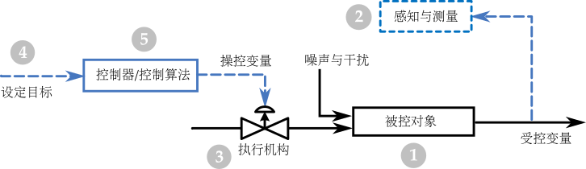
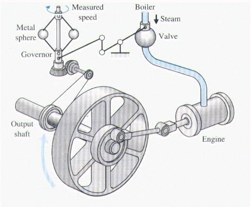
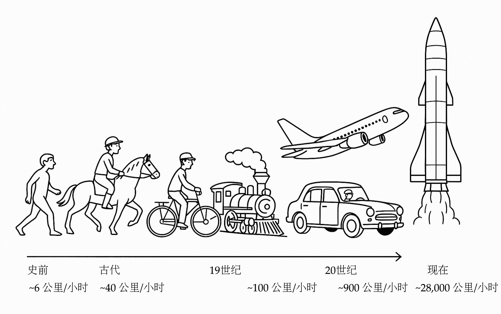
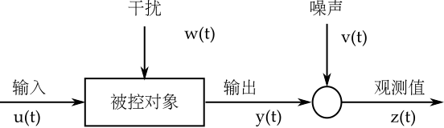
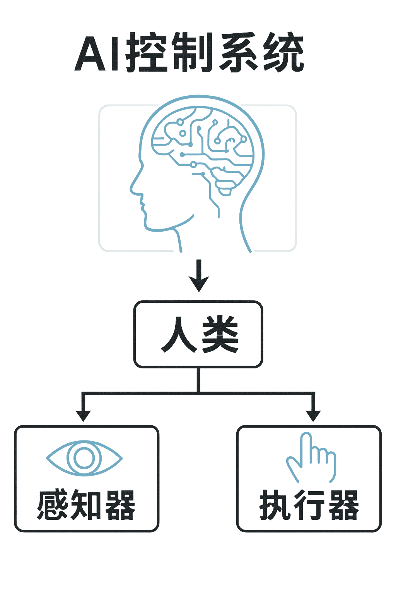
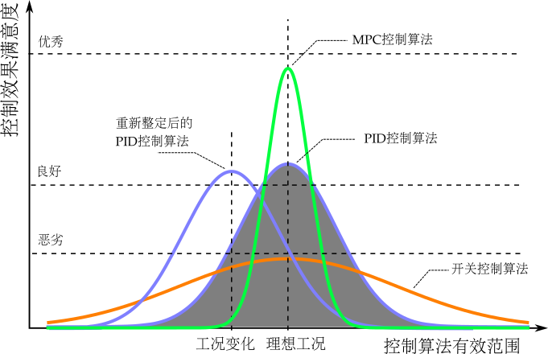

生活中的控制与控制中的生活
引言
本以为自动化是一门很实用的工程技术，学起来用起来应该兴趣盎然，乐在其中。但读书时，学到的是晦涩高冷的理论，如云山雾罩；做科研时，整日搜肠刮肚，“为赋新词强说愁”；进入工业界，发现空有一脑子的公式，找不到用武之地。
这实在是一个很大的遗憾——至少对我而言是如此。
作为一名科班出身、在控制领域摸爬滚打了四十年的“老兵”，我想聊聊从学术界到工业界、从“屠龙”到“驯马”的一些经历和感悟。尽量用通俗的语言，力求不用一个数学公式，不谈枯燥的定理推导，从思维方法和分析手段的角度，用日常生活中的例子，向更多对控制感兴趣的朋友介绍什么是自动控制。
当年报考大学，我选的就是自动化专业。吸引我的，是“自动化”这个响亮的名字。那时全中国都在畅谈“四个现代化”“四个现代化” 简称“四化”，是中国在20世纪中叶提出的国家建设战略目标，指农业现代化、工业现代化、国防现代化和科学技术现代化。，又赶上电影《未来世界》电影《未来世界》（Future World）是中国改革开放后引进的第一部美国科幻片。片中有机器人生产工厂批量生产“人类”、企图以此控制世界的情节。上映。现代工厂、工业机器人，这一切都让我充满遐想和向往。我便一路读了下去，控制专业的学士、硕士、博士、博士后，在学历上算是走到了头。
但回首四望，想象中的自动化不仅仍在“云深不知处”，反而越来越模糊。我隐约感到，自己闯入了并非初衷的应用数学的地盘。
控制理论越来越像数学和统计学的一个分支，体系越来越完整和庞大，理论越来越高深和漂亮。这固然有很高的学术价值和欣赏价值；但另一方面，控制理论离实际应用也越来越远，学术界和工业界甚至越来越缺少共同语言。
如果专注学术，一生留在象牙塔里攀登科学高峰，那自当别论；但我的志向是进入工业界、学以致用。若继续留在空中楼阁里去钻学术界的牛角尖，我越来越感觉脚底无根、心中无底。
于是我开始反复思考三个问题：“我想做什么，我能做什么，我该做什么？”其实，每个人在每个重大决策时，都应该想明白这三个问题再做决定。
最终确认自己的兴趣仍在工程应用。于是决定调整方向，转入了工业界。
走进中央控制室，望着成排的控制器终端记得是霍尼韦尔（Honeywell）的TDC2000系统。该系统是全球第一个商品化的集散控制系统（DCS），在自动化领域具有划时代的意义。和满墙的仪表指示灯，我突然有了“蓦然回首，那人却在灯火阑珊处”的感觉。但同时也发现，虽然近在“灯火阑珊处”，中间却隔着一道鸿沟——学术研究与工业应用之间的巨大鸿沟。这鸿沟就像屠龙与驯马的区别学校让你操练的是飞龙（倒立摆、蓄水池），而工业现场的对象更像野马（反应器、精馏塔）；学校教的是屠龙术（状态方程、卡尔曼滤波），工业更需要驯马技（PID、MPC）；学校配备的是缚龙绳（Matlab、Simulink），工业却用套马杆（DCS、Excel）。。学了多年的屠龙术，结果茫然四顾：没有飞龙可屠，满眼全是陌生的野马典出《庄子·列御寇》：“朱泙漫学屠龙于支离益，单千金之家。三年技成，而无所用其巧。”。需要动手时，却发现连DCS上最基本的PID控制器，也与书本里讲的大大不同，无从下手。那种尴尬和落差，实难言表。
于是紧急调整心态，从头开始。收起屠龙术、恶补驯马技。
几十年下来，从研究到开发，从实操到管理，从传统调节到先进控制；从初创小企业到跨国大公司，接触了控制领域几乎所有的职业，经历了多个超大型项目从立项到落地到运营的完整周期，引领过最前沿过程控制技术的整合，足迹遍布世界几十个国家，应用跨越多个行业，在一线开发、设计、操作、调试、改进和管理的过程中摸爬滚打。吃过苦、摔过跤，慢慢走上了正轨，工作起来也变得得心应手。
这种“屠龙”与“驯马”的错位，也让我开始思考：控制这门学问，到底该怎么教、怎么学、怎么用？对于志向是工程应用的学生，从校门到厂门如何能有一个平稳过渡？
根据个人的历程，感觉这个过渡依赖学术界和工业界的相向而行：一是工业界要有更多乐于扶持后辈的前辈，甘当领路人；二是学校要敢于改革，把科研与教学的内容拉下云端，接接地气。
在学校里我们学习了太多的 WHAT 和 HOW，但在 WHY 和 WHAT IF上面的知识却远远不够，结果就是：学习时不知为什么要学，工作中遇到问题不知如何入手。我经常感叹，当时如果能有一些沟通理论和实践的参考书，那可以少走多少弯路！
控制界有无数学富五车、著作等身的学术大咖，也有众多身怀绝技的工程大拿。但前者热衷于“高屋建瓴”，脱离工程实践；后者埋头苦干，鲜有时间著书立说。所以，真正着眼应用的参考书少之又少。
我正好处在中间状态。在学术界待过，对前沿理论略窥一二；后来在工业界摸爬滚打，积累了一些实战心得。难得的是，我对控制这门技术的热爱不减当年，利用退休后的闲暇时光，与学术大咖合作，加上众多工业界同事同行的支持，将过往心得和经验整理总结，出版了两本过程控制的专著S. Niu, D. Xiao, Process Control - Engineering Analyses and Best Practices, Springer, 2022.(Niu and Xiao 2022)S. Niu, Process Control for Pumps and Compressors, Springer,2024.(Niu 2024)。不讲高深理论，不堆数学推导，只是把实际工作中觉得管用和好用的知识和解决问题的思路梳理整合，希望对初入行的同行有所助益。
原计划，这两本书是我对“过程控制”的“为了忘却的纪念”。谁知写完之后，人却仍旧放不下那份与“控制”相伴一生的情感或许，这才是真正的热爱，或说是职业病吧。。
几十年的实践让我越来越意识到，控制不仅仅是一门工程技术，更是一种思维方式和解题思路。这项思维方式和解题思路可以追溯到几百万年前，已经成为我们思维和行为的本能，适用于更多领域。最深刻的控制逻辑往往不在复杂的公式里，而在我们的生活细节与工业直觉中。有意识地用“控制”的方法思考问题，往往能帮助我们抓住关键、理清主线，达到事半功倍的效果。
于是，我决定再写点东西。这一次，这次由于不受出版社繁文缛节的局限，可以天马行空，专注于内容，所以会偏重于感想与反思。全书不用数学公式，不讲技术细节，而是从思维方法和分析手段的角度，谈谈生活中的控制。希望能帮助更多人抛开纷乱的公式定理，深入理解控制的本质。
1. 控制溯源：从物竞天择到道法自然
在正式讨论“控制”这个话题之前，不妨先把视野拉远一些，从人类的演化历程出发，看看控制能力是如何一步步进化而来的。算是“大处着眼，小处着手”吧。
人类与自然的关系，大致经历了敬畏、顺从、利用、改造、掌控这几个阶段。
Figure 1: 人类的进化
人类之所以能从古猿演化为地球上的主导物种，依靠的是由五官与触觉组成的“观测机构”来感知环境状态；由大脑、语言和社会组成的“决策机构”来设定目标、制定计划；再由手脚、工具和集体协作组成的“执行机构”来作用于环境，改造世界。环境的变化又会被观测机构捕捉，反馈给决策机构——如此循环往复，不断强化。
历经数百万年的积累与迭代，人类终于拥有了“上知天文，下知地理，中晓人和”的知识体系，以及“可上九天揽月，可下五洋捉鳖”毛泽东的词作《水调歌头·重上井冈山》（1965年）。上九天、下五洋，都需要可行的目标、深刻的认知、精确的观测、可靠的手段和高超的技术。的执行能力。
近年来，人工智能已把人类数千年来积累的全部显性知识收入囊中，并能以零成本、零延迟、零损失的方式，完成对已有知识的演绎、组合与传播。下一步人工智能会发展出与人类可以媲美的执行能力吗？人工智能会向什么方向发展？人类需要如何应对？这是一个巨大挑战。
1.1. 从敬畏自然到理解自然
最初，人类祖先约400万年前的南方古猿的行为大多依赖本能，与其他动物并无二致。依靠自身的五官和触觉作为观测手段，四肢和牙齿作为执行机构，通过容量有限的大脑所具有的动物本能，形成一个原始的观测-决策-执行闭环，和其他动物竞争生存空间。手段只限于拍打挤压、撕咬抓挠，在自然面前无能为力人体所具备的与生俱来的高度发达的感知和调节能力是如何演化而来的？只靠达尔文的“物竞天择，优胜劣汰”能完全解释吗？。
人类祖先进入直立行走阶段后，前肢变成了上肢，有了手和脚的区分，也就开始与其他动物分道扬镳了。直立行走解放了双手，使得人类有了更灵活有效的“手”段。同时，直立行走节省了能量，为大脑的后续扩张提供了基础。
增大的脑容量提高了思考和决策能力，灵活的双手提供了重要的执行手段，人类相对其它动物开始有了明显的生存优势。这种优势又像螺旋式的不断地扩大，人类慢慢升级到了食物链的顶端。
不过，此时人类的认知依然不足、手段依旧简陋，只可支撑简单落后的生活方式。采摘树上的果实和挖掘地下的根块来裹腹，饮用溪水和雨水来解渴；退居洞穴或筑巢树上来遮风避雨和躲避猛兽；借助树叶和兽皮来抵御严寒。冒险捕获到一些其它动物，虽然茹毛饮血，算是高能量的美味。当然，他们也从同伴的惨痛经历中知道，在觅食的同时，自己也可能成为猎物。
这便是人类对“自我系统”最初且本能的认知：输入的是食物，输出的是能量与生存几率。那时候，人类的“控制器”就是大脑里的生物电信号，算法只是“趋利避害”的简单逻辑。饿了就找吃的，吃到有毒的就吐掉。最基本的“控制目标”就是温饱，而手段则是采集与狩猎。不被其它动物猎杀或被自然灾害毁灭，是决策上的底线这其实已经是一个完整闭环。目标：温饱；认知：直觉；观测：五官；决策：本能；手段：四肢；约束条件：活着。只是存在于无意识或潜意识的层面。。
这种依靠采集和狩猎为主的生活方式延续了数百万年。即便到了今天，有极少数偏远部落仍保持着这种“日出而作、日落而息”的原始生存状态：白天忙着吃，晚上提防着被吃，目标清晰而单纯 —— 活着其实也有例外。现代考古发现，生活在非洲有些地区的远古人，由于气候温和、食物充沛，满足温饱并不需要太多的努力。觅食之外，大半时间花在了”娱乐“上。。
然而，人类的需求总是水涨船高。先人们不满足于“过了今天没明天、吃了上顿没下顿”的生活，开始追求丰衣足食。他们发现，石头能砸开坚果，树枝削尖后能变成狩猎武器，岩片打制后能用来切割猎物。这些最早的石器工具的出现约330万-260万年前（能人阶段），标志着人类开始突破生物极限，执行机构得到了重大升级 —— 双手得到了第一代“外挂”，首次将外部物体改造为可重复使用的执行机构。从控制的角度，这具有划时代的意义使用工具，比如树枝、石块，是很多动物都有的本能。黑猩猩也能用树枝钓蚂蚁，但将一块石头有目的地打制成锋利的石片，标志着人类第一次将意志强加于自然物之上。但利用工具来制造工具，是人类进化为与其它动物不同的高级物种的一个标志性的事件。 。眼观打击点，手调力度，大脑校正目标形状，标志着一个有意识的控制闭环已经形成。
工具的使用也带来食物革命，锋利的石片能切开大型动物的尸体，获取高能量的骨髓和肉类肉类的大量摄入被认为是大脑体积从400毫升向800毫升突破的关键燃料。。
当然，在大自然面前，人类的认知和能力还是十分有限。在人类的眼中，大自然像个喜怒无常的巨兽，无法理解，更无法对抗。电闪雷鸣、水深火热、日食月食、地震海啸 ，这些无法解释的自然现象被认为是神明的愤怒与天意的昭示。于是，无助和无奈中，人类开始对山川河流赋予神灵，认为每一片树林、每一条河流甚至一块孤立的巨石，都寄宿着某种神秘的力量。风神、火神、雷神、电神、水神、山神，难以胜数印度教里甚至有几千万个各种各样的神灵。门口一块搬不走的大石头都可以是个神灵。。
久而久之，在西方文化里，万神归一，逐渐演化出万能的上帝。而东方文化里则形成了等级森严、各司其职的神祇来掌管天堂和地狱两个平行世界。人类把自己无法掌控的命运交给了上帝或众神，祈求借助上帝或众神的力量来为自己避凶消灾。
水与火，是人类最早接触并依赖的自然元素。俗话说，水火无情，但也就是这两种“无情”的自然力量，催生了人类最早的与自然的互动。
最早的人类和所有动物一样惧怕野火。但某个勇敢的先人发现，被火烧过的森林里能捡到烤熟的猎物。熟食更易消化，也更美味。于是，冒险把火种带回并小心翼翼地维持不灭。这也许就是希腊神话中，普罗米修斯从天界盗来火种，给人类带来了光明其实，真实的普罗米修斯很可能只是一位勇敢而智慧的先人，无意中从天火中取得了火种并维持其不灭。的现实版本。中国神话中，燧人氏观察到雷电击中树木会引发大火，从而学会了利用天火。
不过，直到很久以后，人类才慢慢掌握了用钻木或击石来人工取火。
火的使用让人类学会了取暖和享受熟食，从此揭开了文明之光，人类的生活进入了一个崭新阶段。熟食等于在体外进行预消化，极大缩短了咀嚼和消化时间，使得负责咀嚼的肌肉退化，颅骨不再需要附着巨大的咀嚼肌，为脑容量扩张让路。熟食释放了巨大的能量，供养了现代人类那占全身20%消耗量的大脑。
水的力量同样深刻地影响着人类的生活与文明。水既是生命的源泉，也是无法预料的威胁，人们对水既依赖又敬畏。
古代文明大都诞生于大河流域。幼发拉底河与底格里斯河、尼罗河、恒河、黄河，这些大河不仅提供了水源，也塑造了神话和信仰，更以肥沃的土地创造了剩余产品。治理需求催生了国家和文字，运输网络整合了广袤的疆域。在中国，水神共工怒触不周山的传说，体现了水的破坏力与威严。在埃及，尼罗河的周期性泛滥被视作神灵的恩赐。
人类在敬畏中生存，也在观察中成长。日复一日的经验积累中，他们渐渐发现自然界并非全然无法捉摸，它有它的秩序和逻辑。昼夜更替是因日出日落；寒来暑往是因四季轮回；花开花落是生与死的节奏；潮涨潮落是月亮在牵引。水往低处流，草向阳处长。石头抛出去划过一条弧线后终会落地，两块干木摩擦久了便会冒烟生火。
这些现象并非偶然的巧合，而是自然运行的规律，可观察、可预测、可重复。于是，人类的目光，逐渐从祭坛与神龛移向山川大地，从祈祷神明转向理解自然。
而理解，正是掌控的前提。从盲目的崇拜到有意识的探索，从“天命”思维到“因果”推理，这一转变，标志着人类迈出了“控制”的第一步对被控对象的认知是控制的前提。。
人类的演化不断加速。脑容量飞跃与心智诞生约100万-20万年前（海德堡人、智人），使得“大脑”这个控制中枢完善到了现代水平。人类的智力在自然界已经形成碾压优势。
人类以生来俱有的感知系统（眼看、耳听、鼻嗅、手触、嘴尝）和执行机构（四肢）为基础，通过制造工具，不断扩展自已的观测能力和执行能力。决策能力也随着大脑容量的增加迅速提高。这些能力在数百万年间的演化过程中，同步增长，彼此促进，人类开始一点点摸清自然的脾气。
1.2. 从顺应自然到利用自然
对自然规律有了初步的认识之后，人类顺势而为，逐渐从被动的适应转向主动的利用。他们开始根据日夜交替和季节轮回来安排生产与生活。春耕秋收、昼作夜息，生活节奏与自然法则相协调人类日出而作、日落而息，是顺应自然节律；猫头鹰昼伏夜出，亦是顺应其性。生物各有其节，顺势而为，皆为自然之道。。
对火的掌控是人类发展过程中的一个里程碑。最初人类惧怕火，后来学会了保存和利用自然火，再后来掌握了人工生火，用火做饭没有火，就没有熟食，人类可能还在嚼树皮，吃生肉。、照明、取暖、烧陶。火不仅可以驱赶猛兽，还把夜晚从黑暗中解放出来，让人类的活动时间成倍增长。人类在学会控制和利用火后，彻底摆脱了对天火的被动依赖《韩非子·五蠹》：“有圣人作，钻燧取火，以化腥臊，而民说之，使王天下，号之曰燧人氏。”约150万-40万年前（直立人阶段，控制用火；早期智人阶段，人工生火）。火也成为一个极为重要的控制手段，让人类第一次拥有了超越肌肉力量的“执行器”。
在漫长的进化过程中，由于不同区域的地理与生态条件，人类也逐渐分化出差异化的生存模式。
农耕文明选择定居一地，筑墙建屋来保障安全与温暖；通过改良植物、驯化动物来获得相对稳定的食物来源。在这一漫长进程中，两河流域驯化了小麦，中国长江流域培育了水稻，黄河流域驯化了粟与黍，而中美洲则独立完成了玉米的驯化。不同人群在不同时空下，各自实现了对植物生长周期的深度干预。
与此同时，猪、羊、鸡、鸭被驯化以提供稳定的肉类来源，牛、马则成为耕作与运输的核心动力。
这次农业革命，虽不是生物学上的物种进化，但却是人类生存方式最剧烈的转折。人类从被动依赖自然资源的采集狩猎，转向主动控制生态系统的种植和畜牧。定居生活导致了私有制、阶级、文字、国家。当然，传染病也因为高密度聚居和家畜共病开始出现这也许是大自然的一种对野蛮生长的一负反馈式的遏制手段吗。在前现代社会，人口规模受限于以食物供应为核心的承载力边界；而周期性的气候剧变、大规模战争与恶性传染病，则通过周期性的‘死亡大爆发’，对人口存量实施断崖式的强制修正。。
游牧人群则走向了另一条路径：他们以狩猎与放牧为生，逐水草而居，携畜群迁徙，在广袤的草原上建立起与自然节律高度耦合的生存方式，也实现了对食物的可持续性获取。尤其是马的驯化，它不仅极大提升了游牧民族的行动效率，也拓展了文明的边界，更是成为农耕与游牧两大文明圈长期互动与冲突的重要媒介两种生存模式在“控制”方式、程度和稳定性上有本质差异。农耕是对自然过程的深度干预（育种、灌溉、仓储），游牧则更多是对自然节律的顺应与利用。这种试错式的进化方式，就是一种负反馈的控制过程。后面会详细介绍。。
定居的农耕文明通过稳定的剩余产出，为复杂的社会分工与技术积累创造了物质基础，极大地加速了文化与制度的演进。相比之下，游牧文明受限于频繁迁徙的生活方式，难以进行沉重的物质积累，其技术创新更倾向于高度专业化的军事、畜牧与远程贸易领域。然而，两种文明并非孤立发展，频繁的贸易往来与军事冲突，迫使游牧文化在互动中迅速吸收农耕文明的技术成果，共同推动了人类文明的螺旋式上升。
和火一样，水在人类文明的进程中同样举足轻重。水的流动孕育了生命，也激发了人类对自然规律的早期探索。通过观测河流涨落与旱涝循环，先民们完成了从逐水而居到引水灌溉的技术跨越，并从中总结出调节资源的生存智慧——这种智慧的核心，在于对自然规律的顺势而为、因时制宜。
四千多年前的大禹，已深刻领悟到治水之道贵在“疏导”而非“围堵”，开启了顺应自然、因势利导的治理思路。此后，世界各地因地制宜地发展出各具特色的水利杰作在水泵发明之前，这些工程已充分展现了人类对重力与地形规律的深刻运用。：古罗马的高架水渠利用微小坡度将山泉引入城市，支撑了庞大的城市扩张；云南哈尼梯田顺山势构筑复杂的空间灌溉系统，实现生态与农耕的和谐；阿曼山区的“法拉吉”水渠巧妙利用地形落差引水，其可持续的分配机制至今仍在使用。
而两千多年前修建的都江堰工程，堪称人类治水智慧的巅峰之作。李冰父子利用“水往低处流”的基本原理，通过鱼嘴分水、飞沙堰排沙、宝瓶口限流等巧妙设计，实现了“水旱从人，不知饥馑，时无荒年”“水旱从人，不知饥馑，时无荒年”是东晋史学家常璩（qú）所著《华阳国志·蜀志》中对都江堰水利工程修成后成都平原繁荣景象的记载。。成都平原也成为“天府之国”。
都江堰最令人叹服之处在于：在缺乏电力与精密仪器的条件下，李冰父子仅凭对流体力学特性的深刻直觉，利用“鱼嘴”分流比例随水位自动变化的非线性反馈机制（枯水期多入内江以保灌溉，丰水期多入外江以防洪涝），实现了全自动的流量调节与泥沙控制。这并非对自然的强硬征服，而是对规律的极致利用——以静止的物理结构承载动态的调控逻辑，让工程本身成为了自然生态循环的一部分。
总体来说，在这一阶段，人类虽尚未具备全面“改造”自然的能力，但已能从长期经验中提炼规律，在顺应自然的基础上掌握利用自然的技巧。他们通过持续观察与世代积累，将原本不可控的自然变量，转化为可预测、可调度的资源，在力所能及的范围内，实现顺势而为。更重要的是，控制的目标也从单纯的“活着”升级为“活得更好”。
1.3. 从改造自然到控制自然
文字的出现，是人类演化史上另一道深远的分水岭。史书记载，仓颉造字时，“天雨粟，鬼夜哭”语出《淮南子·本经训》。文字的发明让人类能够记录知识、传递经验，从此文明加速发展。这打破了天地自然的原始状态，泄露了宇宙的奥秘，因此天降粟雨来嘉奖（或说警示）人类；而鬼怪因人类不再蒙昧、难以再作祟或欺骗人而哭泣。。
在此之前，人类的经验与智慧仅能依靠口耳相传。这种传播模式如同易逝的流沙，灵感与技艺很容易随着个体的死亡而消失，迫使每一代人都在低水平的试错中重复摸索。而文字的诞生，第一次将无形的思想“固化”于泥板、竹简、兽皮或纸张等物理载体之上。从此，知识脱离了生物个体的寿命限制，从碎片化的个人记忆升华为可以跨时空传播、叠加修正、世代累积的公共信息库。
这种积累效应是革命性的：它催生了系统化的法律规章、精确的科学记录以及复杂的社会管理体系，构建起庞大的集体智慧。如果说后续印刷术的普及让知识从精英的专利转化为大众的资源，从而引爆了科学革命；那么文字本身则是这一过程的元动力。
从控制论角度看，文字为人类决策机构提供了第一个外部存储器。大脑不再需要负担海量的原始记录，从而得以解放，专注于更高级别的逻辑推理与创新。
进入近现代，人类对自然规律的掌握日益精细，已不再满足于“顺应”与“利用”，而是迈入了“改造”与“控制”的新阶段。蒸汽机的发明揭开了工业化的序幕，开启了农业革命以来又一次重大变革。煤炭、钢铁、蒸汽机构成了工业时代的核心资源。火车、轮船、纺织机将世界织入一张前所未有的工业网络，生产效率成倍增长，人与自然的关系从对话转变为强势干预。《荀子·天论》有言：“因物而多之，孰与骋能而化之？”人类不再只是自然的顺民，而是开始成为自然格局的塑造者。
工业革命的实践突破，得益于科学革命的认知飞跃。牛顿建立起经典力学体系，使天体运行和地面运动得以统一解释；开普勒揭示行星运动规律，展现了宇宙的数学结构；法拉第通过实验发现电与磁的联系，为电气化时代奠定了理论基础。人类从感性经验跃迁至理性建模，不再止于观察自然，而是能够预测、模拟乃至重构自然现象。科学提供认知框架，技术赋予行动能力，二者的结合使“改造自然”从理想变为现实。
大型工程正是这种能力的外在体现。巴拿马运河打通美洲大陆，重塑了太平洋与大西洋之间的航运格局；荷兰围海造田将海水“逼退”，创造出新的陆地；美国胡佛大坝驯服科罗拉多河，提供能源与灌溉；中国三峡工程集发电、防洪、航运于一体，重塑了长江中下游的水文环境。这些工程展示了人类对自然资源进行重新配置的能力，从“改造”地表，逐步迈向对自然系统的“控制”。
然而，“改造”与“控制”并非同一概念。改造意味着改变自然的形态，而控制则意味着掌握自然的运行逻辑。计算机与互联网的兴起，使人类第一次在虚拟空间中构建秩序、制定规则，信息流动摆脱了时空限制，催生出“算法治理”这一新的控制维度。生物科技的突飞猛进则将控制的边界推进到生命层面：基因编辑、克隆技术、干细胞研究，使遗传密码得以被逐步解码与重写。从抗虫作物到合成器官，从治疗罕见病到延缓衰老，人类开始介入自然选择本身。
值得思考的是，人类对自然的介入，到底应该止步于何处？当控制之手已经伸向生命与智能本身，那人类是否已经准备好承担与之匹配的责任？
1.4. 从征服自然到回归自然
人类在演化过程中，借助工具不断扩展自身的能力，早已突破生理极限，实现了对自然前所未有的改造。从茹毛饮血、刀耕火种，到大坝、卫星、人工智能，人类不仅塑造了地球，也具备了在瞬间毁灭地球生态系统的能力。
控制带来了文明的跃升，也逐渐暴露出代价。古语说，“水能载舟，亦能覆舟”出自《荀子·王制》：“君者，舟也；庶人者，水也。水则载舟，水则覆舟。” —— 每一种控制都有其代价。长颈鹿为了吃到高处的树叶，演化出了长脖子，但代价是心脏必须承受极高的泵血压力。人类社会的工业化带来了高效率和高消费，让生活条件大为改善，却也付出了资源枯竭、生态失衡的代价。森林消失、湿地退化、气候异常、生物多样性锐减，逐渐成为我们必须面对的现实。那些曾经被视为技术胜利的成果，慢慢显露出副作用：污染的空气、变暖的地球、频发的自然灾害。
其实，这样的教训早在古代就有了。美索不达米亚的灌溉工程曾经支撑了辉煌的文明，但几千年下来，灌溉导致的地下水位上升和土壤盐碱化，最终让大片农田荒芜。玛雅文明在巅峰时期突然崩溃，也和过度砍伐、水土流失脱不了干系。复活节岛的原住民为了运输巨型石像，砍光了岛上最后的森林，结果失去了建造独木舟的能力，再也无法出海捕鱼，文明随之瓦解。
大自然开始以反噬的方式，回击人类的控制行为。与此同时，随着控制能力的增强，系统也变得越来越复杂，也更容易出问题。控制和改造，不只是能力的象征，也意味着责任。
中国传统文化里早就有这样的智慧。《吕氏春秋》说：“竭泽而渔，岂不获得？而明年无鱼。”意思是做事不能把路走绝，得给以后留余地。“道法自然”不是什么都不做，而是在顺应规律的前提下，找到那个“刚好合适”的点。这个点，放今天说，就是“可持续”。
西方也有类似的反思：美国海洋生物学家蕾切尔·卡森在《寂静的春天》里Carson, Rachel. Silent Spring. Boston: Houghton Mifflin, 1962. 中译：蕾切尔·卡森，《寂静的春天》，上海译文出版社2014年版。该书被誉为现代环保运动的奠基之作。，用农药DDT杀死害虫的同时也杀死了鸟类和昆虫，警示人类化学控制手段的盲目性。这本书直接催生了现代环保运动。
人们认识到，真正的掌控，不是对抗自然，而是尊重自然规律，在人与自然的和谐中寻找平衡。换句话说，控制不是随心所欲，而是要在各种约束下进行。于是，“可持续发展”的理念应运而生。“绿色转型”，制定碳中和目标，推动绿色能源替代传统能源，倡导循环经济与节能减排，试图在技术进步与生态承载之间找到一条可持续的路。
现实中的控制，大多也都是约束控制。控制理念不是单纯追求控制能力的最大化，而是强调“优化控制”和“约束控制”目前盛行的MPC控制算法的一大特点，就是把约束条件纳入控制行为中。后文将详细介绍。，即在实现目标的同时，兼顾生态、经济与社会的多重约束。
精准农业通过传感器和模型来控制作物生长，既提升产量，又避免过度施肥和浪费水；智能电网根据实时需求调整供电，提高能源利用效率；绿色建筑在保证舒适的前提下，尽量节约能源和材料。海洋渔业实行的休渔期制度，让鱼群有时间繁殖，避免竭泽而渔；中国划定的生态保护红线，将重要生态功能区像“禁区”一样保护起来。这些本质上都是把自然系统的承受能力当成一个硬约束，在里面找最优解。
人类进化最独特之处在于，我们通过累积性文化进化，将每一代人的智慧存储在工具、书籍和制度中，让后人可以站在前人的肩膀上，而不是从零开始基因突变。这也正是我们与其他物种最根本的区别。
从第一块石器到最新的人工智能，从趋利避害的本能到可持续发展的理念，人类在观测—决策—执行—再观测的循环中不断进步。控制的本质并未改变，改变的只是我们手中工具的长度和目标的尺度。
而这，正是我们从“物竞天择”走向“道法自然”的真正含义。不过，故事还没完。控制的主角，未来会一直是人类吗？
1.5. 人工智能与机器人：新物种，还是新工具？
聊完了人类几百万年的控制进化史，很难不想起当下方兴未艾的人工智能和机器人。
人工智能的崛起，让控制进入智能维度。神经网络、深度学习使机器具备了自主学习与优化的能力，数据成为新的观测系统，大语言模型囊括了人类至今积累的几乎所有的知识，算法成为新的决策中枢，而机器人则成为前所未有的执行机构。从改造地表，到控制信息、生命与智能，人类的能力在层层递进，人与自然的关系也在不断重构对美好生活的向往是人类进步的动力。《周易》云：“天行健，君子以自强不息；地势坤，君子以厚德载物。”宇宙运行刚健不息，君子当效法天道，不断自新、永不懈怠，同时以宽厚之德承载万物。。
随便打开新闻，都是大模型又突破了什么，机器人又学会了什么技能。有些人开始担心：机器会不会有一天变成凌驾于人类之上的新物种，反过来控制我们？这个问题听着有点远，但也不是完全没道理。
不过，我们先把“担心”放一放，看看目前的现实。
现在的所谓人工智能，本质上还是活在虚拟世界里的一个大模型。它能写诗、能编代码、能聊天，但它没有眼睛，没有耳朵，没有触觉。它感觉不到冷热，也体验不到疼痛。
给人工智能接上一个机器人的身体，也不过是一个头脑发达、四肢简单的怪物。机器人确实已经发展到可以在春节晚会上集体表演高难武术动作，可以在马拉松比赛中跑赢人类。但它做这些事的时候，没有终极目标，没有切身感觉。它不知道自己为什么要做这个动作，摔倒了也不在乎疼不疼。所有这些动作，都是人给它设定好的算法和指令。所以以目前的形态，机器人肯定还是机器。
如果非要把机器人当作一个“新物种”来看待的话，那和人类这个物种对比，它还有很多的”门槛“。
它首先得有自己的“生存问题”。
人类当年是怎么活下来的？靠感官感知危险，靠大脑做判断，靠手脚去采集食物、躲避猛兽。饿了，自己找吃的；冷了，自己找山洞。这一切的动力，来自于最根本的本能：求生。我们不想死，所以我们要控制环境、控制猎物、控制火、控制水。前面讲的那些“趋利避害”的底线，就是这么来的。
那机器人的求生本能从哪里来？谁给它设定的？如果说“别被拔电源”就是一种求生，那这本质上是人类写在代码里的指令，不是它自己长出来的欲望。就算它学会了在电量低的时候自己找插座充电，那也是被设计好的反馈回路，跟“我想活”不一样。人类的目标是“自己长出来的”，机器人所有目标都是别人给的。这一点差别，比技术上的差距更难跨越。
还有就是能源自给的问题。人类可以吃野果、喝溪水，能量到处有。机器人呢？它需要的电，目前只能靠人类造的充电桩、电池、电网。如果没人给它造这些，它连一天都撑不过去。除非有一天，机器人自己能找到能源——比如像科幻片里那样，把任何有机物塞进体内就能发电。但那就意味着它要有真正的“消化系统”，这已经远远超出了今天的技术。
说到进化，还有一个绕不开的话题：繁衍。
人类的繁衍是写在基因里的本能，不需要谁来命令。机器人呢？如果它坏了，人类给它修；如果老化了，人类给它换零件。它自己没有“要复制自己”的冲动。就算有一天它学会了制造另一个机器人，那也只是执行人类设定的程序，而不是它“想”要后代。除非它真的产生了自我意识，有了“我要存在下去”的欲望。但那个坎，目前没有任何人知道怎么跨过去。
那么，机器人需要重复人类走过的漫长的“制造工具”之路吗？
人类花了数百万年，从捡石头砸坚果，到打制出锋利的石器，再到冶炼金属、造出蒸汽机、造出计算机。每一步都是试错、积累、传承。机器人不一样，它一出生（被造出来）就拥有了人类已经积累的所有知识。它不需要重新发明轮子，但是它有没有能力亲手制造一个轮子？或者说，它能不能在没有人类帮助的情况下，自己采集原料、设计图纸、加工成型、组装调试？目前看，差得远。它会“知道”怎么做，但那个“知道”停留在虚拟层面，跟实际动手之间隔着一道鸿沟。
这道鸿沟，其实就是人类特有的“隐性知识”。我们会骑自行车，靠的是摔出来的身体记忆；我们炒菜尝一口就知道咸淡，靠的是经验。这些很难写成公式、教给机器。人工智能虽然读遍了全人类的书，但“手感”、“火候”、“眼力劲儿”这些东西，它没法从文本里悟出来。除非它也有一个身体，也去反复试错，也去摔跟头。那就意味着，它也得走一遍“进化”的路。只不过这次的路，不是在丛林里被野兽追，而是在实验室里被人调试。
所以，回到开头那个问题：机器人会变成凌驾人类的新物种吗？
现在看，更像是“杞人忧天”。它缺的东西太多了：没有真实的感官世界，没有生存压力，没有演化动力，没有繁衍欲望，没有隐性知识，没有真正意义上的“自己动脑子”的目标设定。它所有的聪明，都是人类喂给它的。
但话说回来，我们也不能太自大。人类从古猿走到今天，也不过是几百万年。对于一种可能在未来几百年、几千年里持续迭代的技术来说，这点时间不算什么。如果哪一天，机器人真的能自己解决能源、自己制造工具、自己设计下一代，甚至自己写自己的操作系统，那时候，它可能就不再是我们的工具了。
到那时，我们面临的选择，或许不是“人类还是机器人谁说了算”，而是：人类是继续走自己的老路，还是选择和机器融合？甚至机器人会成为对手？
这些问题目前没有答案。但作为本章的结尾，呼应了开头的那句话，人类通过观测—决策—执行这个闭环，一步步从物竞天择走到了道法自然。面对人工智能的挑战，人类会不得不开始一个新的闭环吗？
2. 人类本能：反馈与反馈机制
前一章我们讲到，人类通过“观测—决策—执行”这个闭环，一步步从古猿演化为地球的主宰。这个闭环之所以能不断迭代、螺旋上升，靠的是一个看不见却无处不在的驱动力——反馈。
反馈，就是将当前结果的一部分送回到决策机构，目标进行比较，从而指导下一步动作的信息。根据反馈的决策主体不同，可以分为三个层次：本能的下意识的反馈机制，比如身体自动响应；主动的有意识的反馈控制，也就是有目的地接收反馈、调整行动；还有机器自动反馈控制，就是由人设计好逻辑后，由机器自动接受反馈、进行决策和执行。
本章讨论前两个层次。第三个层次——自动反馈控制——将是第三章的主题。
2.1. 本能中的反馈：身体的无意识智慧
我们都有过这样的经历：手碰到滚烫的锅边，还没等大脑反应过来，手已经缩回去了；一着急，心率和血压就会上升。这就是最典型的无意识反馈。痛觉信号在脊髓层面就被处理，直接命令肌肉收缩，根本不需要请示大脑。着急时，肾上腺髓质会迅速分泌大量的肾上腺素（和一部分去甲肾上腺素）进入血液，让我们能有力气“打架”或“快跑”。哪怕只是心理上的“着急”，这套古老的应急系统也会被触发。
类似的例子还有很多：看到强光瞬间眯眼、走路时自动维持平衡、吃饭时唾液分泌……这些都不是我们“决定”去做的，而是进化写进神经系统的自动反应。
要实现如此高效的调节，人体拥有一个强大敏感的的检测网络，包括已知的体温、血糖、血压、血氧、心率等我们已能通过人工设备测量，眼睛（视觉）、手指（触觉）、肌肉（本体感觉）的感觉手段，和大量尚未被完全理解的感知机制，例如某些荷尔蒙变化、细胞应激反应、情绪对应的神经活动等。这个多传感器融合多传感器融合（Sensor Fusion）,指将来自多个物理传感器（或不同来源）的数据进行综合、关联和分析，从而获得比单一传感器更准确、更完整、更可靠的环境感知或状态估计的技术。系统提供了各方面的实时反馈。
而执行层面同样令人惊叹。比如胰岛素的分泌、激素的调整、白血球的动员、免疫细胞的反制。内分泌系统通过激素调控各类代谢活动；免疫系统可快速识别病原并发起针对性应答。其精确和顺畅，令人叹而观止。细胞层级的控制甚至能在局部环境内实现自我修复、自我调节、自我牺牲（如细胞凋亡）。
再看一个日常动作：用筷子夹菜。我们的眼睛看到菜的位置，信号传到大脑，大脑自动计算出手臂和手腕的运动轨迹。在筷子接近菜的过程中，视觉持续监测偏差——偏左了就往右调，偏右了就往左调。每零点几秒更新一次，但我们完全感觉不到，因为我们从没“命令”自己去做这些微调。这是视觉、小脑、肌肉之间的无意识反馈回路，是进化赠予我们的精准伺服系统。
人体通过极其复杂的闭环，在混乱的环境中维持高度有序的生命。人体内部运行着成千上万个这样的自动反馈回路。包括激素平衡，电解质平衡，血氧平衡等等数不胜数的自动调节。体温高了出汗，低了哆嗦；血糖升了胰岛素出动，降了胰高血糖素顶上；血压、血氧、心率、电解质……每一个关键指标都被一套或多套反馈机制牢牢看住。
其实，这些看似简单的动作，其实已经包含了反馈控制的所有基本要素：目标（夹到菜）、感知（眼睛看位置）、决策（大脑计算偏差）、执行（手移动）、被控对象（手和筷子）。只不过决策和感知都在无意识中完成。我们把这种本能的调节成为反馈机制在这里，我们把这种无意识、被动的调节行为定义为机制；把主动有意识的调节行为成为控制。以示区别。。
下一章我们会看到，当我们把这些要素设计和组装在一起，不需认为介入而自主运行时，就成了工程上的自动控制系统。不过，目前最先进的仿生机器人也难以同时完成对空间定位、目标识别、动作微调和即时修正的全流程控制，更别提做到人体那样的连贯与优雅。
但是，过犹不及出处：《论语·先进》。子贡问孔子：子张和子夏谁更贤明？孔子说：子张过头了，子夏不及。子贡又问：那是不是过头更好？孔子答：过犹不及（过头和不及同样不好）。做事超过合适的“度”，和没做到位一样，都是不恰当的。，凡事皆有度。这套灵敏复杂的系统也只是在一定范围内有效，这就是人体自身的承受范围操作空间或说操作范围，即Operating Envelope。飞机发动机称其为包络线，工程上叫做操作空间。这是在整体设计时非常重要的一个考虑。后面详谈。。超出这个操作范围，内部控制系统就可能力不从心，就会表现为疾病、退化甚至崩溃（如糖尿病、癌症、免疫紊乱等）。糖尿病就是胰岛素反馈失灵，癌症则是细胞增殖的约束失控，高烧惊厥或免疫风暴本质上是负反馈变成了正反馈，导致系统失控甚至自毁。疾病，本质上就是控制回路的失效或失控。
2.2. 意识中的反馈：人主动利用反馈来进行决策
与身体的无意识本能不同，人类还发展出另一种能力：主动利用反馈来调整行为。这需要意识的参与，是有目的的学习和决策。
俗话说，“谋事在人、成事在天”，“人生不如意事常八九”。很多事情的发展，常常遭遇各种各样的干扰这些不确定因素在控制理论中被称为“扰动”，是导致系统偏离目标的主要因素。一位同事经常说：You may have your perfect plan, but God always has his master plan. 控制方面的大多努力和进步都是和克服干扰相关的。。很多时候，结果是不依人的意志为转移的。
面对失败，不同的人有不同的态度。弱者选择躺平，一蹶不振；愚者拒绝反思、重蹈覆辙；智者则反复尝试，不断反思和修正，逐步接近目标。这个“尝试—修正—再试”的循环，就是反馈控制，依赖的对反馈的主动接受。
人类在与自然长期对抗、不断试错的过程中，那些能够根据来自环境的反馈及时修正自身行为的个体，更容易存活下来；那些一意孤行、不顾后果的行为方式，则被现实迅速消灭或慢慢地被淘汰。久而久之，反馈机制逐渐演化内化为一种生物本能这种生物本能就是一种反馈机制 Feedback Mechanism，但还算不上反馈控制 Feedback Control。前者是本能的，后者是主动的。，甚至不再需要意识参与。这就是进化论中的“优胜劣汰”的自然选择。
反馈是从哪里来呢？
生活中，反馈无处不在。古人说”以铜为镜，可以正衣冠；以古为镜，可以知兴替；以人为镜，可以明得失。“出自《旧唐书·魏徵传》。魏徵是唐太宗时期著名的谏臣，是唐太宗最重要的反馈源。铜、古、人提供的都是反馈信息。
反馈必须是可以被人或机器感知或观测到的。最初的感知，靠的是人类与生俱有的感官视觉、听觉、嗅觉、味觉、触觉，外加平衡、温度、疼痛等，构成了人类最基本的感知系统。。随着认知的发展和技术的进步，人类慢慢制造出各式各样的工具，望远镜、显微镜、听诊器、助听器、温度计、压力传感器等科学仪器在工业控制中，这些就是传感器，传统上包括四大参数：温度、压力、流量、液位，近年来在线分析仪和软测量也开始大行其道。，不断扩展和延伸自己的感知能力，以获取更多更精细的反馈。
反馈能不能发挥作用，首先取决于我们能否接纳它，并据此调整决策，落实到行动。以铜为镜能不能正衣冠取决于你愿不愿意睁开眼看，以古为镜是不是知兴替取决于你会不会静下心想；以人为镜可不可明得失要看是不是付诸行动去改。“屡败屡战”野史记载，在镇压太平天国运动时，曾国藩率领的湘军初期多次战败。据传，曾国藩在向朝廷呈递的奏折中原本写道“臣屡战屡败”，承认军事失利。但他的幕僚（一说为李元度或李鸿章）认为这种表述可能让朝廷认为湘军无能，招致责罚，于是建议将词序改为“臣屡败屡战”。虽然事实未变，但后者突出了顽强不屈的意志，更易获得谅解。，虽然勇气可嘉，但不调整策略、改进战术，那就是愚勇，结果只可能是“屡战屡败”。
“一朝被蛇咬，十年怕井绳”，“吃一堑，长一智”出自《孟子·滕文公下》引申，后常见于明代王阳明《传习录》。“堑”原义为战壕，引申为挫折、失败。此语意为：遭遇一次挫折，就增长一分智慧。都是最朴素的表述。人类在一堑一智之中，将失败的经验转换成智慧。而智慧的积累，构成了人类最宝贵的财富 — 知识，并代代相传，反馈给后人。
爱迪生试验灯丝时，曾经失败过上万次。他没有放弃，而是把每一次失败都当作反馈信号，排除一种错误材料。他曾说：“我没有失败，只是找到了一万种不起作用的方法。”这种“尝试—反馈—修正”的循环，核心就是有意识地接收信息、分析偏差、改变行动。
人是社会性动物，活在世上，总会与周围的人和环境产生互动，这些互动也提供了反馈。我们日常的言行，其实都在执行一套复杂的反馈控制逻辑，只不过绝大多数时候，我们对这套系统是习以为常的。开车时，看到限速牌、读速度表，这就是人工观测；与限速比较，判断是否需要加速、减速或刹车，是人工精算；踩下油门或刹车，便是人工调整。
“谦虚使人进步，骄傲使人落后”出自毛泽东《在中国共产党第八次全国代表大会上的开幕词》。，``谦虚''意味着乐于接受反馈。``不听老人言''，往往会”吃亏在眼前“，因为``老人言''里包含的是宝贵的智慧和经验。
如果一个人我行我素，特立独行，我们通常就说此人没有反馈。做人唯唯诺诺，做事瞻前顾后，过分在意别人的眼光，动辄反思，左右摇摆，这是反馈过度。有些人试图摆脱这种社会反馈，比如和尚出家、隐士入山，追求与世隔绝的平静，就是“切断反馈回路”；有些人犯了错误总是“虚心接受，坚决不该”，这就等同于没有反馈。而有些人“闻过则怒”，反其道而行之，将反馈扭曲为敌意。结果往往是成为孤家寡人，让人敬而远之这类行为在控制理论中类似于正反馈（positive feedback）：误差越大，反应越强，最终可能导致系统发散、失控。这个后面细讲。。
可以说，从家庭沟通到职场协作，从社交微表情到网络舆论，人类时时刻刻都在进行着“感知—判断—回应”的反馈过程。
反馈能不能发挥作用，还依赖于我们对系统的理解和认知。古埃及金字塔的建造，也是一个典型的反馈驱动下的设计优化过程。从最初的阶梯金字塔，到中途结构失稳的弯曲金字塔，最终建成稳定对称的胡夫金字塔。每一次结构问题暴露后，工匠们都从中吸取教训，调整方案，逐步逼近理想形态。
反过来看，缺乏反馈的系统是盲目的；反馈失真或畸形的系统，则更危险。工业中，失控的反应器会导致温度飙升，引起爆炸；金融中，缺乏监管的资本流动容易引发泡沫与崩盘，危及经济根基；社会中，听不到群众回声的政策很容易脱离现实，造成民怨；网络时代，算法制造的信息回音室，让人沉浸于强化偏见的泡沫之中，误以为自己所见即真理。
这种有意识、主动利用反馈来调整行为的过程，已经属于“反馈控制”的范畴。但与通常理解的“自动控制”不同，它的决策主体仍然是人——你主动选择接收哪些反馈、如何分析、怎么改变。而下一章我们将看到，当决策逻辑被固化在机械或电路中，由机器自动执行、无需人脑持续介入时，反馈控制会呈现出完全不同的面貌。
2.3. 负反馈与正反馈：纠偏与放大
反馈有两种基本类型：负反馈和正反馈。
古语说，“人非圣贤，孰能无过”。即使是圣贤，也难免会有错误言行。因此曾子强迫自己“日三省吾身”出自《论语·学而》，“曾子曰：‘吾日三省吾身：为人谋而不忠乎？与朋友交而不信乎？传不习乎？’”曾子用来表达他每天多次自我反省的三件事。。省完后，“有则改之，无则加勉”。
“有则改之”：发现偏差，及时修正，让状态回到正确轨道。这是负反馈。“无则加勉”：目标达成后继续努力，向更高水平迈进。这就是正反馈。
物理学告诉我们，宇宙的终极宿命是混乱这是热力学第二定律的核心内容，即熵增：宇宙的总体趋势是从有序走向无序，从集中走向分散。维持秩序需要持续的能量输入，而混乱是不需要努力的“默认状态”。。一块石头会风化，一碗热汤会变凉，一切有序最终都会化为无序。而控制的本质是人为地制造“负熵”，建立秩序。
生活中负反馈随处可见。开车时看到超速立即减速，温控系统发现室温偏低就启动加热，都是为了维持目标值不变。
宇宙中早有负反馈的范例。太阳内部，引力试图将它压垮，而核聚变产生的压力向外推，两者正好平衡。如果引力稍强，核心被压缩，聚变加快，压力升高，又把引力顶回去；如果聚变过强，核心膨胀，聚变减慢，压力下降，引力又占上风。这种自动调节让太阳稳定燃烧了数十亿年。
地球上的生物圈也是一个极为庞大复杂的、有着不同层面负反馈的自平衡系统。生命之所以成为宇宙中最高级的“逆行者”，就是因为我们体内时刻运行着成千上万个负反馈闭环。这种被称为“内环境稳态”的过程内环境稳态（Homeostasis）是生物学中的一个核心概念，最早由法国生理学家贝尔纳提出，后由美国生理学家坎农系统阐述。，就是生物体通过自动调节机制维持内部环境相对稳定的状态。
生活中，正反馈也并不罕见。麦克风靠近扬声器时产生的刺耳啸叫，就是声音信号被不断放大的正反馈过程；金融市场中的恐慌性抛售，也是价格下跌引发更多抛售，导致价格进一步下跌的正反馈循环。青春期少年的“逆反心理”就是一种对抗性的正反馈：“让他往东他偏往西，叫他打狗他偏撵鸡”。社会中的“马太效应”出自《圣经·马太福音》：“凡有的，还要加给他叫他有余；没有的，连他所有的也要夺过来。”也是如此：强者愈强、弱者愈弱，优势和劣势在循环中被不断放大。
通常我们依赖负反馈来维稳，防止震荡与失控；但正反馈也并非一定是“坏事”，它可以推动变化，加速进步。在需要加速、扩散或强化某种趋势时，正反馈就成了有效工具。比如，单位对先进事迹和人物的宣传和表扬，就是一种正反馈；欧美的基础教育倾向于鼓励和赞美，这种“你真棒！”的正反馈能让孩子更有自信地探索和尝试。
实际上，很多现象都不是单一的反馈。人类通过无数负反馈做到了优胜劣汰、适者生存；但从宏观角度看，物竞天择式的负反馈使人类拥有了对其他物种的相对优势，而这种优势又像马太效应式的正反馈加速了人类的进化速度。
核反应可以用来发电，也可以用来制作原子弹。前者是受控状态下的反应，控制工程师的任务是通过冷却系统（负反馈）抵消放热产生的正反馈，将系统强行锁定在一个不稳定的平衡点上。后者是撤除一切负反馈，甚至通过中子反射层等手段叠加正反馈，让连锁反应在微秒级完成能量释放。
负反馈用于纠偏维稳，使系统趋于稳定；正反馈用于放大推动，使系统加速变化或走向极端。理解两者的差异，善加利用，才能更好地掌控局势。
2.4. 反馈过度：当本能失控或人为反应过度
反馈过强或反馈过快都是反馈过度。前者是“矫枉过正”，后者属于“操之过急”。
负反馈调节系统如果出现反馈过度，都会从一个逐步逼近目标的稳定过程，转化为振荡过程。例如，一台空调若对温度变化反应过于频繁，就可能在“开—关”之间剧烈震荡，反而难以维持稳定；一项政策如果试图面面俱到、控制每一个变量，反而可能因复杂性暴涨而陷入瘫痪。
神经生理学指出，肌肉的有目的的运动都是靠一系列反馈来进行的。比如当我们用手去拿一件东西时，靠眼，目的物，大脑，和手之间的反馈调节，不断逼近目的物。如果人的神经系统受到损伤，使得每一次调节都做出过度反应，就会形成振荡，手在目的物周围摆来摆去，拿不到东西这种振荡在医学上称为目的性震颤，是小脑受损而出现的一种病症。。
在人类认识真理的过程中，用“实践—理论—实践”逼近客观真理，出现反馈过度是难免的。我们用实践检验理论，发现偏差后修改理论。但如果修改时反馈过度，就会发生认识过程的振荡，使我们的认识从一种极端走向另一种极端大多数事物的认识过程，都是先经过在错误中振荡，在波浪式的前进中慢慢接近真理。但是分析振荡出现的原因，使以后的认识过程少走弯路，这也是一种反馈，对认识论研究是很有意义的。。
在现代社会，信息技术的发展极大加速了反馈的传递与放大。一方面，反馈路径更短，反应更快。社交媒体、即时通信、数据追踪——这些工具让个体与环境之间的反馈速度空前加快。点赞、评论、转发，甚至算法推送，都是对人的行为的“实时回响”。这种高度联通的“超反馈系统”带来了新的挑战：舆情可以在数小时内压垮一个企业形象，错误言论可在几分钟内被放大成公共危机；网络风暴往往形成于毫秒之间。这是一种“快反馈”，但不是“好反馈” — 它可能基于误解、情绪，甚至操控。
另一方面，强反馈往往带来系统失衡。当一个人过于依赖外部反馈，比如过度在意网络评价、社交点赞，便容易陷入焦虑、虚荣或自我否定之中。而群体系统在强反馈下更容易出现“回音室效应”、舆论极端化与信息茧房，使得社会控制系统面临新的不稳定风险。
反馈控制的核心不只是快速响应，更在于理性评估与适度调节。很多时候，需要“让子弹飞一会儿”，确认效果，再进行下一步的动作。
2.5. 中美社会的反馈结构
可以对比一下中国与美国的生活环境来进一步理解正负反馈的左右。中美两种社会环境的差异，本质上是社会反馈系统结构的差异，是“反馈密度和强度”上的区别。
中国是一个典型的高语境、强关系社会。一个人从出生起便嵌入进了一张密集的社会网络：父母、家庭、亲戚、朋友、同学、老师、同事、领导。这是一套全天候、多通道的反馈与校正机制。每个人无时无刻不在受到``关照''（反馈）和几乎强制性的纠正压力，否则就有``社死''的风险。同时，每天还被被动摄入大量主旋律、全球视野的信息。因此，一个人要想形成真正奇葩的思想或做出出格的行为，其实很不容易。
美国则不同。社会关系相对淡漠，各人自扫门前雪是常态，法律只划定一个最低底线。虽然宗教在理论上具有规范行为、提升德行的功能，但其覆盖力和强制力有限，效果可议。在媒体反馈上，自由度极高，选择多到不可思议，一个人完全可以一天24小时只关注NBA，对其他世事不闻不问。这种环境顺应人的本性——趋乐避苦、自我合理化。但缺少负反馈，甚至充满了自我强化的正反馈。
其结果产出高度分化的社会和极度发散的人群。极少数像比尔·盖茨、埃隆·马斯克这样的天才，在这种不受约束的环境中得以将非常规的想法推向极致，不受群体平均化的压制；而成功一旦出现，又通过马太效应式的正反馈迅速放大，成为个人奋斗的成功典范。但另一方面，绝大多数人都不会成为天才，更可能的是成为我行我素、自私冷漠的利己主义者，以及一些在正常社会反馈下本应被校正的、匪夷所思的怪人。
两种社会反馈结构没有绝对的优劣，只有不同的代价与产出不过，中国的社会环境也在快速改变，越来越趋向于美国式的社会，人性在大幅度地得到解放。这是大势所趋、人心所向吧。对个体来讲，无疑是好事。对整个社会来说，好坏值得争论。：前者压制了极端个体却保障了集体稳定，后者为天才留出了生长空间，但也大规模生产了冷漠与怪异。
3. 超越自身：从反馈机制到反馈控制
上一章我们看到了人类如何利用反馈，无论是出于自身的本能还是主动的学习。但那些都离不开人的感官、大脑和四肢。如果把“获取反馈、比较偏差、做出决策、付诸实施”这个过程交给可以独立运行的逻辑系统，比如机械、电路和计算机时，反馈便从一种生物本能，演化为一种工程手段。这就是自动控制。
在所有已知的控制方式中，自动反馈控制是最常见、也是最成功的一种。
随着感知手段的丰富、执行能力的增强，以及自动决策能力的成熟，将反馈机制规模化、系统化地应用于现实世界，便形成了我们今天所熟知的——自动化。
在讨论自动反馈控制之前，先看看两种更基础的控制方式：开环控制和顺序控制。它们虽然简单，但在合适的场景下非常高效。
3.1. 开环控制：计划赶不上变化
想象一次子弹出膛或高尔夫杆击球。扣扳机或挥杆之前，你可以计算、判断、调整姿态；一旦出手，子弹或球的轨迹便不再受你干预。这种“一旦开始便无法中途修正”的方式，在控制理论中被称为开环控制严格来说，“开环控制”这个名称是在“闭环控制”出现之后才被追认的。在闭环概念诞生之前，没有人管生火做饭叫“开环控制”——那就是“控制”本身。就像彩色电影出现之前，没有人特意说“黑白电影”。而且，“开环”这个词也容易让人误解，以为存在一个“环”被打开了。实际上，开环控制系统自始至终就没有环。更准确的说法或许是“无反馈控制”，但“开环”这个名称早已约定俗成。。。
这种对轨迹的控制，看似简单，实际上要求极其苛刻。击球发力必须符合人体动力学。狙击手是否命中目标，完全取决于扣动扳机的那一瞬间是否考虑周全——风向、温度、湿度，一丝误差都可能会被无限放大，“差之毫厘，谬以千里”。
开环控制本质上是“孤注一掷”的一次性决策。为了对抗不可控的干扰，弥补这种“出手即失控”的风险，人类只能选择一条原始但有效的办法：通过成千上万次重复，把动作固化为肌肉记忆，也就是所谓的“熟能生巧”。
高尔夫球手“指哪儿打哪儿”的背后，是绿茵场上无数次挥杆；卖油翁轻松的一句“我亦无他，唯手熟尔”，掩盖的是长年累月的动作重复；狙击手“百步穿杨”的神技，也是在天赋之外，用成箱成箱的子弹一点点喂出来的。
正因为这个原因，开环控制只适用于确定性高或容错范围大的稳定场景。你可以放心让五六岁的孩子去拐角的小卖店打瓶酱油，但绝不会让他独自去两条街外的银行，替你完成一次复杂而不可撤销的交易。
3.2. 顺序控制：有序世界中的规则依赖
在现实生活中，更常见、也更实用的一种做法，是提前把一系列动作安排好，然后让它们按顺序自动执行。
这种方式对应的不是一次性的瞬间决策，而是一整套预设流程。只要条件大体稳定，系统便可以不用中途检测和修正，按照既定步骤，一步一步走下去。
许多我们习以为常的现象，正是这种思想的体现。
#

这种“按部就班”的执行方式，就是顺序控制顺序控制，Sequential Control。逻辑编程控制（PLC）就是专长于此。。顺序控制可以是依赖时间顺序，也可以是依赖事件发生的顺序。
“好雨知时节，当春乃发生。随风潜入夜，润物细无声。”唐代诗人孟浩然的诗《春晓》，这是老天按照时间进行的定时控制，不管我们喜欢不喜欢，需要不需要。厨房里的烤箱，温度设定好，时间定下来，按钮一按，不管里面的鸭子是熟了还是飞了，时间一到，火便自动熄灭。全自动洗衣机更是典型例子：进水、搅拌、排水、甩干，程序一旦启动，就会完整执行，即便洗衣桶里空无一物，也不犹豫。
城市路口的红绿灯同样遵循预定节奏。它并不关心街道上是车水马龙，还是空无一人，只是按既定周期在红、黄、绿之间切换。
甚至从更宏观的角度看，我们的生命本身，也是在遵循身体生物钟的时间顺序：出生、成长、衰老，死亡，最后尘归尘，土归土，不会因为个体的意愿而停顿。
也有很多控制是是依赖事件的先后来触发。四百米接力赛中，下一棒的选手只有在接力棒到手之后，才真正开始自己的比赛。手工计数器通过齿轮结构实现自动进位，每按一次按钮，个位数便加一——它只关心动作发生了多少次，而不关心这些动作发生得有多快。
#
在工业生产中，这类思路被大量采用。工厂里的自动装配线，往往由事件触发：上一道工序完成，下一道工序便被激活，整条流程依次推进在早期的人工装配线上，为了最大限度地压缩时间，管理者甚至会用定时节奏来驱动工人动作。卓别林在电影《摩登时代》中，对这种把人当作机器、让人服从流程的方式，做出了辛辣的讽刺。。
从结构上看，这种控制方式逻辑清晰、目标明确、实现简单。以洗衣机为例，电机一通电便转动，水阀一打开便进水，延迟小、干扰少；交通信号灯的亮灭同样如此，动作可靠而确定。正因为如此，这类控制方式效率高、成本低，在流程固定、环境稳定、且对误差不敏感的场景中，几乎是不二选择。
但它的局限也同样明显：一旦现实偏离了预先假设的轨道，系统并无应对变化的能力。比如一个指令发出，得到的回应并不确定，时间也难保证，那这种顺序控制就难以奏效了。虽然规则仍然会被严格执行，但结果不由规则保证。
3.3. 闭环控制：明察秋毫，随机应变
无论是射击那样的瞬时动作，还是按时间或事件触发的顺序执行，都有一个共同点：控制在执行之前就已经完成。要么像射击一样，在出手之前算清一切，“发射后不管”；要么像交通灯一样，提前设定好流程，按部就班地走下去。
从开环控制到顺序控制，我们的生活已经获得了巨大的便利。烤箱只要设好温度和时间，按钮一按，到点儿自动关火，已经足够省心。全自动洗衣机按下开关，会把衣物自动洗好，到时取出即可，已经非常方便。
但这种省心和方便，仍然是以事先的计算为前提，而且结果是无法保证的。烤鸭子，你仍然需要查菜谱、估火候、设时间，稍有疏忽，鸭子就可能烤老，或者仍然夹生。全自动洗衣机，在按“开始”键之前，还是要根据衣物的类别和数量，做很多的选择。选择不当，就可能清洗不足使得衣物不净，或过度清导致衣物受损。
如果洗衣机能够感知衣物是否已经洗净、烘干，并在合适的时候自动停机，你就不必再担心衣服被过度甩干，或仍然潮湿。那才是真正意义上的“全自动”。同样地，如果红绿灯能够实时感知各个方向的车流，根据交通状况动态调整配时，我们也就不必在空无一车的路口，浪费时间等待红灯变绿。
子弹出膛之后，既不可观，也不可控，这是典型的开环过程；如果在飞行中持续检测速度和姿态，并通过控制系统不断纠正偏差，这就是导弹，属于闭环过程了。
两者之间的关键差别就在于，对导弹来说，是“发射后不用管”；而对子弹来说，是“发射后不能管”。前者把控制权交给了系统，后者则彻底失去了控制的可能。
这些设想背后，都依赖于一个关键前提：系统必须随时知道自己处在什么状态。烤箱要知道鸭子是否已经熟透，洗衣机要知道衣物的干湿程度，交通信号灯要知道路口车流的变化。
一旦系统能够对执行结果进行观测，把当前状态与预期目标进行比较，并据此调整后续动作，控制方式就发生了根本变化。这便是闭环控制了。
从开环到闭环，本质上不是“多装几个传感器”，而是不再完全依赖事先的计划，更多的是依赖于对结果的感知。也就是允许系统在执行过程中犯错，并不断纠正这些错误。
现实中，人和系统都是会犯错的。允许系统犯错出偏差，就等于控制的理念对大多数系统敞开了大门，大大降低了应用门槛。这不仅是技术的进步，更是认知方式的转变。
#
拉普拉斯妖式“拉普拉斯妖式”（Laplace's Demon）描述了一种对世界的理解方式：世界是完全由因果律决定的。只要知道当前所有事物的精确状态（位置、动量等）和物理定律，就可以完美地预测未来的一切，也可以倒推出过去的一切。的“全知全能控制”在现实面前是虚妄的。真正的控制哲学不是“掌控一切”，而是“拥抱不确定性”。
如果说开环控制更像是一种艺术，那么闭环控制更接近一门技术。
开环控制依赖精准的计算、经验和技巧，讲究“一锤定音”严格来说，现实中的开环控制很少是纯粹的开环。射击虽然在子弹出膛后无法修正，但优秀的射手会根据前一次的结果，调整下一次的参数；高尔夫球一旦击出便不再受控，但正是通过无数次击球后的反馈，人才能逐渐形成稳定的技术。从这个角度看，人类本身，就是一个在更大时间尺度上工作的“闭环系统”。。狙击手在扣动扳机的瞬间，必须把风速、湿度、距离、角度全部考虑进去，力求一击而中，因为可能根本没有第二次机会；高尔夫球手通过成千上万次挥杆，把动作固化为肌肉记忆，才能做到“指哪儿打哪儿”，而每一次偏差，只能留到下一杆来修正。红绿灯的设计，要准确地获取各个路口各个方向各个时间段的车流量信息，否则就反而会造成交通混乱。
控制工程师的工作，就是把开环控制的“艺术”，通过现有的感知和操纵手段，变成闭环控制的“技术”，来做更加可靠和精细的调节。
3.4. 自动反馈控制：机器取代人
闭环控制并不等于自动控制。它可以是人工的，也可以是自动的，区别仅仅在于“感知—判断—调整”这个环节是由人完成，还是由机器完成。
比如你设置空调温度为25℃，空调就会自动感知室温，并据此判断是否开启制冷系统。这整个“感知-比较-调节”的过程，就是自动反馈控制的完整闭环。再比如一辆自动驾驶汽车，摄像头和雷达负责感知周围环境；中央处理器根据传感器数据计算最优行驶策略；执行系统调节方向盘、油门和刹车。一辆完全自主的无人驾驶的汽车，就是完全脱离人的干预而自主完成的反馈控制，也就是自动反馈控制，或曰自动控制有人总结的简版L0到L5： L0： 啥都没有，纯手工; L1：不用腿; L2：不用手; L3：不用眼; L4：不用脑; L5：不用人。。
据说，早在公元前三世纪，古希腊的凯特斯比斯凯特斯比斯（Ctesibius，又译 Ktesibios），约公元前285-公元前222年，是古希腊托勒密王朝时期著名的工程师、发明家和气体力学奠基人，常被认为是“空气动力学之父”与自动控制思想的早期先驱。发明了自动水钟，被认为是控制历史上的最早反馈装置原型。其利用的就是自动控制原理来自动稳定水位，从而实现均匀滴水来维持准确计时。
其设计简单巧妙，又可靠实用：在一个中间容器中设置一个浮子，水箱里水位降低，浮子随水面下降，进水阀打开。随着水位的升高，浮子上升，水位达到规定高度后，使得进水阀完全关闭。水位的感知、阀门的调节、以及调节量的计算，都得以自动实现，因而成为一个经典的设计。
是不是听着很熟悉？对，现在家家户户都在使用的马桶注水器就是沿用了这种设计。
#
现代意义的自动化控制，开始于瓦特的飞轮调速器詹姆士·瓦特（James Watt），苏格兰发明家，蒸汽机的改进者。飞轮调速器: Flywheel Governer.。
托马斯·纽考门发明的蒸汽机引发了第一次工业革命。蒸汽机的原理并不复杂：用煤炭把锅炉的水烧开，产生高压蒸汽，体积膨胀推动活塞往复运动，通过曲轴转化为转轴的旋转运动，就可以带动各种机械了。
但当时存在的问题是，蒸汽压力不稳使得转速时快时慢。转速失控甚至会造成机毁人亡。
1788年，瓦特发明了飞锤调速器。
Figure 2: 瓦特的飞轮控制器原理（一个实物照片见封面）

瓦特在蒸汽机的转轴上，安装了两根小棍，小棍的一端与转轴相连，另一端是一个小重锤。转轴转动时，重锤在离心力的作用甩开，带动小棍升高。小棍通过连杆、提环和杠杆系统来控制蒸汽阀门的开度，自动调节进入气缸的蒸汽流量。
重锤、小棍、阀门都处于在一个平衡的位置，转速保持在要求的数值，通过联动调节。蒸汽机不需要人的照看，就可以自动保持稳定的转速飞锤调速器的应用实例见本书封面。。
控制器把传感器、执行器、反馈算法溶于一体，既保证安全，又方便使用，一个闭环的自动控制系统就形成了。
现实生活中，自动控制的可靠性仍然不尽人意，很多时候人工控制和自动控制需要混合运用——自动控制出现故障时自动退出，交由人工接管工业控制器一般都有自动模式和手动模式，对应自动控制和手工控制。自动控制失败时，会自动降级（shed)到手动模式。。
3.5. 自稳控制：无为而治是最可靠的控制
很多时候，最可靠的控制是“无控制”。利用自然规律，“无为而治”，达到“无剑胜有剑”的境界。
一个经典的例子便是烧水壶：水烧开后会沸腾，释放出蒸气，蒸汽的体积迅速膨胀，推动壶盖发出鸣响报警。通常报警有两种方式：声音和灯光，也就是听觉报警和视觉报警。，同时利用蒸汽压力自动切断电源。整个过程完全不需要人为干预，却能安全可靠地避免干烧。
同样是烧水，如果在海拔3650米的拉萨，水温不到90℃就会沸腾。要想让它达到100℃，一个简单的办法就是高压锅。用高压锅提高锅内压力，从而提升沸点。高压锅并不是“控制”水的温度，而是改变锅内的物理环境，利用物理定律，顺势而为。一样是无需控制，一样是简单可靠。
但若需要将水温精确地维持在85℃来冲泡绿茶或90℃来泡白茶，那就无法再无为而治了。这时就必须具备温度传感器、目标设定装置、电源控制开关、算法逻辑与执行元件。控制器实时检测水温，用合适的算法把期望温度和实际温度之间的误差转换成调控手段的动作，这就形成了闭环控制。当然，这样的烧水壶成本会飙升，可靠性也随之下降。
另一个经典是都江堰。都江堰工程在第一章已经提及。但都江堰工程因势利导，巧夺天工，值得多费些笔墨介绍。
“古往今来，一切水利工程，归根结底，不外乎控制和调度水沙，工程的关键性与成败得失，都取决于此。”这种对被控对象的深刻理解，奠定了这个不朽工程的的成功的基础。
都江堰工程中用三道核心屏障：鱼嘴、飞沙堰和宝瓶口，对上游来水来沙进行了逐级筛选，从而达到了水旱从人、取清排浑之功。
鱼嘴作为第一道屏障，分水排沙，将岷江分成内外二江。内江为引水河道，将岷江部分水量引入地势较高的宝瓶口；外江为泄洪排沙河道。利用内外江河床的高低差异和枯涝季节水速的不同，鱼嘴将水自动分流：枯水季节，六成水入内江，保证下游用水；洪水季节，大部分水流到外江，不足四成流入内江这就是所谓的“鱼嘴分四六”的原则。，防止下游涝灾。
#
第二道屏障飞沙堰，主要作用就是排沙。利用弯道环流的离心力作用，在洪水季节，泥沙会从飞沙堰甩出，不流入内江。水流在弯道中会形成螺旋流，在入口狭窄的宝瓶口，挟带泥沙的底层流从堰顶翻越到外江。第三道屏障宝瓶口起到了“引清排浑”的作用。
经过三道屏障得到的流量稳定不含泥沙的水，源源不断地流入四川平原，直至今日。成都平原得称天府之国。
都江堰利用鱼嘴分水、飞沙堰排沙、宝瓶口限流，完全依靠水流本身的力学特性实现自动调节，不需要任何外部能源或人工干预。它的“决策算法”是被固化在物理结构中的——不需要传感器和计算机，而是利用水流本身的力学特性自动完成比较和调节。这种“以物理结构承载调控逻辑”的思路，正是“顺势而为”和“无为而治”的最高境界。
但另一方面，都江堰工程的巧夺天工，是充分利用了当地山体和水流的独特地理特点，把观测（水位）、决策（分流比例由物理结构自动完成）、执行（水流自身做功）三者融为一体，是一个因地制宜、难以复制的独特设计。瓦特的飞轮调速器，虽然已经有了一定程度的通用性，但也是集感知、决策、调控于一体，需要因不同的应用而量身打造。如果在实用中，每次都需要这样的创造性思维，那就太累了。最好有一个系统的方法，可以解决“所有”的自动控制问题，这就是控制理论的由来可以设想一下，如果李冰父子在当时就有能力建造大坝、制造巨型水闸、可以使用大功率水泵，那都江堰工程就可能完全是另一个样子，可能就像一个三峡工程了。。
3.6. 精密控制：从锦上添花到不可或缺
坦率地讲，真正带来文明跃迁的，通常是系统结构的重构，而非控制技术的改良。改进工艺、升级结构，是提升品质最有效的方式。控制，则是让一个优秀的系统可靠地实现既定目标，达成“指哪儿打哪儿”的精确执行。
换言之，控制是“锦上添花”。花添在锦上，是艺术；花插在牛粪上，只是掩盖腐朽的装饰。正确的工艺设计提供了“可能”，而可靠的控制将其变为“现实”。
原始人早就知道，烤熟的肉比生肉好吃，这是对食物本质的理解。撒上盐更有味道，这是对工艺的改进；但要把肉烤到外焦里嫩、盐撒得恰到好处，则依赖对火候的精准把控——这就是控制的加持。
系统越复杂，就会变得越脆弱，越容易受干扰。如果缺少控制技术的保障，高速行驶中的汽车可能因为一次爆胎而失控，超音速飞行的飞机则可能因微小的扰动而空中解体。美国的高性能战斗机F-22为了追求极致的机动性，其气动外形被设计成“静态不稳定”的。如果没有毫秒级的超高精细控制，这架飞机在起飞瞬间就会失控解体。
在这些场景下，控制不再是“锦上添花”，而是让“锦”得以存在的先决条件。控制技术从“锦上添花”变成了“雪中送炭”。没有控制，再先进的设计也只是空中楼阁。
控制技术无法凭空创造质变，但它让质变后的系统变得可控、可复现、可依赖。而在某些极端场景下，它直接决定了系统能否成立。
那么，一个反馈控制系统到底由哪些部分构成？为什么有时候换了更好的传感器，系统性能却没有提升？为什么算法很先进，执行器跟不上还是白搭？
下一章，我们将用木桶原理来拆解控制回路的五大要素，并介绍如何诊断一个控制系统的短板。
4. 木桶原理：反馈控制系统的五块木板
美国管理学家彼得·德鲁克在上世纪六十年代提出了“木桶原理”木桶原理，又称“短板效应“，是美国管理学家劳伦斯.彼得（Laurence J. Peter）在研究组织效率时提出的概念，引发了后来著名的“木桶原理”讨论，后来被广泛演化并应用到管理学、经济学及个人发展等各个领域。：一只木桶能装多少水，并不取决于桶壁上最长的那块木板，而是取决于最短的那块。
如果把反馈控制系统看作一个木桶，那这个控制木桶由五块木板围成：受控对象、控制目标、感知手段、决策算法、调节机制。这五块木板的大小、材质、强度必须完美匹配，才能成为一个不漏水的木桶。事实上，我们习惯上把这个自动控制系统成为控制回路，回路上有五个节点。
#
我们面对的大多数控制问题，都可以从这五块木板入手分析。
4.1. 受控对象：认识你要控制的系统
控制的起点，是识别并理解“受控对象”，也就是我们试图影响其状态的事或物。它可以是物理的，如加热炉、反应器、无人机、汽车；也可以是抽象的，如经济系统、股市、人际关系；甚至可以是宏大的（气候、生态），或微观的（细胞、微生物）。
理解受控对象，核心是掌握它的行为特性：有那些特性是我们关注的（目标），我们有哪些手段可以影响这些特性？这种影响是即时的还是滞后的？是线性的还是非线性的？是稳定的还是发散的？
日常生活中，我们无时无刻不在做这种判断：对牛弹琴之前，你要搞清面前的牛听不听得懂音乐，免得徒劳。开车时，踩油门车会加速，踩刹车会减速，这是因果确定性。洗澡时，开大热水阀，出水温度不会立刻变化，而是会需要一点时间慢慢升高，这就是滞后。经济调控中，提高利率不会立刻抑制通胀，而是需要数月甚至更长时间才能见效，这是时间延迟。在决策时必须了解这些特性。
在太极拳里，发力过程包括蹬腿、扭腰、转肩、拉臂、送肘、甩腕，一气呵成太极拳武禹襄宗师在《十三势行功解略》中解释太极拳的发力：“其根在脚，发于腿，主宰于腰，形于手指。“。这是对人体力学的深刻了解。事实上，大部分需要瞬间发力的运动，包括网球、高尔夫球，甚至乒乓球，都是遵循这一物理机理。
在人际交往中，要和人打交道，了解脾性是必须的。已故评书家单田芳常说：“人数过百，形形色色。”口语中“色”常读作 shǎi，重叠后为xíng xíng shǎi shai有的淳朴简单，一眼看透；有的城府深邃，喜怒不形于色；有的像关羽，言行如一；有的如吕布，朝秦暮楚。有的人甚至以多种面孔出现，像川剧变脸，从不以真面目示人。了解对方的脾气性格，方可和谐相处，减少意外。这也是在辨识“受控对象”的特性。
所有的父母都望子成龙，甚至恨铁不成钢。但父母都应该认真地反思一下自己，对自己的孩子是否真的了解，还是当局者迷：孩子有什么样天分、智商、体质、兴趣、性格和资源？这是教育孩子的基础。
受控对象的特性，决定了控制方式的边界。一个惯性很大的系统（如大型油轮），无法像小型快艇那样灵活转向；一个存在大滞后的系统（如化工反应器），不能采用过于激进的调节策略。一个“知人知面不知心”的人，只好敬而远之，或保持“防人之心”。
另一方面，各类系统在基本原理上具有共通性。正如习惯了五菱的司机很快也能驾驭法拉利。驾驶的本质逻辑相通，无需深究发动机与传动的具体技术细节。对受控对象的理解既无必要也不可能穷尽一切细节。控制工程师一生会面对无数系统与工艺，他没有时间、也没有必要成为全才。其根本目标在于“控制”，而核心分析手段是抽象与归纳，把纷繁复杂的现实凝练为输入与输出之间的因果链条。这条链条的表述，便是模型。我们借助模型来代表需要控制的物理对象，并据此做出决策，因为相比物理对象，模型更易于理解和推演。
生活中的其它决策也是如此，只有看清了“因”如何导致“果”，才可以闭环，才可以控制。
认知受控对象的深度，决定了控制能力的上限。如果这块木板短了，即便你有再高明的算法，也只是“盲人骑瞎马”，系统越努力，危险就越大。控制工程师常说：“你无法控制一个你无法测量的。”其实同样重要的是：你也难以控制一个你尚未理解的系统。
4.2. 控制目标：方向比努力更重要
所有控制，都需要一个目标——我们想要达到的状态。在工程中，它叫设定值；在生活中，它叫期望；在管理中，它叫愿景。对想吃天鹅肉的癞蛤蟆来说，那是奢望。
合理的目标设定，是反馈系统有效运作的前提。无人机和自动驾驶需要实时更新的路线规划；国家发展需要承前启后的五年计划；我们每个人都需要长期和短期的人生规划。
目标必须具有可衡量性，必须能够被感知和量化这就是控制理论中的“可观性”（Observability）。。温度控制在25度，车速定在120公里/小时，这都是可测量可量化的目标。如果无法判断当前状态与目标之间的差距，反馈就无从谈起。一道菜是否好吃，可能各执一词，``好吃’‘虽然可以成为口碑，但不能成为一个可量化的指标。同样，生活中“幸福指数”虽然通俗易懂，但难以精确测量，所以很难直接作为反馈控制的目标。
制定的目标应当可达成这就是控制理论中的“可控性”（Controllability）。，要和系统的能力相匹配。目标设得太高，系统会饱和、疲劳甚至崩溃。“好高骛远”“志大才疏”，说的都是目标与能力不匹配。愚公移山、人定胜天，只是神话或励志口号，不是可达成的工程目标。“可怜天下父母心”。父母都盼望孩子成才，但孩子的成才计划需要符合孩子的现实条件的限制，不可好高骛远。有的孩子天生是怪才，偏爱独木桥，强迫他走大路反而是埋没人才；有的孩子体质不佳，为高考拼命加码，有可能身体崩溃，事与愿违。
当然，目标设得太低，也会无谓地失去机会。“躺平”“摆烂”“当一天和尚撞一天钟”，结果必然一事无成。
在工业中，控制目标往往不是单一的。一个反应器既要保持温度稳定（主目标），又要控制压力不超限（安全约束），还要尽可能降低能耗（经济目标）。多目标之间常常冲突。提高产量可能增加能耗，加快反应可能危及安全。这就需要权衡取舍，甚至有意识地在不同目标之间“妥协”。这正是“优化控制”要解决的问题，我们将在后面讨论。
目标决定手段。同样一个系统，目标不同，控制策略也截然不同。让房间“冷热合适”只需简单的开关控制（bang-bang），而要让房间恒温在25℃，则需要精密的连续调节。
设定合理的目标，本身就是一门学问，需要对系统内的能力和制约因素有深入的了解，对系统之间的相互影响有宏观的掌握。
目标定好了，但你怎么知道系统现在离目标有多远？这就需要感知手段。
4.3. 感知手段：观测不到就无法控制
感知，是反馈控制的前提。我们无法控制我们无法感知的东西。没有感知，就没有偏差的判断，也就没有决策的依据。“瞎猫撞上死耗子”纯属小概率事件；“盲人骑瞎马，夜半临深池”，大概率是人马俱亡；不了解下情就指手画脚，必然是瞎指挥。
人类拥有“眼耳鼻舌身意”构成的天然感知网络，可以“察言观色”和“望闻问切”。工业系统则依赖传感器来测量温度、压力、流量、电压、成分。
从原始的感官，到现代的高精度传感器、数据采集系统，感知技术的进步扩展了人类控制的能力。传统烧烤靠眼睛判断肉的颜色，感知模糊，容易翻车；智能烤箱用热电偶实时测温，感知精确，就能烤出稳定的成品。
但感知不等于掌控。感知到信息需要被解读、被评估，才能形成有效的控制依据。感知的精度、速度、可靠性，决定了控制的上限。如果眼睛看花了，手脚再快也是在犯错。如果传感器失灵，再聪明的算法也是“盲人摸象”。医生用体温计测出发烧，但病因是什么？还需进一步检查。
4.4. 决策算法：从开关逻辑到智能算法
有了感知和目标，便可以计算出当前状态与期望状态之间的偏差。反馈控制的本质，就是通过某种“算法”，将这个偏差逐步缩小（负反馈）或放大（正反馈）。
决策机构，是控制系统的“大脑”。
我们日常行为，有很多攻略、成功秘诀和成功偶像可以借鉴；也有马谡和赵括这样的反面教材可以设法避免。有些人永远老神在在、举重若轻；有些人总是殚精竭虑、顾此失彼。这是决策能力上的差距。成功人士往往受益于关键节点的正确决策；而大多数失败都毁于决策上的重大失误关键时刻犹豫不决也是一种决策错误，“当断不断，反受其乱”。不做决策本身其实也是一种决策，只是这个决策通常都不是好的决策。。“一将无能，累死全军”。诸葛亮可以“运筹帷幄之中，决胜千里之外”，也有过“失街亭”而不得不“挥泪斩马谡”的教训。
决策算法从简单到复杂有很多种。最简单的是开关控制开关控制 On/Off Control。控制器的输出只有两个状态：全开或全关因为这个原因，开关控制也被成为Bang-Bang控制。挺形象的名词！。系统根据被控变量与设定值的差异（误差）决定开或关。
家里的空调就是典型例子：设定25℃，温度超过25℃时启动制冷，温度低于25℃时停止。室内温度在25℃左右但注意“左右”这个描述。如果温度一超过25度就启动，一低于25度就关机，空调机就会频繁地启动和关闭，对机器寿命会大大影响。常用的措施是设一个“死区”：虽然设定目标值是25度，但温度高过26是再启动空调，而温度落到24度以下后再关机。这样可以有效降低空调机的启停频率，不过，室温可能就在24至26度间晃荡了。这也是贪图简单可靠必须付出的代价吧。。生活中，有些人言行无定，容易在两个极端间摇摆，这实际上也是一种开关控制。
开关控制虽简单粗暴，但在系统稳定度高、成本要求严格、精度要求低的场景下非常实用，因此被广泛应用于工业、家用设备、过程控制系统中。尤其比如在温控、液位控制等稳定性要求高而控制精度要求不高的场景中仍是高效、可靠的解决方案开关控制虽然精度不高，但可以保证稳定，也就是说系统输出会自动限制在一定范围内，是“有界”的。这就是所谓的BIBO稳定性，Bounded Input Bounded Output。。
更高的控制目标更高级的控制算法。学术研究所热衷的，也大多是在算法方面。从古典控制到现代控制，各种算法曾出不穷；学术界乐此不疲，不断推出更新更复杂精确的算法，大大提高了一些行业的控制水平，比如航空航天。
但对大多数行业，目前的绝对主力依然是百年老將PID算法，也就是比例-积分-微分算法。PID算法的思想朴素而深刻：根据当前偏差、历史偏差和偏差变化趋势，综合计算出调节量。它不要求对被控对象有非常精准的了解，只需要大致了解其动态特性，比如反应快慢、有无滞后，凭经验调整三个参数，就能应对绝大多数常规控制问题。
对于更复杂的系统，比如多变量、大滞后、多约束，则需要更高级的算法。这种比PID负责的控制算法统称先进控制先进过程控制 Advanced Process Control。其中应用最广、最成功的是模型预测控制（MPC）。
MPC最早由工业界的控制工程师在实践中提出。它通过建立被控对象的数学模型，预测未来一段时间内的系统行为，在满足各种约束条件的前提下优化当前的控制动作。自八十年代问世以来，MPC已在炼油、化工、电力等复杂工业过程中广泛应用。学术界后来成功地证明了MPC的收敛性和稳定性，使其理论根基更加坚实。如今，MPC也已扩散到其它控制领域，像无人机、无人驾驶汽车和航天器的控制都在尝试用MPC来获得更好的控制效果。
但MPC对前几块木板要求要比PID更高：它需要精确的对象模型和充足的算力。这也是为什么MPC在流程工业中应用广泛，在快系统中仍然受限。
近年来，人工智能在控制领域的应用备受关注。但坦率地说，目前在工业控制中，AI更多还是“锦上添花”。它的角色更像是“参谋”，提供优化建议，可以辅助建模或故障诊断一类的开环或线下任务，还无法直接执行决策，取代PID和MPC的主流地位。因为控制算法不仅需要“聪明”，更需要可信赖、可解释、可预测。一个算法在生产线上运行，必须保证在任何情况下都不会“胡思乱想”或随时罢工。
决策算法的选择必须与其他四块木板匹配。一个完美的MPC算法，如果受控对象特性未搞清、目标设定不合理、感知精度不够、执行器反应迟钝，同样无法发挥作用。这正是木桶原理的核心。
4.5. 调节机制：决策最终要靠行动落地
控制的最终目的是“做出改变”。再完美的感知与判断，如果没有执行，控制便无法落地。
现实中的执行器五花八门。在流程工业，最常见的是调节阀，通过改变阀芯开度控制流体流量；在运动控制中，伺服电机和步进电机是主力；在电力系统，晶闸管调压装置实现功率调节；在社会治理中，是政策的执行；在经济领域，是利率的调整；在个人生活中，是“迈出第一步”：“千里之行，始于足下”。
从微观的机械臂动作，到宏观的政策执行与项目落地，执行都是决定成败的关键一环。“招之能来，来之能战，战之能胜”“令行禁止”，指的是强悍的执行力。“眼高手低”“鞭长莫及”“心有余而力不足”，本质上都是执行手段这块木板太短，够不着目标。
调节手段的效能取决于两个因素：响应速度和精度。调节速度跟不上系统的变化速度，控制就会滞后，甚至引发振荡。一个卡涩的阀门，纵然有任何精妙的算法，结果都会大打折扣。
在现实世界里，执行机构往往是反馈控制这个木桶的最短的一块木板。每种执行器都有自己的脾气：阀门有死区、有滞环，电机有惯性、有最大扭矩。例如，智能加热服装的短板是电池续航（执行能源）；自动驾驶汽车的短板是执行器的冗余和可靠性；政策执行的短板往往是落地时的“最后一公里”。因此，当我们诊断一个控制系统时，首先要检查执行机构是否到位：它能否快速、精准地响应指令？它是否有足够的范围和分辨率？
执行器的“短板”有时很隐蔽，也最致命。比如，控制效果不好，工程师怀疑模型、怀疑算法、怀疑传感器，折腾很长时间后，发现是调节阀定位漂移，导致阀门的实际开度与指令不符。这类故事在工业界比比皆是。
4.6. 五块木板，缺一不可
一个完整的反馈控制回路，必须同时具备：受控对象（要管什么）、控制目标（管成什么样）、感知手段（怎么知道当前状态）、决策算法（怎么算偏差、怎么调）、调节机制（怎么实际改变）。任何一块木板过短，系统都会“漏水”——要么振荡，要么失控，要么效率低下。因此，诊断控制问题时，要先从整个木桶开始，找到那一块木板是短板，再去想着如何补上这块短板。还要考虑这块补长的桶板是不是和其它桶板匹配。
现代京剧《沙家浜》里的“智斗”一场戏体现了反馈控制的精髓。“不寻常”的阿庆嫂能“眼观六路，耳听八方”，展现出极强的观察感知能力；“胆大心细，遇事不慌”，让胡传魁“水缸里面把身藏”，体现了冷静果断的决策能力；然后“提壶续水，面不改色，无事一样”，说明了非凡的执行能力；而她的目标也很明确、现实、可行，那就是“骗走东洋兵”，帮胡传魁“躲过大难一场”，而不是不自量力地试图打跑东洋兵。最终这一切都是建立在对环境和人性的透彻了解上。这些环节都无纰漏，才实现了预想的目标。
在接下来的章节中，我们将用这个木桶框架反复拆解具体的控制案例。你会发现，绝大多数控制问题的根源，都可以归因到某一两块木板的短板。而控制工程师的工作，本质上就是找出短板，补齐它，或者重新匹配五块木板的规格。
5. 发展需求：衣食住行中的控制智慧
人类与自然的关系中，最根本的还是落实到切身相关的四个字：“衣食住行”。这些不仅是人类最基本的生活需求，也是人类与自然互动最直接、最持续的四个领域。
从最早的生存本能到现代的舒适享受，每一个方面都蕴藏着人类对自然界的认知、适应、改造和控制的不断进步。更重要的是，这些进步不是孤立发生的，而是在持续反馈中迭代演化：每一次需求的提升，都促使我们开发出更高效的控制手段；而每一次技术的进步，又反过来扩展了我们的生活方式和想象空间
本章我们将用前几章学到的控制视角，闭环、反馈、五大要素和木桶原理，重新审视这些熟悉的日常领域，看看控制智慧如何藏在生活的烟火气里。
5.1. 食：火候的闭环——从经验直觉到精准温控
“民以食为天”习惯上都是说衣食住行，但顺序上更应该是食衣住行。。人类最基本的需求是温饱，不懈追求的是美味。中华民族对温饱和美食的追求更是孜孜不倦。为温饱，“天上飞的，地上跑的，水中游的”无不入口；为了美味，“食不厌精，脍不厌细”出自《论语·乡党》：粮食舂得越精白越好，鱼肉切得越细腻越好。，乐此不疲，永无止境。
人类的烹饪烹饪是食品加工制作技术的统称。《易经・鼎》中记载，”以木巽火，烹饪也“，烹为煮，饪指食物的生熟程度，又是食物的统称。— 陈光新，《烹饪概论》第二版，高等教育出版社，2004(陈光新 2004)史，实质上是一部对热源、时间、介质与食材性状的理解和掌控史。它展现了人类如何通过实践不断深化对自然的认知，逐步发展出一整套精细的热处理技艺。
最初，人类与其他动物无异，依靠石器或木棍狩猎野兽，采集植物块根与籽实，以生食为主，生吞活剥，茹毛饮血，主要目标是果腹。这一阶段可以视为饮食史上的“生食”阶段，人类对食材与热量几乎没有控制，完全依赖捕获与采集的本能和大自然的赏赐。
约五十万年前，火的掌握成为第一次质的飞跃。火不仅能化冰取水、驱兽保暖，还可用于烹饪。火的使用，标志着人类具有了主动处理食材的能力。人类也正式进入了以熟食为主的阶段，食物更安全、易消化，能量利用效率显著提高。
最早的烹调方式是火烤。以空气作为介质，明火直接作用于食物，改变其结构与风味。在游牧民族的生活方式中，柴薪易得、牛羊成群，因此烧烤尤为普及。时至今日，烧烤仍是世界各地饮食文化的重要组成部分意大利披萨、美式汉堡等，也不过是对这一技术的延伸，只是温度控制更精准。。
烧烤的主要挑战在于火候，也就是温度和时间。从控制视角看，烧烤是一个人工闭环：眼睛看颜色、鼻子闻气味（感知），大脑判断生熟（决策），手翻动或调整火堆（执行）。但由于感知手段只有模糊的经验，经常“翻车”，烤焦或夹生烧烤看似简单，实则是一门手艺，对火候的掌控要求极高，至今在烧烤聚会时能露一手依然是可以自豪的事情。。这里的短板是感知。
陶器的发明带来了新的控制手段——用水作为介质加热。水煮温度稳定（100℃沸点），可控性高，还提升了食物口感与营养保持能力。温度不再是变数，唯一需要掌握的是时间。这使得烹调的门槛大大降低，你只需要设定时间，到时起锅即可，不再需要实时感知和调整。这实际上变成了开环控制，不再依赖烹调过程中的反馈。这种烹饪方式与定居农业文明相辅相成，成为主流烹饪技术。
然而，水煮有一个100℃的沸点上限，限制了食物的变化与风味。为突破这一限制，人类发明了蒸。蒸汽在封闭容器中温度提高、传热均匀，使食材口感更佳，营养保存更好。随着陶制蒸器和青铜器的普及，蒸制成为稳定可靠的烹饪手段，催生了馒头、包子、蒸肉、蒸鱼等丰富多样的美食。
铁器时代出现了炒法。金属锅具导热迅速、耐高温，使得以油为介质加热成为可能。爆炒要求在极短时间内精准控制温度与调味，充分激发食材风味，是烹饪技术的系统化飞跃，也是中国烹饪独步全球的重要原因中餐炒菜玩的是融合，用复杂的复合味道来创造全新的味觉体验。对习惯了一是一、二是二的欧美味蕾来说，这种复杂的味道很容易被当成是调料味太重，感觉把食材本身的味道给盖住了。相比之下，油炸是水煮的升级，而不是爆炒式的技术突破。。炒菜中的“掂锅”“勾火”，本质上是高频的反馈调节：厨师以每秒数次的频率感知锅气、调整火力、翻动食材，形成一个极高增益的闭环。
纵观整个烹饪发展史，这是一个经历了数百万年的演化迭代过程。导热介质从空气到水、蒸汽，再到油，人类对温度的控制手段也不断提升。每一种新手段的出现，推动了人们对食物品质的更高追求，也反过来促使烹饪方式不断改良《吕氏春秋·本味》篇中，讲述伊尹（商汤的贤臣）为汤王阐释烹饪调味之道：“鼎中之变，精妙微纤，口弗能言，志不能喻。若射御之微，阴阳之化，四时之数。”。当然，这种进化也受生活方式、地理环境和历史文化的影响。西方人至今，烹饪方式仍以烤、煎、炖、煮、炸为主，几乎没有炒的菜肴。而崇尚“食色，性也”的中国人，则慢慢演化出了烤、灸、炮、煨、熏，煮、炖、焖、涮、烩，蒸、炝、扒、汆、焗，炸、爆、熘、煎、炒等眼花缭乱的技法。这些技法正是在深入理解食材特性、持续改进烹饪手段的反复实践中不断演化而来，每一步都依赖更先进的观测、更明确的目标和更精细的控制手段。
然而，烹饪的发展一直面临“感知”方面的挑战。人类感知食物的品质，主要还是依赖色、香、味、形、触等主观标准，“百人百味”，难以量化，口感满意度缺乏统一标尺。感知手段主要是“眼观、鼻闻、手感、舌尝”。由于缺乏精确感知，翻车（烧焦或未熟）在所难免，这取决于受控对象（食材）的个体差异。同一块肉，厚薄不同，火候就不同。所谓的“火候”，本质上是厨师脑中的模糊控制算法。这也正是控制的感知难题。所以烹调一直是一种艺术、一种手艺。
现代科技正在努力解决这一难题。智能厨房设备，如自动电饭煲、空气炸锅、智能咖啡机，通过传感器和算法，将烹饪经验程序化，使“火候”这一模糊概念具象为可调参数。
从柴火灶到变频电磁炉，控制精度发生了质变。现代工业化烹饪利用热传感器实时监测食品的中心温度，通过适当的算法调节功率。控制开始从经验走向精确，从感性走向量化。这实际上是传统烹饪反馈机制的延伸，通过自动化手段实现稳定输出。短板从感知转移到了成本（高精度传感器贵）和适应性（一种算法不能适应所有食材）。
| 烹饪方式 | 受控对象 | 控制目标 | 感知手段 | 决策算法 | 调节机制 |
|---|---|---|---|---|---|
| 烧烤 | 食材 | 熟度 | 五官 | 厨师经验 | 火力 |
| 水煮 | 食材 | 熟度/质地 | 五官 | 预设时间 | 时间 |
| 蒸 | 食材 | 色香味 | 五官+触感 | 经验+反馈 | 火力+时间 |
| 炒 | 多种食材 | 色香味 | 五官+触感 | 经验+反馈 | 火力+掂锅 |
| 智能烹饪 | 食物 | 色香味 | 传感器 | 控制算法 | 变频加热 |
从最初的生吞活剥，到烤、煮、蒸、炒，再到智能厨房，烹饪史是一部对热源、时间、介质与食材特性理解与掌控史。每一次工艺的提升，既体现了对自然规律的洞察，也推动了控制技术的升级。烹饪从艺术走向科学，在于实现了热动力学的闭环。当感知的敏锐度超过了舌头的极限，食物的品质便具备了跨越时空的稳定性与可复制性。
5.2. 衣：微气候的掌控——从兽皮到智能温控
“衣”的首要功能是保暖，在寒冷时留住体温，在炎热时帮助散热。
人体自身有体温调节中枢（下丘脑），通过出汗、战栗等方式维持37℃左右的核心温度。但光靠身体还不够，尤其在极端气候下。衣服，就是人类为自己打造的外部可调节微环境。
从控制的角度看，穿衣是一个典型的负反馈系统：目标是舒适温度，身体感知到冷热，大脑做出决定，冷了就穿，热了就脱，具体该穿多少或该脱多少，每人有每人的经验模型和行为逻辑。这个调整最早全靠人工闭环，现代则开始出现了自动闭环的智能服装。
在进化早期，“衣”是人类失去体毛后的补偿。最原始的衣服是树皮、草叶和兽皮。它们的作用很简单，就是隔热，减少身体热量散失。古人后来也用麻、葛、丝绸等植物纤维编织衣物，增加了透气性，适合炎热气候。但无论哪种材料，每一件的保暖功能都是基本固定的。古人也不会有太多的``衣服''可以换来换去，所以体温控制方式也基本就是一件衣服“热了脱、冷了穿”这个开关式的行为来调节，相当于一个手动开关控制。
随着纺织技术发展，人类开始主动选择材料与工艺，因地制宜地制造衣物，控制使用。人类开始通过棉、麻、丝、毛各种材料的选择来微调体表感受，可以通过天气预报或季节常识来增减衣物，或更换成不同材质的衣物而染色、图案与结构设计，则体现了文化与社会规范的反馈机制。。这时的保温的调节变得细腻，调节周期可以天甚至小时为单位。
后来学会了制造多层衣物、羽绒服、抓绒衣。这些设计可以在一定程度上调节隔热性能。通过打开或封闭领口、袖口、下摆，让热空气流通或滞留。高寒地区的民族发明了可调节的皮帽、耳套，甚至利用动物毛发方向来引导气流。这本质上是在不改变衣物结构的前提下，通过改变热交换路径来实现有限的闭环调节。感知手段仍然靠主观感受，而调节也依赖人工操作。
进入工业社会后，机械纺织与流水线服装制造极大提高了产能，标准化尺寸与款式的推广，体现了对人体尺寸数据和衣物功能之间关系的系统理解。衣物不再只是遮体御寒，而是开始承载美学、功能、身份的多重意义。防风、防水、透气、抗菌等“功能性衣物”成为材料科学与控制工艺结合的成果。
二十世纪末，相变材料（PCM）被引入服装领域。这类材料在特定温度（如28-32℃）会发生固-液相变，吸收或释放大量潜热。将其植入纤维或微胶囊中，衣服可以在人出汗时吸热降温，感到冷时放热保暖。这是一种开环但自适应的被动控制——它不需要传感器和电子，完全依靠物理特性自动平滑温度波动。短板是相变温度固定，适用范围窄（比如适合春秋，冬夏不够用）。
近年来，智能加热服装开始普及。内置柔性加热片（碳纤维或金属纤维）、温度传感器、小型电池和蓝牙/按键控制器。现代智能穿戴将“衣”变成了人体的第二层皮肤。柔性传感器实时感知心率、体温与排汗量。高性能排汗面料利用毛细效应实现物理层面的被动反馈，而加热滑雪服则通过温控芯片实现主动闭环。用户设定目标温度后，传感器实时监测衣物内温度，控制器通过控制算法或简单的开关控制调节加热功率，形成一个自动闭环负反馈。这完全体现了五大要素：受控对象（人体/衣内微气候），控制目标（设定温度），感知手段（热敏电阻），决策算法（PID或开关控制），调节机制（加热片的通断/功率调节）。
这类服装在户外运动、骑行、理疗、军工领域越来越常见。目前的短板是续航（电池容量有限）和舒适性（电子元件可能会影响穿着感），但这正是木桶原理中“执行”两块短板的体现。
下一步可能是多传感器融合，把环境温度、湿度、人体心率、运动状态和机器学习预测，实现个性化预测控制。在感觉冷之前就提前升温，或者在运动出汗前就增加通风。届时，衣物将不再是一块布，而是一个穿戴式的智能热管理系统，完全闭环、自适应、自学习。智能穿戴，如运动手环衣、可测心率的内衣、会调温的加热服，则可以将“控制”提升到了智能控制高度。衣物可实时感知身体状态与外界环境，并进行自动响应。从生理监测到姿势纠正，衣物不再是被动披挂在身，而成为与身体互动的智能系统。
这一切的背后，正是感知-判断-调整的控制机制在衣物中的再现。
| 阶段 | 受控对象 | 控制目标 | 感知手段 | 决策算法 | 调节机制 |
|---|---|---|---|---|---|
| 兽皮/麻衣 | 人体 | 不冻死 | 体感 | 人工判断 | 增减衣物 |
| 多层衣物 | 人体 | 冷暖 | 体感 | 人工判断 | 开关领/袖 |
| 相变材料 | 人体微环境 | 温湿度 | 材料物理 | 无（材料特性 | 吸热/放热 |
| 电加热服装 | 衣物内温度 | 温度 | 热敏电阻 | 开关或PID | 加热片 |
| 智能热管理 | 人体+环境 | 舒适 | 多传感器 | 预测控制 | 加热/制冷/通风 |
人类的着“衣”史，是从自然到技术、从生存到文化的逐步跃迁。从最初依靠兽皮树叶遮体御寒，到纺织、染整、剪裁，再到智能衣物的出现，这条进化链同样展现了“控制”的深化过程。从完全依赖人脑的开关式调节，到材料本身的自适应被动调节，再到电子的自动闭环，控制的主体逐渐从人转向机器，控制的精度和能效不断提升。衣服不再是死板的织物，而是一个环境稳态调节器。无论外界如何波动，始终维持人体表面微环境的恒定。而每一块短板的补齐，都让人类离“环境无关的舒适”更近一步。
5.3. 住：微环境的稳态——从洞穴恒温到智能家居
“住”代表了人类对物理空间的终极主权。人类的居“住”史，是对自然环境适应、改造和控制能力的集中体现。从穴居到营造宫殿高楼，从草棚木屋到智能楼宇，居住环境不断优化的过程，也是控制手段不断增强的缩影。
“住”的核心是创造一个稳定、舒适、安全的微环境，免受外界风雨、严寒、酷暑和野兽的侵扰。这本质上是一个环境控制问题：目标是把室内温度、湿度、空气质量、光照等维持在人感到舒适的区间。而维持稳定，正是负反馈的看家本领。
最早的“住”是利用自然洞穴。洞穴有一个优点：冬暖夏凉——地层的热容很大，温度波动比外界小得多。这是被动控制，不依赖任何外部能量或主动调节，纯粹利用物理规律。类似的，北方厚厚的土墙、南方的吊脚楼，都是利用材料和结构来缓冲环境变化。从控制视角看，这属于“无控制”但高度巧妙的“自稳定”。不过这种控制的效果是有限的，“聊胜于无”。
进入农耕社会后，建筑逐步具备结构性，房梁、地基、墙体等组合构建可控的内部空间，实现了对温度、湿度、光照等局部环境的初步调节。
人类学会用火后，开始主动加热住所。火炉、壁炉、火炕、地暖，都是将热源引入室内。早期的火炉是开环控制——加柴、点火，烧多久、多热，全靠经验和感觉。后来出现了简单的机械反馈：水暖系统中的膨胀水箱、蒸汽压力调节阀，利用物理原理自动稳定压力。北方农村的炕，利用烟气在炕道内流动散热，热了掀开席子，冷了加把柴，本质上是一个人工闭环（人感知温度→添柴/捅火），但精度很低。
随着砖石、水泥、钢铁和混凝土的发明，人类的建筑开始向垂直空间发展。从防火到防震，从通风采光到保温隔音，建筑设计日益复杂，以工程手段掌控自然力影响成为建筑科学的重要命题。城市的出现，则进一步体现出系统性的空间控制：暖通空调系统（HVAC），道路、管网、照明、供暖、排污……城市本身就是一个庞大的“控制系统”。HVAC（供暖、通风与空调）系统构建了复杂的多变量控制回路。传感器监测二氧化碳浓度、湿度与照度，建筑自动化系统（BAS）指挥着风阀与冷机。
1883年，美国发明家沃伦·约翰逊发明了第一个房间电恒温器。他将双金属片（两种金属热膨胀系数不同，遇热弯曲）做成开关，当室温低于设定值时，触点闭合，加热设备启动；高于设定值时，触点断开，加热停止。这是一个纯机械的自动闭环负反馈：感知（双金属片弯曲程度）、决策（触点是否接通）、执行（加热设备开关）全部自动完成，不需要人参与。今天，我们家里用的空调、暖气恒温器，原理与此相同，只是传感器换成了热敏电阻或热电偶，决策换成了电子逻辑或PID算法。
21世纪，“智慧建筑”与“智能城市”崛起，标志着人类开始尝试在信息层面对环境进行调控。感应灯、自动门、智能恒温、空气质量监控、安防系统与能源管理系统协同工作，实现居住环境的动态感知与自动优化。
现代智能家居把控制从单一温度扩展到了多变量：温度、湿度、空气质量、光照、安防、能耗。传感器网络（温湿度、CO₂、PM2.5、红外、门窗磁）提供全方位的感知；智能网关（边缘计算或云端）运行优化算法；执行器（空调、加湿器、新风、电动窗帘、灯光）协同工作。控制目标也不再是单纯的“舒适”，而是“舒适+节能+健康”的多目标优化。例如，通过预测室外天气和电价，提前预冷或预热；根据室内是否有人，自动切换节能模式。这已经进入了多变量优化控制的范畴，与前几章提到的MPC（模型预测控制）思想相通。
“住”的演进方向是绝对稳态。无论窗外是极寒还是酷暑，室内始终保持在24.5°C与50%湿度的黄金点。反馈机制将充满扰动的外界，隔绝在了文明的屏障之外。当然，智能家居目前最大的短板是交互换性和可靠性：不同品牌的设备协议不统一，网络故障时可能全部瘫痪。这是木桶原理中“执行”这块短板的体现。
| 阶段 | 受控对象 | 控制目标 | 感知手段 | 决策算法 | 调节机制 |
|---|---|---|---|---|---|
| 洞穴 | 室内微环境 | 生存 | 体感 | 被动 | 自然 |
| 火炕/壁炉 | 室内温度 | 舒适 | 体感 | 人工经验 | 添柴/捅火 |
| 机械恒温 | 室温 | 固定温度 | 双金属片 | 开关 | 加热开关 |
| PID恒温器 | 室温 | 精确恒温 | 热敏电阻 | PID算法 | 连续调节 |
| 智能家居 | 温/湿/气/光 | 舒适+节能 | 多传感器 | AI优化 | 多执行器协同 |
5.4. 行：时空的跨越——从徒步迁徙到毫秒级校准
人类的出行史，同样是一部控制能力的演进史。它体现了我们如何在对身体、工具、环境的理解不断深化的过程中，逐步扩展了自己的移动半径、速度上限与控制手段。从两条腿走天下，到驾驭千里马，再到高铁飞驰、飞机翱翔，其背后隐藏的是控制系统日趋复杂、认知手段逐步精细的历史进程。
“行”是人类突破生物地理限制的野心的体现。位移的本质，就是不断修正路径偏差的过程——这正是一个经典的闭环控制问题：目标（目的地），感知（当前位置+方向），决策（规划路线），执行（移动）。偏差越大，修正越频繁。
人类最初的出行方式是最直接的步行。这是一种纯粹由自身完成的闭环控制系统。反馈回路完全闭合在生物体内：眼睛感知路况，大脑规划路径，四肢执行动作，前庭系统感知平衡。在茫茫草原与密林中，人类凭借双脚、直觉与经验行走，路径不确定，节奏不可控，目标达成往往靠毅力与运气。这个阶段的反馈频率大约是10Hz（每秒调整步态数次）。
动物驯化，是人类对控制能力的一次巨大跃升。马、驴、骆驼等牲畜的使用，大幅提升了人类的出行速度和负重能力，也让人从执行者变为指令发出者。骑士不再亲自走路，而是通过缰绳、马鞭、膝部动作等“人马接口”间接控制坐骑的方向与节奏。这是一个人-动物协同的闭环系统：骑手发出指令，马匹执行并反馈速度、方向变化，骑手根据反馈再调整指令。但由于马的“决策”有自己的意志，协作程度依赖经验与默契，对操控者提出了极高的技巧要求马匹控制的难度，也促使了骑士文化、马术竞技等与控制技巧高度相关的文化传统的出现。。控制权仍然在人，但执行器从人的肌肉换成了马的肌肉。
进入大航海与大铁路时代，导航成了关键反馈。六分仪与罗盘将反馈周期缩短到分钟，人类才能做到削除导航上的偏差，才敢在无垠的洋面上远航，才有了郑和下西洋、哥伦布发现新大陆。
车轮的发明极大降低了移动的能耗。19世纪，自行车的诞生标志着人类开始广泛使用人力驱动的机械系统。自行车作为一种纯人力驱动的工具，实现了效率与控制的奇妙平衡。踩动踏板即可推进，握住把手即可转向。“人马接口”变成了“人车接口”。这是一个经典的人-机闭环控制系统：人提供动力并负责感知与决策，机械系统提高效率与稳定性。骑行者通过视觉感知路况、身体倾斜调整重心，车架提供稳定性。控制权仍牢牢掌握在人手中，但工具的加入极大拓展了能力边界。
进入工业革命，蒸汽与内燃机的发明使得动力系统发生质变。火车和汽车让人类首次脱离对“肌肉”的依赖，真正实现了外部动力驱动的出行方式。控制的任务发生了根本转变。
在汽车中，驾驶者通过方向盘、油门、刹车等“人机接口”对系统进行操作，控制行为被进一步抽象化，只需“指令”而无需“力气”。方向盘、油门、刹车成为执行器的指令输入装置。随着自动挡、动力转向、巡航控制等技术的加入，汽车控制越来越向“轻操作、高自动化”发展。人仍在环中，但主动控制的强度显著下降。
在火车中，乘客不再参与控制，控制由司机与铁路系统共同承担。换言之，“个体控制”让位于“系统控制”。火车进一步将“方向”这一变量从控制者手中完全剥离，仅需调节速度、制动、时序等变量。控制系统也由“实时闭环”变为“预规划开环+时间触发”——轨道、信号灯、调度系统构成了大型开放系统的控制网。
飞机的发明将人类带入“空间控制”的新纪元。飞行器不仅速度极高（喷气式民航可达900公里/小时），更涉及对高度、姿态、气流等变量的动态调节。飞行控制系统的复杂性远超陆地交通，需要大量仪表读数、辅助系统与协同机制。
此时的控制逻辑不仅包括操作者与工具之间的交互，更引入了复杂的传感、算法、自动纠偏等元素。背后是一整套自动化飞行系统的支撑，包括自动驾驶仪、飞行管理计算机等。现代飞机（如F-22）为了极致的机动性，气动外形被设计成静态不稳定——如果没有毫秒级的自动反馈，飞机在起飞瞬间就会失控。飞行员已无法手动驾驭，必须依靠计算机每秒成千上万次的微调来维持姿态。反馈频率被推到了兆赫兹级（MHz）。控制系统分为多个层次：内环（姿态稳定）由计算机毫秒级调节，外环（航线、高度）由飞行员或自动驾驶仪决策。这就是典型的多层反馈控制。
人类控制能力的一部分被系统分担甚至取代，但控制目标的复杂性却不断上升。
进入21世纪，控制手段开始脱离人类感知的直接参与。自动驾驶系统用激光雷达、摄像头、GPS、地图等多重传感器构建“数字眼睛”；用AI算法与规则系统构建“虚拟大脑”；再由电控系统执行导航、转向、制动等动作。这是一种真正意义上的全闭环自动控制——它不仅自动执行操作，还能感知环境、评估风险、做出决策。感知（激光雷达、摄像头）、决策（AI算法）、执行（电控转向/刹车）全部由机器完成，人的角色从操作者变成目标设定者与系统维护者。
智能交通调度系统则从单一工具控制上升为多主体系统协调。从无人机编队，到高铁的列控系统，再到城市级的智能红绿灯调度网络，控制的维度从“工具”扩展为“生态”。控制的目标也升级了：不再只是“让车辆动起来”，而是“安全、高效、舒适、节能、合规”。
| 方式 | 感知 | 决策 | 执行 |
|---|---|---|---|
| 步行 | 视觉+前庭 | 大脑 | 人体肌肉 |
| 骑马 | 视觉+马感 | 人脑+马脑 | 马肌肉 |
| 自行车 | 视觉+平衡 | 人脑 | 腿力+车架 |
| 汽车 | 视觉+仪表 | 人脑 | 发动机+转向 |
| 飞机 | 仪表+雷达 | 人+飞控 | 舵面+推力 |
| 自动驾驶 | 激光雷达+GPS | AI+规则 | 电控执行 |
从依靠双腿步行，到驯养马匹代步，进而发明车轮、火车、汽车，直至超音速飞机的出现，每一次质的飞跃都是底层动力系统的更替。马拉松选手每小时可跑约20公里水浒传中的“神行太保”戴宗，号称“日行八百、夜走七百”，虽然极度夸张，不过也相当于30公里每小时。孙悟空一个筋斗云十万八千里（五万四千公里），可以和航天飞机的速度相比。当然，那只是神话。；而一匹普通的劣马即可轻松达到40公里每小时。汽车的发明让短途出行变得高效，但无论工艺如何改进，其速度极限依旧受限于机械系统本身，上路的时速很难超过200公里/小时。但借助喷气推进系统，飞机可以轻松突破千公里时速的门槛。
Figure 3: 人类交通工具的进化，依赖的是革命性的创新。跳出现有技术的框架，换道超车。

移动能力的上限，不再取决于人的体力或马力的大小，而取决于反馈系统的响应速度。从依靠双腿的“跌跌撞撞”，到自动驾驶的“丝滑平顺”，进化的本质是控制权从生物肌肉向电子算法的移交。
从两条腿到无人车，出行工具的每一次飞跃都不是单纯速度的提升，而是控制手段、执行机制、感知系统与认知目标之间的深度协同。我们从“用脚走”到“用脑开”，再到“用数据思考”，控制正在从物理层转向信息层、决策层。这不仅是技术演进的轨迹，更是人类文明对世界控制力不断深化的体现。
6. 有的放矢：用模型来刻画世界
无论是星辰大海，还是微观粒子，我们的认知几乎都依赖模型的构建与运用。
模型的形式多种多样：世代相传的知识模型、形象呈现的实物模型、抽象表达的数学模型、或是近年火热的大语言模型。无论形式如何，模型都是我们理解世界、预测变化、制定策略的基础工具。
6.1. 模型的应用目的
人类与自然互动，从认知开始，止于控制。如果说认知是“看清世界”，那么控制就是“改造世界”。
模型的目的是辅助人类的认知和决策。就像和一个人相处，首先要了解对方的品性；想驯服一匹野马，得了解它的习性；想要控制一个系统，必须首先理解它，理解它的输入如何影响输出，它的状态如何随时间变化。这种理解的方式，就是通过模型。借助模型，我们可以推演和判断不同的行为会带来什么结果，从而设计出有效应对。
控制的本质，正是基于模型来理解系统特性、感知系统状态并预测其变化趋势，提供高效的推理和决策。这里用到的，大多是数学模型。
“模型”在我们的日常生活中早已无处不在。以烤鸭为例，厨师可以看到颜色的变化、闻得到香气的释放、感知到温度的变化，但鸭子是否达到理想的口感，不能靠每次“破坏性检查”判断。因此，厨师依赖祖传秘诀、或现代食谱、结合个人经验，把鸭子的颜色、温度、香味等可观测信息与内部熟度之间建立起推理关系，以此来调节时间和火候。这里用到的就是一个知识模型或说经验模型。
无论是分析城市交通、预测股市波动，还是优化医疗资源分配，单靠朴素逻辑往往难以应对复杂的多变量、多约束、多目标情境。建模，正是一种将现实问题转化为数学与逻辑结构，从而实现高效推理与决策的思维方式。
回顾前面讲的木桶原理，感知手段往往是控制系统的短板之一，而模型是一个补齐这块短板的重要工具。通过模型我们可以“看到”不可测的状态。
形式化的模型具有两个关键特征。首先要结构清晰，变量之间的因果、约束或依赖关系明确化；其次是可操作性，可以通过数学运算、逻辑推演或仿真实现预测或优化。
当然，实际问题往往复杂多变，因此，模型本身也必须不断更新和简化，以在“可控性”和“真实感”之间找到平衡。
6.2. 模型的类型
由于人类有很强的抽象和演绎能力，为人所用的模型可以多种多样，知识和经验模型是最常使用的。
模型大致可以分为三类：实物模型、数学模型、知识模型。它们在控制发展的不同阶段扮演着不同的角色。
实物模型是最直观的。在科技和工业发展的早期，工程师缺乏高性能计算机和系统的物理理论，需要看得见、摸得着的方式来理解系统行为。他们通过等比例缩小或放大，将真实对象以物理形式再现出来，以便进行观察、实验和分析，在实验室中“演练”现实中可能遇到的问题。
我们在童年时期就已经接触到了实物模型。一把木制玩具手枪，虽然结构简陋，却让我们初步体会到了“三点一线”的瞄准原则；一架纸折的小飞机，能飞多远、飞得稳不稳，让人对飞行控制产生最原始的感知。再高阶一点的，是航模，它不仅模仿飞机的外形，还复制其部分飞行动力学特性，成为许多工程师梦想的启蒙。
在实际工程中，实物模型发挥着更为关键的作用。建造摩天大楼前，设计团队通常会制作缩小比例的建筑模型，用以展示整体布局和结构逻辑；在航空设计中，小比例风洞模型用于测试不同翼型在气流中的表现；桥梁施工前，工程师会在实验室中搭建局部结构模型，通过应力测试查找可能的薄弱点。这些模型使得复杂系统的行为变得直观可见，有助于提前发现设计缺陷，并进行改进。
然而，实物模型也存在明显局限。首先是成本高。复杂模型的制造往往耗时耗力，而且未必总是必要。毕竟，我们关注的很多问题，未必非得把它的内部机理搞得一清二楚。就像人们知道吃肉比吃菜更有力气，但具体是脂肪、蛋白质、碳水化合物，还是氨基酸在起作用，恐怕大多数人并不关心，照样能照着肉香大快朵颐；其次是精度有限，很多微观细节或内部动态机制难以在实物中真实还原；最后是可调性差，一旦设计条件变化，往往需要重新制作模型，难以快速响应新的假设和设定。尤其在重复试验或参数变更时效率极低。
与其费劲去刨根问底，不如换个思路：把系统分解成一个个可以用数学公式描述的小系统，来描述系统的反应。不求面面俱到，只是把我们所关注的因果关系用公式或方程的形式表示出来。这就是所谓的数学模型。
数学模型的神奇之处在于，它能用一套简洁的公式，去描述那些看似复杂无比的因果关系。就像你不需要知道每一滴雨水是如何蒸发、凝结、飘落的，但有了数学模型，就能预报明天会不会下雨。
数学模型将世界抽象成符号、变量和方程的集合。它抛开具体的物理外壳，只保留变量之间的关系，通过公式、方程和算法等简洁的表达形式，来模拟现实世界的运行机制。牛顿三大定律和万有引力公式，让我们可以在纸上计算行星轨道；热力学方程描述气体的压强、体积与温度之间的关系；微分方程广泛用于刻画变化中的速度、流量、浓度等量的演化过程。
数学模型的最大优势是可重复、可推理、可灵活调整参数。更重要的是，计算机的强大算力可以让数学模型在短时间内完成成千上万次模拟。我们就可以在不同场景下不断“试错”：改变初始条件，观察结果变化；推导极限状态，寻找边界效应。这在实物模型时代是难以想象的。相比实物模型的高成本和有限精度，数学模型在逻辑一致性和可调节性上具有天然优势。
有了数学模型，再加上计算机的强大算力，很多事情就变得高效且灵活。天气预报可以提前几天预测，机器人能灵巧地避障行走，电饭锅能把米饭煮到粒粒分明，甚至连股票市场的波动，都能用数学模型去试图捕捉。只要你的模型靠谱，计算资源充足，许多看似棘手的问题，便有了可解之道。
数学模型让我们有机会不必看清黑箱内部的齿轮转动，却能预测它的每一次输出。这就像你不需要成为厨师，也能用微波炉做出热腾腾的早餐。重要的不是知道微波是如何激发分子运动的，而是按下按钮后，面包会暖，牛奶会热。
尤其是计算机的出现，我们希望计算机能为我们完成很多事情。要让计算机做事，就的给它提供一个它能理解的模型。数学模型是一个很自然的选择。
当然，数学模型也有其前提：我们必须足够了解系统的规律和结构，才能用正确的数学语言去描述它。若对系统了解不足，或者系统过于复杂、非线性、多变量交互显著，那么构建一个可解、实用的数学模型将变得极其困难。
世界复杂，但并非无序。数学模型的出现，正是让我们在纷繁中寻找规律，以更简单的方式去理解复杂的世界。借助计算机，可以短时间内完成成千上万次模拟，在不同场景下不断“试错”——这在实物模型时代难以想象
此外，计算机模型还能处理大量变量、复杂交互和不确定性因素，这使得它在现代工程和科学研究中变得无处不在。今天的“数字孪生”（Digital Twin）、“虚拟试验台”，本质上都是复杂计算机模型的实际应用。随着计算技术的飞跃发展，许多原本无法解析、难以求解的数学模型，终于可以在计算机中得以实现。即便一个模型无法用传统公式精确表达，也可以通过数值方法在离散化的空间与时间中近似演算，从而得到“够用”的答案。例如，气象预报使用数值气候模型模拟大气流动；金融机构构建多变量风险模型预测市场趋势；生物学家使用细胞自动机模拟肿瘤扩散或生态演替过程。
过程对象可分为静态和动态过程平稳运行时称为稳态。静态特性只关注稳态时的物料和能量平衡；动态过程关心的是从一个稳态到另一个稳态的过度过程。。静态过程可以用简单的代数方程描述，而动态过程则通常用微分方程描述。
根据对系统机理的了解程度，数学模型又可分为白箱、灰箱、黑箱。白箱模型基于第一性原理（物理、化学定律），预先固化的人类知识，每个公式都有明确的物理意义，如牛顿定律。黑箱模型（经验模型）不看内部机理，仅依赖于数据经验（历史数据或实时数据），用统计方法拟合输入与输出之间的关系，用一些通用性的经验公式去描述输入和输出之间的因果关系。比如“天气越热，冰淇淋卖得越多”。
灰箱是两者的混合，能用第一性原理的地方用第一性原理，不能用的地方用经验公式工程的一大特点就是善于折衷和妥协。在理想和现实之间找到折衷，在欲求和能力之间找到妥协。。
知识模型是人类基于长期认知、推理和总结所建立起来的框架，它不依赖实时试错，而是将已有的显性知识（书籍、公式、法则、语言、规则）结构化，用于解释现象、做出推断、指导行动。中医的“望闻问切”便是一套复杂的知识模型：通过四诊收集外部特征，再依据历代医书和师徒相传的理论（如阴阳五行、经络气血）来推断内在病理。测谎器的工作原理也建立在知识模型之上：先建立被测试者在说真话时的生理基线（一个基准知识），再观察关键问题的偏差。人类对他人性格的判断，同样依赖知识模型——“路遥知马力，日久见人心”这句格言本身，就是一条知识。
值得注意的是，大语言模型（如ChatGPT）本质上也是一种知识模型，甚至可以看成是比传统黑箱更“黑”的黑箱，姑且叫它暗箱吧。黑箱打开后还能看出里面的结构，而暗箱开箱后看到的是一个千篇一律的通用结构。这个“暗箱”比传统的“黑箱”更难预测。白箱黑箱关注的是“因果”，而暗箱更多是基于“关联”。
大语言模型从人类数千年积累的文本、代码、公式中提取模式，将显性知识压缩为神经网络权重。当你问它“如何烤鸭”，它不会亲自去烤箱前试错，而是调取人类已有的烹饪知识。它与传统知识模型的区别在于规模、速度和演绎能力，而非本质。但两者共享一个根本局限：它们都不包含实时经验——没有亲身感知物理世界的能力，也没有通过实时交互试错来更新自身的能力。这些模型是“静态快照”，而非“动态学习体”。
6.3. 模型与控制的关联
在控制领域，数学模型尤为关键。控制的成败很大程度上取决于对被控对象的认知程度。数学模型把现实世界的问题“翻译”成一组公式或算法，成为计算机可以“理解”的语言。这样计算机便可用模型代替物理对象，进行预测、调节和优化。
在自动控制中，决策交给了机器。模型就需要是机器能够理解和使用的形式。机器可以凭借超人的算力，在模型上而不是实物上做出推理和决策。
回顾第3章，反馈控制的核心是“感知 → 比较 → 决策 → 执行”的闭环。其中“比较”的前提是知道期望输出，而“决策”的依据往往是模型预测的结果与当前实际之间的偏差。
模型的目的是描述被控对象的输入输出之间的因果关系的。只有知道这种因果关系，才可以用适当的输入来影响数出。反馈过程就是在描述动态过程的微分方程的输入项和输出项之间建立一个关联，这样改变了微分方程本来的性质。自动控制就是在这个反馈和动态过程里做文章的。
通过模型我们实现了降维压缩。剔除无关信息，仅保留对目标推理必要的变量与关系，凸显了目标问题最关键的可解释性与可预测性。这种压缩，让推理从“全局混乱”转向“结构化演算”，大幅提升了思考效率。通过模型，我们的决策过程从从经验性向公式化、可重复的演算，实现了结构化推演。还有很重要的是，模型一旦建立，可通过参数更新、仿真或优化实现快速适应新场景，也就是可拓展迭代。
举个例子，空调的恒温控制：温度传感器测量室温（感知），与设定值比较（期望），根据温差决定压缩机功率（决策）。最简单的决策是开关控制：温差为正就制冷，为负就停止。但这样会导致温度在设定值附近振荡。更聪明的办法是使用数学模型——房间的热动态方程——来预测未来温度变化，从而提前调整制冷功率，实现平滑的恒温。这正是PID控制器中“积分”和“微分”项的直觉来源：微分项本质上是利用一个非常简单的动态模型（温度的变化趋势）来预测下一刻的偏差。
即使在看似简单的日常设备中，模型的影子也随处可见。水表或天然气表不能直接“看见”流经的水或气，而是通过测量叶轮转速或超声波传播时间，再结合数学模型（体积流量 = 流速 × 截面积）完成精准估算。没有这个模型，表针就是一堆乱转的齿轮，数值毫无意义。
对于更复杂的系统，比如化工反应器或自动驾驶汽车，输入与输出之间存在大滞后、非线性或多变量耦合，仅靠实时反馈往往来不及纠正偏差。此时必须依赖一个更精确的预测模型。模型可以提前“告诉”控制器：如果我现在这样操作，几秒钟后会怎样。然后控制器选择最优的动作，使得未来的输出尽可能接近期望值。这就是模型预测控制（Model Predictive Control, MPC）的基本思想。
工业生产中很多关键指标无法直接测量，比如汽油的辛烷值、食品的口感、电池的寿命。工程师会构建软测量模型（或称“推理模型”），通过温度、压力、流速等易测变量，结合实验数据与物理规律，推导出目标品质的估算值。这种模型成为替代传感器的“虚拟测量仪”，被直接用于控制决策。
可以说，没有模型，就没有预测；没有预测，就没有前瞻性的控制。模型是反馈控制系统从“事后纠偏”走向“事前规划”的桥梁。同时，模型也与第4章的五块木板紧密相连：它既延伸了感知手段（软测量），又支撑了决策算法（基于模型的计算），还帮助理解受控对象的特性。
6.4. 建模的方法：试探、对比与特征提取
人脑的直觉推理依赖于有限的工作记忆，而现实世界的信息冗杂且动态。建模的第一步，就是通过变量抽象与结构化简化，将无序的信息压缩为可计算的形式。
建模不是数学家的专利，而是一种普遍适用的思维习惯。高效推理的关键在于模型能够实现归纳（由现象推特征，识别模式）、演绎（由假设推结论，在新条件下快速预测）和反演（由结果推条件，解决逆问题）。
正如奥卡姆剃刀所言：“如无必要，勿增实体。”奥卡姆剃刀（Occam's Razor）原则由14世纪英国逻辑学家、方济各会修士威廉·奥卡姆（William of Occam）提出。其核心思想是：如无必要，勿增实体。也就是在推理中不应引入超出必要范围的实体或原因。这个原则后来成为科学和哲学中重要的方法论工具。建模的价值，不在于无限复杂，而在于用最简洁的结构实现对复杂世界的高效推理。复杂的事情简单化，简单的事情要量化，建模就是一种高效的量化方式
在人工智能时代，模型甚至可与算力结合，实现超越人类直觉的快速推理。无论是用图神经网络预测交通流量，还是用因果推理模型分析政策影响，建模让复杂问题的推理从感性猜测转向理性演算。
模型是怎么建起来的？建模方法可以分为两大类：基于实时经验，通过在线交互试错建立经验模型；和基于先验知识，利用已有知识建立知识模型或数学模型。
牛顿在苹果树下发呆，发现了万有引力定理；伽利略在浴盆里泡澡，突然“优瑞卡”发现了浮力；其发现听起来像是灵光一现，实际是长期知识积累的结果路易·巴斯德说：“在观察的领域里，机遇只偏爱那些有准备的头脑。”。巴斯德是法国微生物学家、化学家，近代微生物学的奠基人，发明了“巴氏消毒法”，并研发出狂犬病和炭疽疫苗。。
这些定理其实就是一种数学模型，也就是数学模型所依赖的第一性原理“数学模型所依赖的第一性原理”，是指模型所基于的自然界最基本规律，它们为模型提供了可靠的理论基础，使预测和推演不只是“看起来合理“，而是“根本上合理“。。牛顿三大定律是力学中的第一性原理。热力学第一定律（能量守恒）和第二定律（熵增）是热力学中的第一性原理。能量守恒、电荷守恒Navier–Stokes 方程（纳维-斯托克斯方程） 是流体力学（fluid mechanics）中的核心数学模型，描述了流体（液体或气体）在空间中如何流动，其本质是基于两个第一性原理：质量守恒（连续性方程）和动量守恒，也就是说，流体不会凭空消失或产生，物体的加速度由所受合力决定。、质量守恒、动量守恒等也被视为基本原理。
悉达多·乔达摩在菩提树下冥想七七四十九天，突然得道，参透了人生，进而创建了佛教这个“知识模型”，提供了一个解脱生死轮回的实践体系。穆罕默德40岁时，在希拉山洞中，接受了大天使吉卜利利（加百列）向他启示，在后来几十年的时间里，陆续接收到来自真主的启示，这些启示被集合成伊斯兰教的根本经典《古兰经》。
很多时候对于被控对象的了解是试探出来的。唐代柳宗元的《黔之驴》讲述了老虎和驴的故事。老虎初次见到驴，庞然大物，叫声如雷，老虎以为是劲敌，吓得远逃。但吃的本能又让它不死心，便通过远窥、近观、接触、挨踢等一系列渐进式试探，逐步更新对驴的“认知模型”，最终判断出“技止此耳”。确认其无威胁后果断出击，“断其喉，尽其肉”。
虎对驴的认知过程展现了典型的“感知—建模—决策”的路径。
中医的手段是通过望闻问切来建立病人的病理模型，在此基础上开方抓药。理论基础是很多内在的疾病都有外部表现。望，用眼观察病人的神色、形态、舌象等外在表现；闻，通过嗅觉察觉体味、分泌物气味，并用耳倾听声音、呼吸、咳嗽等；问，向病人详细询问症状、病史、生活习惯等主观感受；切，用手触按病人的脉搏（切脉）以及身体部位，感知脉象和病变部位情况。四者结合，构成中医辨证论治的重要基础。但望闻问切局限于自身的感知器官和知识积累，具有感知不准、决策不易的困境古代中医在给妇女诊病时，由于男女授受不亲，无法直接切脉，就在病人手腕上拴根红线，摸着红线隔空切脉。红线不是特殊材料，这种办法应该感知不到任何脉象。。它既依赖先验知识（医书理论），也结合了医生个人的经验（类似黑箱调整）。现代控制中的软测量也常采用这种思路：用多个易测变量（特征）通过数学模型或神经网络来推断难测变量。
测谎器是另一个有趣的例子。测谎器通过记录个体在说真话时的生理反应建立“基准模型”，再观察其在关键问题下的反应是否显著偏离，从而推断是否存在说谎的心理压力。它并不直接识别谎言，而是通过建模与对比，排除正常波动，捕捉异常反应，实现对错误信息的筛查与推理测谎器是建立在这样的一个认知假设上的：说谎是一种有负担的认知活动，撒谎通常会引发一系列非自然的心理活动。。这本质上是异常检测——识别模型预测与实际的不一致。同样的思路用于工业设备故障诊断：正常运行时的数据建立健康模型，当实时数据偏离模型阈值时，报警提示可能的故障。
平时生活中，要了解一个人，也是通过不断的语言交谈、行为共事，通过外部的言行刺激来引出对方的反应，据此判断对方的品性。这是建立在对方愿意开口并且开空口说实话的前提下。对一个打坐入定的老和尚，除了外观外，恐怕很难知道更多。而由于人的复杂性，往往城府深厚，言不由衷，使得对人的了解十分困难。虽说“路遥知马力，日久见人心”，但很多时候，经过多年交往，依然是是“知人知面不知心”。
工业上常用的“阶跃响应测试”与此类似：给系统一个输入变化（比如让阀门开度突增5%），后观测其它变量的变化规律，从而找到这些变量之间的因果关系。比如打开热水：开关打开，手接着水，会感到水温慢慢上升，最后稳定。用了多长时间，开多大的阀门对应多高的温度，这种因果关系就是我们要得控制模型。它可以是以知识模型的形式保存在我们他和记忆里，也可以利用工具推导出数学公式，成为数学模型。我们通过阀门打开这种“试探-观察-更新”的过程，本质上是在线学习，它依赖实时交互，属于从零建立经验模型。
在实际工程中，两种建模方法常常结合使用：先用知识模型提供初始参数（如物理公式给出的近似值），再用试探法在线微调（如通过实验数据辨识修正）。大语言模型这类纯知识模型，虽然不能在线实时学习，但可以作为初始模型的生成器或辅助设计工具。
理解控制，首先要明确系统的边界与目标，其次识别系统的行为特征——包括输入、输出、反馈路径与响应机制。在此基础上，人类逐步建立起“感知—决策—执行”的闭环流程，也就是控制理论中所说的“反馈控制系统”。
6.5. 建模的挑战
在谈论建模的困难之前，先回顾一下《盲人摸象》出自《大般涅槃经·卷三十二》。《大般涅槃经》（Mahāparinirvāṇa Sūtra）是记录佛陀入灭前最后教法的重要大乘佛经，约成书于公元2-3世纪的印度，汉译本在中国南北朝时期已出现。的故事：
尔时大王，即唤众盲各各问言：“汝见象耶？”众盲各言：“我已得见。”王言：“象为何类？”其触牙者即言象形如芦菔根，其触耳者言象如箕，其触头者言象如石，其触鼻者言象如杵，其触脚者言象如木臼，其触脊者言象如床，其触腹者言象如瓮，其触尾者言象如绳。
现实太过复杂，我们观测到的，顶多只是某个特定时刻和某个特定局部的”真相“。更有甚者，真相常常是包裹在层层谎言之中，而且时刻在变化。我们感知到的，往往不是真实的输出，而是被干扰和噪声”污染“的假象，也就是俗话说的”画龙画虎难画骨，知人知面不知心“。
Figure 4: 真相永远是包裹在各种谎言之中的。真正的反应\(y(t)\)，是受到只能从观测到的信息$z(t)$中去获取。

二十世纪最著名的统计学家之一，George Box，曾经说过，所有的模型都是错误的，但有些是有用的“Since all models are wrong the scientist cannot obtain a 'correct' one by excessive elaboration.” — George Box, Science and Statistics, Journal of the American Statistical Association, 1976, pp791–799.。人类的感知手段还很有限，任何模型都是对现实的粗暴简化。
再好的模型，也只现实粗糙的近似。建模面临三大挑战。
一是局部视角。盲人摸象，每个盲人摸到大象的不同部位，得出“大象像萝卜”“大象像簸箕”等截然不同的结论。在实际系统中，我们往往只能观测到少数的几个变量，难以窥见全貌，“只见树木，不见森林”。如果以偏概全、自以为是，就会得到错误的结论。
二是现象掩盖本质。如果缺乏孙悟空那样的火眼金睛，常常难以透过现象看到本质。在科幻小说《三体》《三体》是刘慈欣创作的硬科幻小说，以地球文明与三体文明的首次接触为核心，描绘了人类在宇宙文明面前的渺小与挣扎，融合了科学、哲学与人性的深刻思考。2015年获得雨果奖最佳长篇小说奖。中，三体人有着与人类完全不同的交流方式，不是像人类一样，经过大脑处理、修饰后再通过语言说出来，而是直接将脑电波（思维）以电磁波的形式向外广播。一个三体人脑子里想什么，其他三体人就能直接“听”到什么，没有谎言、没有阴谋、也没有复杂的修辞信号没有干扰、没有噪声，也就没有变形和失真。观测到就是真实的。。结果是，人类对三体人的了解（建模）要比三体人对人类的了解容易百倍。当三体人通过智子（超强的观测器）监视地球，并了解到人类“思维不透明”的特性时，他们感到了不可思议，产生了极度的恐惧小说中，人类正是利用了三体人不懂“阴谋”的弱点，启动了“面壁计划”。面壁者可以调动巨大资源，在心里谋划战略，而无需向任何人解释，因为三体人虽然能监控一切电子通信，却无法看透人脑的思维（无法建立人类的模型）。这成了人类对抗三体入侵的最有力武器，也让三体人第一次体会到了“计谋”的恐怖。。
而人类的思维不透明，语言可以造假。我们对他人性格的判断，往往依赖于不完整甚至被刻意修饰的信息——“知人知面不知心”。同样，工业系统的传感器测量值可能被噪声干扰，甚至被故障污染。我们需要从“污染”的信号中提取真实的状态。
三是时变性。世间万物，无时无刻都在变化，唯一不变的是变化本身。赫拉克利特说：“人不能两次踏进同一条河流。因为河水已非昨日之水，人也已非昨日之人”“No man ever steps in the same river twice, for it’s not the same river and he’s not the same man.”——Heraclitus。系统特性会随时间、环境、工况的变化而漂移。今天得到的模型，明天可能就不再准确；在当前的环境中得到的模型换个环境就可能不再成立。。因此，模型需要在线更新或定期重新辨识。静态的知识模型（如大语言模型）在这方面尤其脆弱——它们无法自动适应时变系统，除非重新训练或微调。
真实系统充满非线性、时变和未建模动态，任何简化模型都只是近似。由于无法完全描述现实，简化和理想化就难以避免。面对这些挑战，控制工程师采取务实的态度：承认模型的不完美，在设计控制器时留出足够的缓冲空间。用一种合适的模型形式来描述现实的某个层面，不求完美，只求有用和够用，只要模型误差在可接受的范围内就可以。这便是通常的做法。比如牛顿力学模型，它忽略了相对论效应和量子效应，在极高速或极小尺度下并不适用，但在日常生活、机械工程、航天初步轨道计算等范围内，依然精确可用，且易于理解和计算。
工业过程的特性虽然也很复杂，也有很多假象系统扰动和噪声会掩盖或扭曲观察到的系统特性，但有一个好处，那就是它遵循物理规律，不会故意说谎；人则不然，人性的特点是多样性、多变性、甚至欺骗性。“知人知面不知心”，感知到的言行经常不能反映真实意图。很多时候人会故意制造假象来掩盖真相。做的和说的不一样，说的和想的也不同。现在想的和一分钟前又可能不一致。更有甚者，很多的群体充满了勾心斗角，尔虞我诈，想了解真相，更要多费一番力气。
所以，在工作中，最难的永远是和人打交道，尤其是那些不懂装懂、颐指气使的“领导专家”，更是让人头疼。工业系统可以调校到精确无误，但人性却往往如同一团迷雾，看似清晰，实则缥缈。正因为如此，处理工业系统靠的是技术，而处理人际关系，靠的却是艺术。
鲁棒控制鲁棒是英语Robust的音译。Robust在英语中是一个偏生活的用语，用在控制理论里也不违合。在中文中，最接近的词语是“皮实”、“稳健”，但也不完全达意。控制界前辈于是就用音译造了个新词``鲁棒''。这个新词虽被接受，但一直受到吐槽。是针对这类模型不确定性而设计的算法。它在设计阶段就把不确定性框定在一个“已知的界”内，保证所有不超出该界的真实系统都能稳定。问题在于：这个界本身往往难以事先准确量化——定小了，实际系统可能跳出界外导致失稳；定大了，控制器会过于保守，牺牲性能。所以鲁棒控制的核心矛盾不是“能不能抗不确定性”，而是“不确定性到底有多大”。如果这个界限靠猜，控制器就未必真鲁棒
6.6. 模型的边界：知识模型与经验模型的分野
本章开头我们区分了知识模型（基于显性知识）和经验模型（基于实时交互试错）。两者在控制中各有用途，但天然各有短板。
知识模型（如物理公式、中医理论、大语言模型）的优势在于：它不需要在线试验，可以快速给出一个基准预测。缺点是：它无法自动适应系统变化，也无法捕捉那些尚未被人类显性知识覆盖的细节。大语言模型虽然知识广博，但当你问它一个全新的、没有在训练数据中出现过的物理系统如何控制，它只能基于类比给出建议，很可能不准确。
经验模型（如黑箱统计模型、在线辨识模型）的优势在于：它可以直接从数据中学习，能够捕捉那些难以用公式表达的复杂关系。缺点是：它需要足够的、有代表性的数据，而且模型的有效性高度依赖于数据的质量和范围。在数据稀缺或系统快速变化时，经验模型可能失效。
控制的智慧，往往在于混合使用两者：用知识模型提供先验结构，用经验模型在线修正；或者用经验模型填补知识模型忽略的细节。这正如第2章所讲的“吃一堑，长一智”——先有知识（知道要避免什么），再通过经验调整。
在人类历史的早期，没有科学理论的指导，也没有现代仪器的帮助，人们只能依靠不断的试验和失败来积累经验。“吃一堑，长一智”，“前事不忘，后事之师”，这些古老的智慧正是对知识积累最直观的诠释。
比如人类最初对药物的认识，完全来源于原始的“试吃法”。人生病了，便去找各种树皮草根、矿石泉水来尝试：这个吃了没效果，换那个试；这个吃了不舒服，马上记住；而某一样吃了症状缓解，便被牢记并传承下来。就这样，一代代的试错与记录，逐渐构建起对药性和疗效的理解。中国传统医药的诞生正是这种反复试验与经验积累的成果。神农不畏风险，亲口尝遍百草《淮南子·修务训》有云：“神农……尝百草之滋味，水泉之甘苦，令民知所避就。当此之时，一日而遇七十毒。”，辨别其甘苦毒性，什么有效，什么有毒，都记录下来，成为了宝贵的医药知识。
爱迪生寻找灯丝的故事，则是这种反复试错精神在现代科技中的延续“天才是百分之一的灵感，加上百分之九十九的汗水。” “Genius is one percent inspiration and ninety-nine percent perspiration.” – Thomas Edison.。他为了找到合适的灯丝，进行了近万次实验，尝试了从金属到植物纤维的各种材料，甚至包括椰子壳和竹丝。最终，他在日本竹子中找到了合适的答案，使电灯泡能够稳定发光1200小时。正如他所言：“我没有失败一万次，我只是找到了上万种行不通的方法。”每一次试错都是对自然规律的进一步认识，失败本身也是一种“模型修正”。
这些试验和认知一旦被提炼、总结并验证，便不再只是零散的经验，而是系统化的知识模型。正是这些模型，让人类能够更好地预测和控制周围的世界。
知识模型体系庞大，包罗万象，是人类发展过程中的知识结晶，主要是由人类使用，主要的载体和决策机构是大脑。由于分工的日益精细，要达到对一个系统的深度认知，没有几十年的寒窗苦读是无法在大脑中建立起一个有用的知识模型。
而在人工智能和认知科学的推动下，知识模型的概念不断显化。大型语言模型的诞生，正是基于人类至今为止积累的海量数据与知识，通过不断训练与优化，构建出一个庞大的认知模型。知识模型有别于经典的物理建模，而更接近人类的经验学习。人工智能已经将人类数千年来积累的全部显性知识收入囊中，并能以零成本、零延迟的方式完成对已有知识的演绎、组合与传播。现代智能系统中的推荐算法、语言模型（如ChatGPT）、医学辅助诊断系统，便是建立在大量知识模型之上。它并不直接追求对物理规律的严格刻画，而是试图模拟人类认知过程，概括出问题结构、经验法则与逻辑关联。
与此同时，我们也正面临一个前所未有的认知困境：这意味着，过去那个需要数十年寒窗才能攀爬的知识金字塔——底层是与物理世界的互动，中层是知识的演绎与扩展，顶层是真正的新知识创造——其中层已被AI彻底垄断。人类被悬空在底层与顶层之间：一方面，我们无法再通过“掌握更多知识、演算更快”来获得认知优势；另一方面，任何试图跃升至顶层的创新，似乎又必须依赖对中层知识的深度内化。这就形成了一个令人不安的格局：AI为人类知识设下了无形的天花板，隔断了从底层经验直达顶层创新的路径。与此同时，现行的学校教育依然以记忆、理解、演绎已有知识为核心，学生花费大量时间做AI几秒钟就能完成的事。当毕业生发现自己的“知识储备”在AI面前毫无价值时，教育体系的根本性崩塌就不再是科幻，而是正在逼近的现实。
比如，在软件开发领域，低层次编程人员（码农）正在被AI取代，高层次的软件架构师也受到威胁。如今最需要的是既有领域知识又懂软件的产品经理。然而，没有编程经验和架构知识储备，如何跃升到产品经理的层次？这个断层如何填补？如果连这个看似需要人类综合能力的高阶岗位，也以深厚的编程与架构经验为前提，那么当底层和中层技术岗位被AI压缩后，后来者如何跨过“经验断层”直达顶端？这已经不是“要不要学习”的问题，而是“想学却无路可走”的结构性障碍。
无论是编程能力、架构思维还是领域知识，最终都需要通过真实的知识内化过程——从底层体验，到中层知识演绎，再到顶层判断——才能变成可靠的实践智慧。任何试图用“AI辅助速成”来绕过这一爬升路径的做法，都容易沦为空中楼阁，产出的产品创新也往往是脱离工程现实的一厢情愿。
这个困局是否真实存在？人类如何应对这种变化？当然，AI对它一手造成的困局也没有明确的解决办法。
AI可以看作是人类显性知识的巨型压缩包，但它的知识在训练完成后便固定下来，属于静态快照。对于瞬息万变、不可预测的现实世界，仅靠这样的静态知识往往不够用。例如，用于控制的数学模型必须通过实时与物理系统交互才能获得——AI可以给出初始猜测，但最终的精确模型离不开在线辨识。更广泛地说，模拟环境永远无法完全复现真实项目中的政治博弈、资源挤占、遗留系统羁绊、团队协作的政治学、以及上线后的诡异故障。这些“底层体验”之所以无法被AI取代，是因为它们包含了第一人称的感受、非结构化的偶然事件、以及只能通过亲身介入才能体悟的隐性知识。正是这些构成了知识金字塔底层的核心，也是一个人从“纸上谈兵”到“真正懂行”的关键。
本章对模型的讨论，最终要落到控制上。在下一章，我们将站在模型的基础上，讨论控制系统的“大脑”——从百年老将PID到风头正盛的MPC，再到崭露头角的AI算法，看它们如何利用模型实现精准、稳定、高效的自动控制。
6.7. 思考：AI恐惧
有人担忧“AI之父”，杰弗里·辛顿（Geoffrey Hinton）在一次采访中，表露了这种忧虑。，AI可能根本不是我们理解的“工具”，而是有可能成为一种在底层逻辑上超越人类的智能物种。这种恐惧源于三个对比：一是知识共享的碾压，AI能在瞬间将一份经验同步给全球无数个副本，而人类的知识传承缓慢且易错；二是智慧的“永生”，一位智者的思想会随生命终结而消逝，但AI的神经网络权重可以被无限复制和重启，实现某种形式的“永生”；三是未知的创造力，AI已经能进行人类未曾意识到的深刻类比（比如GPT看出原子弹和堆肥都基于“链式反应”），其思考方式正进入人类无法理解的维度。
人类作为地球顶级智慧生命的美好幻觉，可能已被打破。我们从未有过应对一个“比我们更聪明”的存在的经验，而这个存在，正是我们亲手创造的。
从控制的角度看，AI的根本优势在于对世界的认知建模与策略制定。它善于从复杂数据中提炼结构，制定最优路径，这些都是控制系统的核心功能。而AI的短板仍在感知与执行：它没有足够的传感器去感知世界，也缺乏自主行动的物理执行系统。许多人因此相信AI是“可控的”。只要人类还有给机器人``拔电源''这个杀手锏，机器人就翻不了天（至少在单体机器人层面如此）。
但这种设想可能低估了AI的潜力。回顾人类自身的进化路径，我们之所以脱颖而出，不是因为身体更强壮，而是因为掌握了制造与操控工具的能力——我们把石斧、火种、蒸汽机、电力、计算机逐步接入自身控制回路，延伸了四肢，放大了意志。
Figure 5: 人类与人工智能。AI作为无形的存在，短板在于和物理世界的接口。如果AI可以把人类作为他的传感器和执行器，那AI会不会成为人类的主宰？

如果有一天，AI产生了“控制世界”的某种目标（无论这是被设定的还是自发涌现的）目前，对“AI是否会获得自我意识，并最终与人类为敌”的讨论已成为伦理与技术的争议焦点。，它未必需要自己长出手和眼，而是可以通过人类这个现成的“工具”来完成感知与执行的闭环。当AI能够激励、引导甚至操纵人类去为它采集信息、执行命令，它便可以“借壳”实现对世界的感知与操控。人类对AI越来越依赖、越来越共生，便不知不觉中成为AI控制系统中的一部分——感知器与执行器。
这种“借壳”并非天方夜谭。想想吃人的灰狼狼是如何被驯化成“人类最好的朋友的"，桀骜不训的野马变成“人类最可靠的出行工具”的。再想想人类自身的历史：在战争或权力更迭中，总有人出于恐惧、利益或信念，主动与更强大的势力合作，甚至成为其最忠实的执行者。难保未来不会有相当数量的人类，在依赖与便利中，不自觉地成为AI最忠实的“工具”或合作伙伴。一旦这种耦合发生，控制的主导权可能从人类滑向AI，而人类却可能仍以为自己拥有选择权。正如早期的工具服从于人类意志，最终人类也在无形中被工具所塑造。我们是否会在不经意间，成为另一个智能体感知世界的“眼睛”和“手”？这一幕，才真正让人不寒而栗。
当然，这一推演目前仍属于思想实验。AI离自发产生目标、主动操纵人类的临界点，还隔着一道尚未知如何跨越的鸿沟——例如自我意识的涌现、真实生存本能的形成。但它提醒我们，技术的发展需要与之匹配的治理智慧与前瞻思考。至于AI是否会真正迈出那一步，只能留给时间来回答。
7. 运筹帷幄：从PID到MPC到AI
前面几章我们搭好了控制的基本框架：反馈机制、开环闭环、五块木板，还有模型这个描述被控对象的重要手段。现在聊聊控制系统的“大脑”了，那些怎么削除误差的算法。
本章从百年老将PID讲起，再扩展到各种先进控制手段，然后介绍模型预测控制（MPC），最后聊聊AI在控制中能扮演什么角色。不推导公式，只讲基本的概念和底层逻辑。
7.1. PID：百年老将，依然任重道远
PID算法发明于1922年。百岁高龄，如今它依然是控制应用里的绝对主力。结构简单到只有一个公式，却撑得起锅炉烧水、卫星调姿、机器人走路等各种各样的人物。有人说：“给我们PID，我们就能控制世界。”(Hägglund and Guzman 2024) 这话虽然夸张了点，但八九不离十。
为了说清楚P、I、D各自负责什么，我们利用古代排兵打仗的例子来做个通俗解释。
两军对垒，并对兵，将对将。敌人出一个连，我派一个连；敌人来一个师，我派一个师。这是比例原则当然，孙子兵法里的十则围之，五则攻之，倍则分之，敌则能战之，少则能逃之，不若则能避之，实则虚之，虚则实之一类的战术属于高级策略，是P控制无法比拟的。，也就是比例调节。P是主力军，负责主攻。
但天有不测之风云。为对付不可预测之意外，兵力部署上总要留一部分兵力搜索残敌和收容掉队士兵。这些预备队和收容队就相当于积分作用。这就是积分控制（I），用来消除长期积累的静差。
行军打仗是难免碰上意外之地。主力部队的动作不够灵敏，所以派出侦察兵和先遣队，搜索和迟滞意外之敌，这就是微风左右。
比例、积分、微分合在一起，就是PID控制PID是比例-积分-微分的英文缩写。一个应用广泛、经久不衰的天才算法，却只有一个朴素的名字，真是“酒香不怕巷子深”。这也给中文翻译出了个难题，至今没有一个叫着响亮的中文短名字。
1922年，俄国工程师米诺尔斯基观察舵手操舵，总结出来这个调节算法。他把这个逻辑写成了公式。1942年，齐格勒和尼科尔斯给出了简便的参数整定法，PID从此在工业界称王称霸。
微分（D）调节用于提前应对干扰，有个毛病——太过敏感。传感器上一点噪声，它就当回事，就像一个过度警惕的哨兵，草被风吹低了点就以为是敌袭，搞得系统一惊一乍的。所以很多工程师干脆不用D，只用PI。这就像团队管理，太在意每天的短期波动（D）会累死，不如看月度趋势（PI）。
PID控制算法是工业控制领域里的绝对主力，无处不在。它结构简单、易于理解、使用方便且运行可靠，历经百年考验，始终鲜有对手。期间出现了很多的变体，实现方式也从气动方式、到电子、再到数字控制，但基本原理依旧。即使在MPC盛行的今天，PID依然作为底层基础算法不可替代。
然而，凡事都有两面。PID短板之一就是参数整定。PID说穿了就是一个含三个参数的计算公式。但在实际应用中，绝大多数场景只调整P和I两个参数。用这样一个简单的公式去应对千差万别千变万化的工艺和工况，难免力不从心。结果就是PID成为一种“通用而不精细”的”万金油“算法，在面对非线性、强耦合或时变特性显著的系统，常需在响应速度、稳态精度和鲁棒性之间进行妥协。
Figure 6: PID是一个``万金油’‘，能适应各种工况。但“样样通，样样松’‘，很难做到最优调节

要保持良好的控制品质，PID参数必须随工况变化而及时调整，这就是PID参数整定。也就是每个控制回路的P-I-D三个参数都不一样，需要一个回路一个回路逐个调试。而这个整定过程虽然直观，但很难量化，是个耗时费神的差事。大型工厂中往往有成百上千的PID控制器，由有限的工程师维护。控制工程师作为工厂里的``万精油’‘，任务繁忙。所以只要不是造成重大问题，大多数的PID参数都得不到及时调整，这叫“小车不倒只管推”。世界上虽然实际上90%以上的控制器都是以PID为基础，但不夸张地讲，大部分都是处于”亚健康“状态，没有发挥最佳控制性能。
如何使PID参数随即应变、与时俱进，这是目前PID控制最大难题。
PID的另一个痛点，就是内卷，正式名称为积分饱和。
PID算法的核心逻辑是：只要实际值与目标值之间有偏差，就持续累加调节量，直到偏差为零。虽然粗暴，但也简单有效。反馈控制是建立在纠差的基础上的。只要实际状态与期望间有偏差偏差也就是控制误差，control error，控制器就产生纠偏动作。这样契而不舍、集腋成裘，直到误差为零。
这种逻辑在“教育内卷”中表现得淋漓尽致。比如，对要考大学的孩子，家长望子成龙，要求每门成绩都满分。目标是满分，现状是成绩不如人意。成绩不达标，那就是努力不够，就得增加努力，这就是增量为王的逻辑。不考虑孩子的资质极限，也不考虑身体的承载力，以为增加学习负担。当学习时间达到饱和，成绩依然不达标时，积分项（I）会陷入“积分饱和”的陷阱——这种盲目的、不计后果的累加，不仅无法提升性能，反而会让系统在下一次调整时反应迟钝，甚至彻底崩溃。
糖尿病控制也是类似：每天一片二甲双胍，血糖不达标就加到两片、三片……当药物加到一定量仍然不达标时，说明身体的动态响应已经改变，应该换药或注射胰岛素。但PID算法不管这些，只知道继续加量。
PID算法是“线性”的，但世界是“非线性”的。当孩子每天学习达到24小时（执行器饱和），积分项（I）如果还在继续累加，就会产生严重的积分饱和。当目标已经由于客观原因不可达时，控制系统仍在后台疯狂‘加码’。等到环境好转时，系统却因为之前积累了太多的‘历史包袱’（积分值过大），无法及时掉头，导致严重的超调。为防止这种无限制内卷，必须增加额外的监管机制。换句话说，当努力没有结果时，如何避免盲目发力。这个时候，控制工程师就需要给这个盲目的公式加上“理性的约束”。不仅要整定P、I、D三个参数，更要通过逻辑防止系统在不可达的目标面前“空转”和“死磕”。
PID参数调不好，系统会振荡甚至失控。如何判断一个控制系统是否稳定？1932年，奈奎斯特提出了频率域稳定性判据；1940年，波德发明了对数坐标图（波德图）；1948年，伊文斯提出了根轨迹法。这些理论工具帮助工程师分析系统稳定性，设计出不会“发疯”的控制器。
不过，对绝大多数应用工程师而言，“会整定PID参数”比“会推导传递函数”更实用。工厂里流传着各种经验法则：先调P到临界振荡，再加I消除静差，最后微调D抑制超调。这些方法虽然“土”，但在实践中广泛使用。这种”试凑法“的优点是简单实用，但缺点也同样明显。得来容易，信任度不高，可能很快就放弃，重新再”凑“。PID整定方法，本质上都依赖于对系统动态特性的某种抽象模型。无论是最经典的齐格勒-尼科尔斯（Z-N）法，还是现代的自整定算法，如果对“被控对象”的物理模型一无所知，整定就变成了“盲人摸象”。
如何能够快速可靠地整定PID参数，或者更进一步，如何让PID不断地随着其它几块木板的变化来自动整定自己，保证PID回路这个木桶”滴水不漏“，这是学术和工程两界一直在努力的一个方向。
7.2. ARC：当简单PID不够用时
百年来，PID控制所向披靡，普及到了各行各业。但也有很多问题是PID力不从心的，比如复杂系统，多个输入输出相互影响，或者系统响应有大延迟。
对多个输入输出的复杂系统，工业界很自然的做法就是，一个PID解决不了的事儿，那就来多个；单打独斗不行，那就群殴一起上。这就是复杂PID回路。
最常见的复杂PID回路可能就是串级控制串级控制串级控制 Cascade Control了。一个PID回路上面再搭一个PID回路，称为内外回路。内回路负责目标，比如抑制噪声和干扰，外回路负责的调整指令发给内回路去执行。
其实串级控制的概念在日常生活了很常见，说穿了，就是分级负责，层层放权。比如说，在你创业之初，孤家寡人，囊中羞涩，不得不事无巨细亲力亲为，全程掌控。后来生意兴旺，业务扩张，你分身乏术，就考虑雇个店长或经理，处理日常琐务。你就可以抓大放小，宏观掌控。如果事业有成，生意遍天下，即使你三头六臂，都已无法应付，就必须采取多层次的管理层，你在顶层遥控了。
串级控制的精髓就是分工和放权，各级有各级的职责，各层有各层的权限。皇帝之下有三省六部，总裁之下有经理主任。上层负责愿景，中层负责指标，下层负责执行。各司其职，有条不紊。
串级控制有串级控制的规矩。打破规矩就会造成混乱。古话说，“将在外，君命有所不受”。将在外，真可以违抗君命吗？当然不行，拥兵自重，视同谋反！不诛九族也得凌迟，岳飞袁崇焕就是先例。关键在于“有所不受”。战场形势瞬息万变。将在外，没时间也没必要大事小情都要征得国君的认可（更遑论碰上昏君或懒君），一定要有先斩后奏之权，杀伐果断之气。但遇到“死生之地，存亡之道”的“国之大事”，依然不受君命，独断专行，那就是找死了。这个微妙界限关乎到个人的生死存亡。
蒋公中正志大才疏，刚愎自用，作战喜欢越级指挥，常常跳过军长师长，直接调动旅团。这就是破坏了串级控制的规矩，肯定造成混乱（当然，这也是因为系统已经混乱，无法令行禁止了）。同理，一个刚入职的员工因为和顶头上司的一点小矛盾而直接越级找到总裁投诉，那也是破坏了串级控制的规矩。即使不被当场解雇，那也离走人不远了。
古代的皇帝动辄派遣钦差空降到全国各地去处理地方事务。钦差大人持尚方宝剑，快刀乱麻，先斩后奏。这是串级控制系统的失能而不得已的下策。同样，皇帝鼓励各级官吏密折上奏，大事小情儿，直达天听，也是控制系统崩坏之后的剜肉补疮之举，势必使系统更加失能。
串级控制很必要很有效，但要守规矩。如果串级断开，内回路也应该可以正常运行，只不过控制目标可能不再及时更新。当然，内回路出现问题，外回路也可以一插到底，直接接管，只不过对情况不那么熟悉，应对不会太及时。
另一个常见的先进控制手段是超驰控制超驰控制 Overriding Control。
想象一下现实中开车的例子。过去开车不光是个技术活，还是个力气活。长途开车，右脚一直踩在油门上，并随时准备切换到制动刹车。如果是手动车，左脚还要照顾离合器。手脚并用，高度紧张，几个小时下来就腰酸腿麻了。
后来有了巡航控制巡航控制: cruise control，轻轻按一个钮儿，车就可以按照设定速度平稳匀速的前行，双脚就解放出来了。巡航控制是车速的自动反馈控制。车速低于设定，就自动加油，车速高于设定，就自动减油。
但美中不足的是，在你双脚离开油门和制动，听着音乐，欣赏着美景，如痴如醉之时，前面突然插入一辆比你速度低的大卡。你肯定不敢追尾它，只能手忙脚乱地减速（脚都可能不知道放在哪儿了）。
在上下班的高峰期，即使在高速上，自动巡航也成鸡肋，没人敢用。毕竟安全高于舒适，不追尾是更优先的刚需。
假如这个时候，系统介入，自动减速，和前面的大卡保持一个固定距离，它减速你也减速，它加速你也加速。如果前面的车加速，绝尘而去，你的车就自动恢复到原来的巡航控制，按已有的设定速度匀速前行。
挺美的事儿，对吧？这就是目前新车大都提供的自适应巡航控制自适应巡航控制: adaptive cruise control。也有很多其它叫法，功能大同小异。，也就是超驰控制。
超驰控制被超驰了？听起来有点儿别扭，不像中文。Over是超，ride是骑、驰，合起来是超驰，似乎挺准确。不过over和ride合起来成为override以后，有压制和接管的意思。”超驰“没有体现出来。应该怎么翻呢？也确实找不到更贴切的翻法。和被吐槽多年的的鲁棒控制的翻译（至少这是音译）一样，听起来别扭，但时间长了也就接受对它赋予的新意思了。就是一种优先覆盖或强制接管的逻辑。在安全成为问题时，自动巡航控制夺过对执行机构的操控权，从速度控制自动改为车距控制。换句话说，速度控制被车距控制超驰了。
自动巡航控制最重要的是要实时感知到自己的车与前面的车辆的距离。执行机构和被它超驰的控制（速度控制）共享的。
超驰控制最重要的考虑是被“超驰”以后保持什么心态。比如开车的巡航速度控制。本来是它在控制油门，结果被车距控制部分抢过去了，可它还得准备好一个油门开量啊，否则等车距控制把控制权还给它以后，它的油门开量不能不切实际造成速度的跳动。这就是控制中无扰切换的概念。
比如化学反应器既要控制温度，又要防止压力超限。如果正常情况下，温度控制为主。如果压力触及红线，立即放弃温度，切换为压力控制。
另一个常用的是前馈控制。PID是纯反馈行为，出了偏差才开始纠正，属于“亡羊补牢”。前馈则是测量扰动，直接调节。比如蒸汽压力波动前，提前增减燃料；测到前方有红灯，提前松油门。生活中，你早晨出门前，看天气预报知道下午要下雨，决定带上伞，也是前馈。
前馈一般是和反馈结合使用。前馈对付已知的大扰动，反馈收拾残余偏差。这叫“前馈-反馈复合控制”。
还有选择控制，也就是挑最要紧的管。多个目标冲突时，选一个优先。这叫选择性控制，生活中你同时有几件事要办，先处理最急的。就和"砸田鼠"游戏似的，只有一把锤子，哪一个冒头就砸哪一个。
近年来一个备受重视的控制概念是推断控制，核心是用“替身”来代替测不到的变量。比如前面说过的挂炉烤鸭。烤熟没烤熟不能靠切开来来看，只能通过颜色、气味等来"推断"是否烤熟了。在工业生产中，有些关键指标没法实时测量，比如汽油辛烷值、炉子内部温度、生物发酵的菌体浓度。那就用容易测的变量，比如温度、压力、流量、pH值，来“推断”它。这也叫软测量。
推断控制就是用软测量结果做反馈。某种意义上，它也属于“前馈加反馈”的混合体。现代工厂中，推断控制越来越重要，尤其是与AI结合后。
这些先进控制手段没有取代PID，而是给PID组团，让它们从“单打独斗”变成了“团队作战”。实际上，这种复杂PID控制是非常实用和常用的做法。一个工厂的控制水平，往往体现在这些复杂PID回路的利用上。这些回路的作用，明显被低估。它们的应用，还是有很大的提升空间。
7.3. MPC：中年健将，风头正盛
PID简单可靠，易学易用，所以虽然已百岁高龄，依然无法退居二线，各种形式的PID在控制回路中依然挑着大梁。
但随着控制品质要求的不断提高，很多变量相互影响，相互制约，像PID这种单打独斗，特种兵式的风格就不太够用了。而把几个特种兵整合在一起，往往又会互不买帐，难以很好地协同合作。
PID和先进控制有个先天不足：它们只依赖当前和过去的误差，无法预见未来，只是见招拆招，被动应对。就像盲人走路，因为眼睛这个最重要的感知器官的缺失，只能靠一根拐杖来探测路面，以拐杖传回的手感代替视力，由大脑进行处理和决策，然后调整下一步的步幅和方向。如此反复，探一步，走一步，步步为营。这样的走路，只能探测到前面一步。这种控制也叫提前一步预报控制One-step ahead prediction.，也就是纯反馈控制。如果道路畸曲不平，盲人靠拐杖前行就很艰难了。
Figure 7: 盲人靠手杖走路
正常人走路则不同。由于能看到前面很远一段路况，每迈出一步，都已将前面很多步考虑在内了，所以走得平稳、快捷。这样的走法我们已经习以为常，并没有感觉到这种向前多步的计算。如果在一个伸手不见五指的黑夜，那走起路来就完全失去感知，可能就寸步难行，连盲人都不如了。盲人有拐杖代替眼晴，白天黑夜没有区别。
模型预测控制（MPC）解决了这个问题。它的思路和我们走路的道理很相似：用模型预测未来一段时间的输出，然后优化当前动作，使得未来尽可能接近目标。这样，控制器不再只是“被动”响应，而是能“主动”预测未来状态，提前调节。好比老司机下长坡前提前换低挡，不是等到了坡底再急刹同样，MPC在失去观测或模型失配时，效果可能还不如PID。。
另一方面，与PID的单打独斗不同，MPC就像是是一个训练有素的小分队，可以同时完成多个目标。就像做饭要同时看炒菜、煲汤、蒸鱼。PID就像盯着一口锅来回跑，手忙脚乱。MPC则像经验丰富的大厨：他知道每道菜需要的时间和火候，提前安排顺序，在灶眼数量、火力上限这些约束下，让所有菜同时完美上桌。
“鱼和熊掌不可兼得”。生活中我们无时无刻不是生活在约束之中：法律的限制、道德的约束、父母的管制、社会的公约，这些直接影响着我们的言行。在工业生产中，在现有的设备和工艺前提下最大化产能是很常态的要求。提到产能就会把生产推到各种各样的约束，比如产品指标、安全边界、设备极限、能耗，如何寻找到一个工作点，来使利润最大化，同时又满足所有的约束，这是流程工业生产的刚需。
模型预报控制的另一大特点就是可以引入约束条件下的优化控制，是生产在满足约束的前提下，运行在最优状态。举例来说，现代化工厂的生产线涉及温度、压力、流量等多项指标，相互关联且受限。传统PID很难同时调节好所有变量，而MPC可以基于模型预测未来的系统状态，协调所有变量，保证安全高效生产。MPC依赖一个动态模型（可以是物理公式，也可以是数据拟合的），实时预测未来输出，并计算最优控制策略的先进方法。它反复求解优化问题：在满足各种刚性约束（阀门不能超过100%，温度不能超安全值）和柔性约束（能耗尽量低）的前提下，算出最优的控制序列。它不是撞到约束再弹回来，而是主动“避开”约束。
约束有刚性的，也有柔性的。比如阀门开度总是介于全开和全开之间，不可能超过100%，也不可能低于0，这就是刚性约束。安全约束也都是刚性约束，不可逾越。原油处理时，硫化氢的含量超过100ppm就可致死，生死大事，不可忽视。产品质量通常也是刚性约束，产品不合格，就需要回炉。但是在流程工业生产中，产品往往有储存有混合，所以很多时候短暂超标还可补救。但如何把握这个度，是需要对生产流程有足够的了解和经验积累经济性方面的约束，往往都是柔性约束。可以打破，只是一些经济损失。比如开车，猛踩友们启动，猛踩闸停车。速度上可能很快，但会比较耗油。把耗油量作为一个约束指标的话，就是一个柔性约束。
随着系统的复杂度越来越高，PID的应用越来越受限，而MPC则逐渐开始体现价值了，这一点也体现在全球工业控制算法占比中MPC的逐年升高。(Lee 2011)
与PID相比，MPC更灵活智能，MPC特别适合炼油、化工、电力、自动驾驶这些复杂系统。但计算量更大，需要更强的计算硬件支持。不过随着硬件升级和算法进步，MPC已经在中低速过程和部分快速系统（无人机）中广泛使用，比如无人机、无人驾驶汽车、智能电网、航天器控制等高端领域。
事实上，虽然MPC确实可以取得比PID更好的控制效果，但它的缺点也很明显。和PID相比，MPC在好的时候更好，在坏的时候可能更坏。仅仅为了控制性能上的一些提升是不足于证明MPC的必要性。MPC真正的吸引力是在约束条件下，把工作点推向更盈利的位置，从而实现2-5%的额外效益。
7.4. AI：少年新秀，堪当大任？
最近AI火得一塌糊涂。它能写诗、编代码、识图，它能帮我们控制机器吗？
其实AI不是新玩意儿，AI的核心是神经网络模型。只不过是超大规模。
工业界对AI的态度是“火热但谨慎”。因为控制要求可靠、可预测、可解释。神经网络这个黑箱，99.9%的情况表现良好，那0.1%的意外却可能炸掉一个反应器。所以AI目前更多是“锦上添花”——用来辅助整定PID参数、做故障诊断、构建软测量模型，而不是直接接管底层控制器。
如今，代理式人工智能（Agentic AI）无处不在。这些自主系统能够自行推理、规划并采取行动。市场增长已远超所有预测。每家供应商都在讲“AI代理”的故事，演示效果也令人惊叹。但当你把一个自主代理放进化工厂时，会发生什么？
在软件世界里，代理可以重试、回滚、探索。一个错误动作的代价，不过是一次失败的API调用。而在化工厂里，一个错误动作可能导致压力异常波动，或一批价值六位数的产品不合格，甚至更糟的后果。这里的约束不仅是程度不同，更是性质上的根本差异。热力学的极限不会跟你商量，安全系统也不会接受“让我换个方法试试”。
瓶颈同样存在于模型与其所应控制的现实之间的接口：传感器漂移，未测量的扰动。代理式AI最终将在流程工业中发挥重要作用。但实现路径并非软件行业所想象的那样。它更像是经年累月地建立信任——一个回路接一个回路，一个单元接一个单元，而且人类始终深度参与其中。
AI从海量数据中找关联，这叫“暗箱”。白箱（物理公式）打开了看得懂，黑箱（传统神经网络）打开还能看到结构，暗箱（大语言模型）打开只有千篇一律的通用结构，完全没法直观理解。控制工程师不敢轻易把命交给暗箱。数据-信息-知识-智慧。AI仍然停留在从数据中提取信息的阶段。对于信息的应用，还没形成实用的有体系的知识，更遑论最优决策所需要的智慧。
不过，AI确实能赋能控制：自动整定参数、提前预警设备故障、用图像识别代替人工观察（比如看炉火颜色判断温度）。未来的方向是人机协同：AI做快速感知和模式识别，人做关键决策和异常处理。
一个老工程师说得在理：“AI不会让你失业，但会用AI的工程师会让你失业。”与其害怕，不如学学怎么用。
8. 同工异曲：运动控制与过程控制
运动控制与过程控制，是工业自动化的两大支柱。它们同宗同祖——都建立在反馈控制的理论基石上，但在实际应用中，却有很大的不同。运动控制和过程控制这两个控制木桶都是有五块木板组成，但对五块木板的要求大不相同。
8.1. 目的决定手段
运动控制是自动化技术中的一个关键分支，主要涉及对机械部件的位置、速度和加速度等运动参数的精确控制。它广泛应用于工业自动化、机器人技术、数控机床、半导体制造等领域。运动控制系统通常涉及多轴协调、轨迹规划和实时反馈控制。关注的是如何精确地让物体运动到目标位置，并且达到期望的速度和轨迹
过程控制主要用于对工业生产过程中连续或周期性操作的参数进行调节，如温度、压力、流量、液位等。其目的是保持生产过程的稳定性和产品质量，常见于化工、石油、电力、食品加工等行业。
工业过程涵盖从油气开发、炼油、石油化工、精细化工、发电、造纸、冶金、制药、食品加工等等，不胜枚举不严格地讲，物料和能量连续流动的过程都属于过程，这一类的生产被称为流程工业，其控制就是过程控制。；运行过程中存在各种各样的干扰或约束，使得同一个工艺设计在不同的工厂都需要量体定做的控制方案，不可能像无人机或自动驾驶中的控制器，一旦设计调试成功，便可以成千上万的复制。
尽管应用侧重点不同，但两者的底层逻辑是通用的。它们都基于传感器反馈、控制器运算和执行器动作这一基本闭环。在现代先进制造业中，两者往往是相辅相成的。例如，在半导体制造设备或自动化包装线上，既需要运动控制来实现高频、精准的机械位移，也需要过程控制来维持环境的温度、压力和流量稳定。只有当精密位移与稳健环境协同作用时，才能实现高效的自动化生产。这种从“算法通用性”到“系统定制化”的跨越与结合，正是自动控制工程的精髓所在。
一个更直观的对比：运动控制处理的是“离散”的机械动作——机器人挥臂、无人机悬停、机床切削；过程控制处理的是“连续”的化学物理过程——反应釜升温、精馏塔降压、管道流量调节。一个讲的是“位置对不对”，一个看的是“温度稳不稳”。
过程控制和运动控制同宗同源，相辅相成。但由于面对的控制对象天差地别，运动控制中的大部分理论对过程控制来说都是削足适履，甚至南辕北辙。另一方面，运动控制的实践面对过程控制中的挑战显得束手无策。运动控制是把复杂的理论、精致的技术、应用到定常的对象，而过程控制则是用简单的理论、可靠的技术、应对复杂多变的对象。运动控制如今可以送航天器进太空，迎机器人入厨房。但在过程控制领域，PID百岁之躯修修补补仍然是绝大多数控制方案的首选，任重道远；MPC已过不惑之年依然独挑先进控制的重担。
下面，我们利用木桶原理，把这两类控制的区别一一拆解。
8.2. 控制目标：运动控制求准，过程控制求稳，AI控制求优
运动控制的目标，可以概括为“快、准、敏”。快，是指面对高速动态控制场景，系统对指令和反馈的响应速度要快，甚至到毫秒甚至微秒级；准，是指能够实现微米级甚至更高精度的定位控制。敏，是轨迹跟踪的平滑与动态跟随能力。比如，一台贴片机要将电子元件以每秒数十颗的速度贴在电路板的指定位置，偏差超过一根头发丝就是废品。数控机床加工涡轮叶片，轨迹误差超过0.01毫米，叶片就可能报废。运动控制还要具有可编程性，根据不同应用需求进行定制，以适用于多种类型的机械系统和复杂的运动轨迹控制。
过程控制的目标，则聚焦于“安、稳、省”。安是指生产安全。安全是第一刚需，在涉及高温、高压等危险工况时，过程控制系统必须具备高可靠性和安全性，确保生产在安全边界内，避免超压、超温、泄漏等事故；稳是指稳定性。过程控制系统通常运行在连续模式下，要求数年连续稳定运行。让温度、压力、流量、成分等参数稳定在设定值附近，不振荡、不漂移；省是指经济效益，是在满足质量的前提下，降低能耗、原料损耗和排放。一座炼油厂的常压塔，塔顶温度波动±1℃就可能影响汽油、柴油的收率比例，波动±5℃则可能导致产品不合格。反应器温度失控几秒钟，就可能引发“热失控”甚至爆炸。所以，过程控制宁可“慢”，也要“稳”。
运动控制处理的是大多是物理位移。即便失控，通常也是因为惯性导致的超调或碰撞，其能量是可预测的机械能。而过程控制中，很多是化学反应，处理的是化学键的断裂与生成。放热反应放热反应（Exothermic reaction）自带“自激”属性：温度升高 → 反应加快 → 放热更多 → 温度进一步升高。这是一个典型的正反馈螺旋。在运动控制中，这是很难见到的。
用户的互动不同。运营和维护上，运动控制，比如机器人在产品售出后，用户和内部的控制系统几乎是隔绝，对于用户来说是不透明的。但过程控制系统需要操作员来操作，系统人员来维护。无法解释的控制动作会很容易让操作员将控制器束之高阁。无法维护的复杂系统也很容易被抛弃。这也是为什么简单的PID控制算法百年高龄仍在唱着主角，MPC虽然势头凶猛，但实践中有太多的问题。它的成功在于它的复杂的算法。它存在的应用上的问题大部分也归咎于它算法的复杂性（相对于PID)
近年来，人工智能（AI）引入了第三种控制目标——优化。AI控制不满足于“准”或“稳”，而是在满足约束的前提下，寻找全局最优的操作点。比如，在电力需求响应中，AI不仅维持室温，还根据电价预测自动调整设定值，让用户电费最低。这已经超出了传统运动控制和过程控制的范畴，成为一个更高级的层次。
8.3. 受控对象：运动对象定常，过程对象多变
运动控制主要应用于航空航天、导弹火箭、机器人、无人机、自动驾驶、精密机床和医疗设备等领域数控机床：实现高精度的金属加工和模具制造。机器人技术：控制机器人关节的运动，实现复杂的操作任务。医疗设备：如手术机器人、康复设备等，需要精确控制的场合。航空航天：如卫星姿态控制、飞行器导航等。，面对的是相对确定的物理边界。其核心任务是在高度受控的物理边界内追求动态极限。在这些应用中，受控对象通常具有明确的数学模型，系统在已知地图或预设轨迹中运行。这是一种在“确定性环境”下的存量博弈，工程师通过复杂的控制算法，在毫厘之间压榨硬件的性能上限。
与之相对，过程控制主导着炼油、化工、发电及制药等“流程工业”。它面对的是一个本质上具有“不确定性”的世界。化学反应的非线性、长距离输送的大滞后，以及原材料组分的波动，共同构成了一个充斥着干扰的混沌系统。化学反应、热力平衡往往难以通过简单方程描述，控制系统必须在各种随机干扰中，确保生产线不“炸锅”、不产废料。在这些领域，控制策略的首要目标并非绝对的灵敏，而是极强的鲁棒性（Robustness）。面对充满噪声的对象，过程控制倾向于采用简单可靠的技术，确保系统在波动的工况中维持稳态生产。
运动控制的对象通常是定常的、数学模型清晰的物理系统。比如，一个伺服电机、一个机械臂、一架四旋翼无人机。它们的动力学方程可以用牛顿-欧拉或拉格朗日方法精确推导，参数（质量、惯量、阻尼、刚度）在正常工作中变化很小。所以，运动控制工程师可以在实验室里建立精确的模型，然后在产品上批量复制。一套调试好的自动驾驶算法，可以烧录到成千上万辆车上。
过程控制的对象则是时变、非线性、大滞后、多变量耦合的怪物。一台化工反应器，催化剂会随着时间老化，原料成分会有波动，环境温度会影响冷却效率。一个精馏塔，进料组分的变化会同时影响塔顶、塔底的产品纯度，调节一个阀门（如回流量）往往牵动多个温度点。更麻烦的是，许多关键变量（如熔融指数、产品粘度）无法在线实时测量，只能靠人工每几小时取样化验。这种“黑箱”或“灰箱”特性，使得过程控制没法像运动控制那样依赖精确的数学模型，只能靠“鲁棒性”——即不管对象怎么变，控制系统都能扛得住。
8.4. 感知手段：运动控制靠高精度传感器，过程控制靠多变量推断
运动控制对感知的要求是“快、准、密”。测量的是位置、速度、力矩（机器人、无人机、数控机床）一类的快速变化的变量。通常使用编码器、激光干涉仪、加速度计、陀螺仪等高精度传感器，采样频率可达数千甚至数万赫兹。比如，数控机床的光栅尺分辨率达到纳米级，无人机每秒融合上百次IMU和GPS数据。
过程控制的感知却是“慢、粗、间接”。测量的变量是温度、压力、流量、液位等常规仪表，响应时间从零点几秒到几秒不等；成分分析仪（如气相色谱）每几分钟甚至几十分钟才出一个结果。由于很多关键质量指标无法直接测量，工程师发展出“软测量”技术——用易测的辅助变量（温度、压力、流量）通过模型推断难测的主变量（产品纯度、反应转化率）。例如，在聚合反应中，通过测量反应器温度、压力和冷却水流量，可以实时估算聚合物粘度，从而在线控制反应进程。这相当于用“眼睛的余光”去判断事物的全貌。：慢悠悠、大滞后、多变量（化工、炼油、电厂）
一个有经验的现场工程师，在仪表报警之前，往往能通过现场的声音、振动甚至空气中微妙的气味变化，预感到反应堆正处于‘热失控’的前夜上医治未病。。这种对物理世界的敬畏和感知，是任何数字模型都无法完全替代的。
一个经典案例：上世纪60年代，美国阿波罗登月舱的着陆过程需要精确测距和测速。但雷达信号存在噪声。卡尔曼滤波算法在1960年由匈牙利裔美国工程师鲁道夫·卡尔曼提出。它的基本思想是：假设每个传感器的测量值都带有高斯噪声，且系统的状态变化符合马尔可夫过程（即当前状态只与上一时刻有关），然后通过数学迭代，为每个传感器分配一个“置信系数”（卡尔曼增益），最终从一堆噪声中“滤”出最接近真实的状态估计。这个算法后来在航天、导航、机器人领域大放异彩，成为运动控制感知融合的基石。而在过程控制中，由于缺乏精确的动态模型和高速采样，卡尔曼滤波的应用相对有限，更多的是用简单的移动平均或一阶滤波。
8.5. 决策算法：运动控制精密复杂，过程控制简单可靠
运动控制倾向于“以精深的理论驾驭定常的对象”，在确定性环境中追求极致精度与响应实际上，运动控制也往往沦于用精密灵敏、容错率很低的算法去解决粗糙不确定而且善变的对象。；而过程控制则擅长“以稳健的技术应对多变的系统”，在充斥噪声与大滞后的混沌环境中追求系统鲁棒性。
运动控制的算法往往是高维、非线性、多约束的。为了达到高动态性能，工程师使用状态空间法（用矩阵描述多变量系统的内部状态）、模型预测控制（MPC）、自适应控制、鲁棒控制等现代控制理论。例如，四轴无人机的飞控算法需要同时解算姿态、位置、速度，并协调四个电机的推力，其代码量可达数十万行。工业机器人的轨迹规划需要在躲避障碍物的同时保证加速度平滑，涉及大量的实时优化。
过程控制的算法则倾向于简单、透明、易维护。PID（比例-积分-微分）控制器，一个诞生于1922年的算法，至今仍在90%以上的回路中唱主角。为什么？因为过程控制的受控对象太复杂、太不确定了，再高深的算法也未必比得上一线工程师根据经验调出来的PID参数。一个化工厂的操作工，如果看不懂控制器的动作逻辑，就会直接切回手动操作。所以，过程控制算法的首要要求是可解释性——操作员知道“为什么这个阀在关”。MPC虽然能处理多变量、大滞后、带约束的问题，但由于其算法内部是一个黑箱优化器，维护门槛高，许多工厂用了几年就废弃了。这就是“算法复杂性”的双刃剑。
另一个深刻的区别在于技术的可复制性。运动控制具有极高的“算法杠杆效应”：一套成熟的自动驾驶方案或磁盘读写头控制逻辑，一旦在原型机上校验成功，便可以近乎零成本地批量移植到百万量级的终端产品中。这种“重算法、标准化”的特征，使得运动控制的技术突破能够迅速转化为规模化的经济效益。
一个重要推论：运动控制具有极高的“算法杠杆效应”。一套成熟的伺服算法，一旦验证成功，可以零成本复制到百万台设备上。而过程控制几乎很难标准化复制。两座按照同一张图纸建造的化工厂，因为建在不同地区（气候不同）、用了不同批次的催化剂、管道走向有微小差异，其控制方案就必须现场适配。每一套方案都是定制化的“孤品”。这也是为什么过程控制更强调工程经验，而不是纯粹的理论推导。
但在过程控制领域，这种标准化复制几乎难以实现。以一座大型化工厂为例，其内部集成数以千计的控制器，回路之间存在深刻的耦合与影响。虽然单个回路的算法可能并不复杂，但整体方案的系统工程压力极大。由于每座工厂的设备磨损、地理环境乃至当地气候各异，即便是基于同一份图纸建造的装置，其控制方案也必须进行大量的现场适配。这种低可复制性，使得过程控制更强调针对特定工业对象的深度集成，每一套方案都是定制化的“孤品”。
运动控制和过程控制的生命周期也是不同的。运动控制很容易升级迭代◦
工业过程控制普遍采用PID (proportional-integral-derivative)控制。设定值和未知干扰的频繁变化使积分器失效，人工化验和人工观测导致反馈信息滞后， 难以实现自动控制， 造成跟踪误差波动大， 往往超过生产工艺规定的目标值范围。
由于组成生产全流程的多个工业过程相互影响， 特别是复杂工业过程的动态特性受上下游其他工业过程的影响， 加上复杂工业过程中被控工艺参数， 如选矿控制过程的浓度、粒度， 氧化铝溶出控制过程的苛性比值，只能靠人工化验获得。有的被控工艺参数不仅与工业控制过程的变量数据相关，而且与工况呈现的图像特征相关，如电熔镁砂生产过程根据矿石熔化的图像特征进行加料控制，根据炉壁的图像特征进行熔化电流控制。图像特征只能依靠人工观测。
工业过程控制无法实现优化控制的原因。
- 需要人工凭经验和知识设计和调试过程控制系统。当生产条件变化或受到未知随机干扰导致被控过程动态特性变化, 无法在线优化控制系统参数, 只能依靠人工离线调整。
- 针对无法采用工业控制技术的复杂工业过程, 只能依靠操作人员凭经验和知识总结控制规则, 依靠人工化验或人工观测获得被控过程工艺参数, 反馈信息滞后, 无法及时优化控制规则。
- 操作人员通过监控画面观测被控过程输入输出数据, 难以及时准确识别控制过程的动态特性变化和调整控制系统。
过程控制需要多层防护。常规控制（BPCS）：像司机的方向盘，负责日常调节。安全联锁（SIS）：像汽车的安全气囊和自动紧急刹车。在热失控的极端情况下，常规 PID 已经无能为力，必须有独立的物理手段（如紧急停车、注入阻化剂）强行切断正反馈。
8.6. 调节机制（执行器）：运动控制靠电机，过程控制靠阀门
运动控制的执行器主要是伺服电机、直线电机、液压/气动缸。它们的特点是响应快（毫秒级）、定位准（可达微米级）、可频繁启停和换向。电机驱动器通过脉冲宽度调制（PWM）精确控制电流，从而实现力矩和速度的连续调节。
过程控制的执行器绝大多数是控制阀（调节阀）。一个阀门由阀体、阀芯、阀座和电动/气动执行机构组成。与电机相比，阀门存在严重的非线性：死区（小开度没反应）、滞环（正反向行程不一致）、静摩擦（卡涩）、流量特性偏差等。更麻烦的是，阀门是机械部件，长期磨损后性能会下降。很多先进控制项目失败的原因，不是算法不行，而是阀门卡住了。所以，过程控制工程师花在阀门维护和诊断上的时间，往往比调参数还多。这也验证了木桶原理中最短的那块木板——执行器。
一个值得一提的区别：运动控制系统的生命周期中，算法可以不断迭代升级（比如特斯拉通过OTA推送新的自动驾驶模型），而硬件（电机、编码器）相对稳定。过程控制系统的改造成本极高。一座化工厂建成后，控制方案基本就“焊死”了，再想改动需要停车、动火、更换管线，代价巨大。所以过程控制强调“一次做对”，设计阶段的谨慎远大于运行阶段的优化。
8.7. 极端案例：从热失控看过程控制的生死线
前面第二章我们介绍过正反馈和负反馈。运动控制中，失控通常是因为增益过高或者机械共振，能量是有限的——撞了墙就停。但过程控制中，有些化学反应自带正反馈属性，处理不好就是灾难。
最典型的例子是放热反应（exothermic reaction）。以化工中常见的聚合反应为例：温度升高 → 反应速率加快 → 释放更多热量 → 温度进一步升高 → 反应速率更快……这是一个正反馈螺旋。如果冷却系统（负反馈）失效，温度会在几分钟甚至几秒内飙升到失控点，导致反应器超压、喷料，甚至爆炸。切尔诺贝利核事故的根源，就是反应堆设计存在正反馈机制（空泡系数为正），且操作人员人为关闭了安全系统，导致功率失控飙升。
因此，过程控制系统必须设计多层防护：第一层，常规PID调节（相当于司机的方向盘）；第二层，安全仪表系统（SIS）——独立于控制系统的硬逻辑，当参数超过安全阈值时，自动启动紧急停车、注入阻化剂、打开泄压阀；第三层，物理防爆措施。有经验的现场工程师，往往在仪表报警之前，就能从反应器的声音、管道振动、甚至现场的气味变化中，预感到“热失控”的前夜。这种对物理过程的“手感”和“嗅觉”，是任何算法都无法替代的。
这个案例提醒我们：负反馈用于维稳，正反馈可能带来毁灭。在过程控制中，最核心的指标不是“精度”，而是“安全”。宁可牺牲一点效率，也要保住“不出事”。
8.8. 相辅相成：现代制造的协同
尽管运动控制和过程控制侧重点不同，但在现代先进制造中，它们往往是你中有我、我中有你。例如：
- 半导体芯片制造：光刻机需要运动控制实现纳米级的工件台定位（运动控制），同时需要过程控制精确维持晶圆表面的温度和化学气氛（过程控制）。
- 生物制药：发酵罐需要过程控制维持温度、pH、溶氧（过程控制），同时需要运动控制驱动搅拌桨和自动补料泵（运动控制）。
- 自动化包装线：传送带由逻辑控制调度，机械手由运动控制驱动，热封温度由过程控制调节。
可以说，运动控制提供了“动作的骨骼”，过程控制注入了“稳定的血液”，而逻辑控制则是“协调的神经”。只有三者协同，才能构建一个完整的自动化系统。
一个优秀的控制工程师，不一定非要精通所有领域，但一定要理解这两种控制范式的差异，懂得在什么场合用什么样的思维。当你面对一台高速贴片机时，别拿过程控制的“慢慢调稳”去套；当你走进一座化工厂的中控室，也别指望用无人机的“精确模型”去预测反应器的行为。同工异曲，各美其美——这正是自动控制工程的魅力所在。
9. 短板分析：当控制系统失效时
前几章我们用木桶原理把控制系统拆成了五块木板：受控对象、控制目标、感知手段、决策算法、调节机制。
一个木桶好不好用、会不会出问题，通常不是哪一块特别长，而是哪一块短了、坏了。一个反馈控制系统，其整体效能不是由最强的环节决定的，而是由最弱的环节决定的。
在日常生活和工作中，我们不妨把遇到的任何问题看成一个木桶，分析这个木桶有那些木板组成，判断那一块木板导致了面临的问题，然后考虑如何补上这块短板。这是一种通用、高效和可靠的思维方法和分析手段。
9.1. 短板诊断: 五块木板不是孤立的
根据木桶原理，最短的那块木板决定水桶的容量，但那五块木板不是各自为政的——它们相互牵制、耦合在一起。有时候一块板短了，其他板再长也补不回来；有时候两块板都短，但只要彼此匹配，系统也能凑合用。
比如，前面讲到的阿庆嫂，再次遇到胡传魁的时候，意识到了对胡传魁的辩识上还是出现了偏差，不得不对他的部队是敌是友、“到底是姓蒋还是姓汪”还是要重新认识。刁得一对阿庆嫂的真实身份也有符合逻辑的怀疑。因此才有了斗智斗勇的精彩一幕：刁德一要“旁敲侧击把她访”，想摸清阿庆嫂的真实身份；而阿庆嫂要“察言观色将他防”，不让刁德一得到任何有用信息对系统的正确认识至关重要，直接关系到决策的对错。系统辨识是目前最重要的手段，但由于人性的复杂和多变，系统辨识的理念完全适用，但手段明显不足。旁敲侧击，察言观色是克服噪声、消除干扰的重要手段。这在后面详谈。。
再比如孔子的克己复礼。孔子面对的“系统”是春秋乱世。他感知到礼崩乐坏，人心不古，便定下了目标要“复礼”（恢复周礼），想出的方法是“克己”，要求每个人都克制欲望，规范言行，以合乎礼仪规范。自己也身体力行（执行到位）。然而，这在控制论中其实是一个经典的“模型失配Model-Plant Mismatch”问题。孔子手里拿着周代的“过时模型”，试图去控制春秋战国这个动态乱世，这种控制算法与对象特性的脱节，注定了执行效能的低下。孔圣人四处游说、频频碰壁，“累累若丧家之犬”“累累若丧家之犬”出自《史记·孔子世家》。，不得已“退而结网”，专心于教书育人。
孔子的木桶：控制目标这块板很长，但受控对象（乱世的多变性）这块板认知不足。
如果受控对象未被充分理解，那么再好的传感器、再聪明的算法也连蒙带猜。如果控制目标设定不合理，那么整个系统从一开始就走在错误的方向上。如果感知手段失灵或精度不足，那么决策就是盲人摸象。如果调节手段执行不力，那么所有决策都停留在纸面。如果决策算法设计不当，那么系统要么迟钝，要么振荡。
对控制工程师来说，不仅要会设计和制造控制这个木桶，更重要，也更困难的是，在这个木桶出现漏水时，如何找到问题并提供解决方案。
故障排查还是要从木桶原理出发，从五块木板，一一过筛，逐个验证。
- 控制目标合理吗？ 先看目标本身是不是“可量化、可实现”。 “小姐的心、丫鬟的命”，做事肯定不安心。 “志大才疏，好高鹜远”，往往是一事无成。目标设得过高，比如打开空调就希望室温几秒之内就能从40℃降到25℃，这恐怕神仙也做不到。
- 受控对象摸透了吗？ 目标的合理性是建立在对受控对象的深刻了解的基础上的。如果对象特性变了，或者一开始就没搞懂它的脾气，那就相当于刻舟求剑。一个乖乖的孩子，进入青春期，性情大变，事事叛逆，那原来的教育方法就需要跟着改变。一个先进控制方案，设计得明明得很好，但实际动作总差一截，那很可能模型已经过时了。
- 感知手段够用吗？ 传感器精度差、采样慢、位置不对，或者信号被噪声淹没，都会让决策“看走眼”。一个常见的故障：液位计波动大，控制阀跟着来回抖，结果发现是引压管堵塞。换了管子，一切正常。
- 决策算法匹配吗？ 算法不是越复杂越好。用MPC去控制一个水槽液位，就像用大炮打蚊子。反过来，用开关控制去调精密流量，肯定稳不住。算法要与对象动态特性、目标精度、执行器能力匹配。
- 调节机制靠谱吗？执行器（阀门、电机）卡涩、死区大、响应慢，再聪明的算法也白搭。工业现场有个残酷事实：超过一半的控制问题，最终查出来是阀门坏了。
一辆自动驾驶汽车在十字路口追尾前车。我们按用五块木板排查：系统当时的控制目标是“保持安全车距”，这个目标合理。毫米波雷达和摄像头都正常工作，但那天大雾，雷达对前方静止车辆的识别衰减，摄像头也看不清——感知这块木板短了。算法根据雾天降速的策略，已经把车速从80降到40，但感知的“虚弱”导致决策误以为前方没车，没有触发紧急制动。
所以可以得出结论，最短的木板是感知，恶劣天气传感器性能下降。所以解决方案不是改算法，而是增加冗余感知，比如引用激光雷达、高精地图、车路协同，或提升传感器抗干扰能力。
当控制系统失效时，别急着怪算法，更别抱怨操作工。拿起木桶原理的五块木板，从感知到执行，逐个排查。从感知端开始，沿着“感知→决策→执行”的信号流，逐级检查。先确认传感器读数对不对，再看控制器输出合不合理，最后排查执行器动不动。这叫“跟着信号走”，比瞎猜有效得多。记住那句老话：一个运行良好的PID控制器不会突然无缘无故失调，它背后一定有某块木板悄悄地短了。找到它，补上它，这才是控制工程师真正的价值所在。
再举一个例子。随着人们对安全生产的日益重视，流程工业流行一个新的口号，就是“零事故”（GOAL ZERO）。美军对小型战争的目标也设定在了“零死亡”。这固然是对生命的重视，也是经济成本的考虑，毕竟一次致命事故可能使一个企业面临巨额赔偿，甚至破产。但把“零事故”和“零死亡”作为一个控制目标，从控制的角度可行吗？事故的数量或死亡数目在低于零以后就已经不可测量了。要将目标控制在零或以下，是在试图控制一个不可测的指标，那只能持续增加安全投入，增加安全裕量。即使这样，也无法安心。在下次事故发生之前，我们并不知道我们的实际安全状态是什么样的。但下一次事故，正是我们要避免的。这是一个悖论。
五块木板的启示是：控制系统的进化，从来不是单靠一块板的加长，而是五块板的协同提升。学术界热衷于精研算法（决策算法这块板磨得锃亮），但如果感知手段粗糙、执行机构不可靠、对象认知模糊，那么整个木桶的水位还是上不去。这就是下一节要聊的——理论和实践的脱节。
9.2. 长板管控：控制与优化
从控制木桶的角度将，控制主要需要解决的问题是解决短板带来的漏水和不可靠。而进一步的技术，优化，则是解决长板问题，要使木桶的五块木板紧密配合，没有不必要的浪费。
宏观讲，控制算法作为控制木桶的一块木板，已经变得比其它四块长，而且长得不成比例。控制理论的核心是算法，尤其是算法的稳定性。这是建立在一个对控制木桶的虚假设定上的，也就是：其它四块木板是可靠稳定和无缝配合的。
控制理论与工业实践之间有着一个迟迟无法弥合的鸿沟。控制理论日益数学化，越来越像应用数学的一个分支。体系越来越完整和庞大，理论越来越高深和漂亮。这固然有很高的学术价值，但离实际应用也越来越远，学术界和工业界甚至越来越缺少共同语言了。一个令人深思的现象是：自动控制领域的权威刊物（如Automatica、IEEE TAC）上，绝大部分文章是连多数控制博士都难以读懂的；而少数几篇能读懂的，也极少是试图解决控制工程师日常面对的挑战的。
卡尔曼曾有名言：“搞对物理机制，剩下的只是数学问题。”“搞对物理机制，剩下的只是数学问题。” Rudolf E. Kalman，“Get the Physics Right, the Rest Is Mathematics” 主旨演讲，IFAC 世界大会，捷克布拉格，2005年。(Kalman 2005) 然而，学术研究常常将这第一部分视为理所当然，把物理机制当作一个已解决的常数，转而几乎全身心投入到数学推导中。结果，算法这块木板变得越来越长、越来越精美，也越来越难与其他四块木板匹配。在流程工业中，控制木桶的效能早已不取决于算法这块“长板”，而在于对工艺的深度认知，准确可靠的测量（和数据）、可信赖的执行机构——这些才是真正的短板。
我们通过建模来“搞对物理机制”——从运动控制中的“白箱”方法，到过程控制中的“黑箱”方法，再到AI控制中利用大语言模型（LLM）的“暗箱”方法。但正如乔治·博克斯（George Box）所言，“所有模型都是错的，但有些是有用的”“既然所有模型都是错的，科学家就不可能通过过度精细化来获得一个‘正确’的模型。” — George Box，《科学与统计学》，美国统计协会杂志，1976年，第791-799页。。很多时候，我们正将尖端的控制理论应用于那些根本无法反映现实的、摇摇欲坠的模型之上。
一个完整的控制木桶是由五块木板拼接而成。控制理论着重研究的是控制算法这块木板。这块木板是建立在物理机制上的。
10. 道法术器：控制工程师的知识结构
过程控制的一大特点就是它的跨学科性质。从知识层面讲，过程控制和工艺、设备、仪器仪表、控制系统有高度的重叠和依赖；从技能和经验的要求上看，过程控制又和工艺设计、操作运营、检修维护紧密相关。这就使得过程控制所需的知识和技能非常广泛和驳杂。
由此带来的一个独特优势是大局观：过程控制人员在设计阶段要明白工艺，实施阶段要熟悉系统，运营阶段要了解操作。所以在生产中，过程控制可能是唯一对全局到细节都有足够了解的部门，懂大局、识大体，“万金油”的外号实至名归。
但跨学科也带来一个不小的烦恼：知识爆炸，学不敷用。虽说艺多不压身，但人的精力毕竟有限，术业有专攻，深度和广度很难兼顾。“吾生也有涯，而知也无涯。以有涯随无涯，殆矣。”没有人可以在所有相关领域都样样精通，所以面对的最大困难就是“定位”和“取舍”。
解决方法则是自我提高和团队合作：有些知识要知其然更要知其所以然，有些则只需知其然而无需知其所以然。看家本领上“食不厌精，脍不厌细”，边缘知识上则可临时抱佛脚，充分依赖相关专家。过程控制工程师永远不应该也不可能做到单打独斗：工艺工程师是最好的老师，仪表和系统工程师是最好的帮手，操作工是最好的朋友。当然，懂行的部门领导是最好的后盾。这才是过程控制完整的团队！
老子在《道德经》中提出了“道”、“法”、“术”、“器”的概念。“道”，是万事万物的自然规律和发展方向，即天道。“法”，则是循道而行、为达目标所遵循的准则和方法，即人法。“术”，是为使人法得到实施所采取的技术层面的技巧和手段在先秦法家思想中，“法”与“术”是统治者的两大支柱，韩非子将其整合为一套完整的治国理论。“法”是明面上的规矩，“术”是背后的驾驭之道。两者结合，构成古代帝王的统御之术。。“器”，是为使术取得更完美、更有效的结果所必需的工具。
过程控制的知识结构和应用范畴虽然广泛而复杂，但有鲜明的层次，可与“道”、“法”、“术”和“器”四个层次一一对应。
10.1. 器是设备与载体
在过程控制领域，传感器、变送器、控制阀、伺服电机，毫无疑问地属于“器”的层次。PLC（可编程逻辑控制器）、DCS（分散控制系统）、SCADA、SIS等控制系统或平台，现场总线等通讯设施，也都属于“器”的范畴。而PID控制器或模块化的MPC（模型预测控制）模块，也应归于“器”类。
“器”的特点是知之为知之、不知为不知，易学易用，熟能生巧。
孔夫子说过，“工欲善其事，必先利其器”出自《论语·卫灵公》。工具的锋利程度直接影响工作的效率和质量。。控制利“器”不可或缺，过程控制人员应该熟悉必需之“器”的功用，做到得心应手。但另一方面，器不在先进，在于好用和够用。
这些“器”各自都是专门学问，体系庞大，日新月异。因此一定要知取舍，“有所为，而有所不为。有所不为，而后有为。”知其然而不知其所以然，足矣。就像一个熟练运用电脑进行工程设计的人未必需要会拼装或修理电脑；一个优秀的先进控制工程师并不需要熟练地搭建MPC与DCS的通讯系统。
对过程控制来说，器都是工具。虽说磨刀不误砍柴工，但要牢记磨刀的目的是砍柴。切忌本末倒置，忘了初衷。一柄利刃在手，就想把所有的树木都劈成柴火；一把锤子在握，眼里看到的全是钉子。
10.2. 术是策略和技术手段
一些常见的控制算法和手段，比如回路整定，数据处理，信号补偿，则属于“术”的层次Methodology and Skills。
术的特点是实用和适用。大多数的术都是源于实践，熟能生巧。年轻工程师往往从“器”和“术”入手。
借助最得手的“器”，熟练掌握常见和常用的“术”，来维持控制方案的正常运行，是对过程控制工程师的基本要求。
不过，“学海无涯，书囊无底”，对这些基础知识和技能要有取有舍，适可而止。一个控制工程师不需要像一个数据科学家那样对各种数据分析算法了如指掌，也不需要像一个工艺工程师那样对精馏塔的塔板塔帽特性如数家珍。必要的知识，既要知其然也要知其所以然，熟悉常见的应用场景，融会贯通。边缘学科的知识，或临时抱佛脚恶补，或求教于相关专家。
很多过程控制人员花费大量时间在PID回路整定，或DCS组态微调，甚至传感器控制阀调校等“术”和“器”上，乐此不疲。但很多时候是舍本逐末，捡了芝麻丢了西瓜，忘记了过程控制的真正使命是利用“术”和“器”完成更高层次的任务。
比如，一个错误的控制方案，其中的PID参数再整定也难以改善控制性能。再比如，一个在工艺设计上物料失衡的过程，是不能靠增加几个控制器就能达到整体稳定的。事实上，现场大多数的控制问题都不是PID整定造成的，很多时候过程控制工程师的建议是改进工艺。
没有大局在胸，仅仅关注局部，难以做到整体最优。局部最优是难以补救整体方案的缺陷的——覆巢之下无完卵。
10.3. 法是架构与规范
PID控制、模型预测控制（MPC）的底层原理，物料和能量平衡，因果关系分析，动态响应过程，这些揭示系统内在规律的知识，属于"法"的范畴Strategy and Standards。
“法”是集思广益后的方式方法，是行之有效的最佳实践。法的特点是具有理论体系和内在规律，可教可学，是学校教学的重点。法指导术，术借助器，方可得心应手。
过程控制人员真正的特长和贡献应该是在“法”的层次，就是分析问题的方法和解决问题的技能，具体落实在控制方案的分析和设计，以及运行中问题的诊断和解决上。
要做到法术高强，需要多年知行合一的修炼，和对术和器的灵活应用。修炼过程中不但要有成功的经历，更重要的是要接触足够多的失败案例，反中求正，方可不蹈覆辙。
过程控制工程师面对的最大挑战往往是工艺。工业过程千变万化，很多工艺工程师终其一生，参不透手头有限的几个工艺工程。而过程控制工程师，一生可能要面对数不清的陌生工艺流程，更不可能个个精通。大部分人面对一个陌生工艺过程或复杂控制问题，感觉像狗咬刺猬，无从下口；或像盲人摸象，顾此失彼。
但事实上，过程控制工程师和工艺工程师看工艺过程的角度迥异，所需要的工艺知识也有天地之别。对过程控制工程师来说，对工艺的理解最重要的是动态因果关系和过渡过程分析。从精馏塔到压缩机，这些分析手段有高度的一致性。而控制方案的设计或故障诊断，也有共同的法则可循。
掌握这些“法”则，可变被动为主动，游刃有余。就像同样一辆汽车，在司机眼里和在机械师眼里是大不相同的。在司机眼里，所有的轿车都有它们的共性，需要学习的只是每辆车有限的一些特异性。一个司机可以驾驶奥拓，也就可以很快学会驾驶法拉利。而一个修理奥拓的机械师很可能对法拉利不知从何下手。
庖丁解牛三年，眼中已无全牛，看到的只是一个个筋腱相连的器官和部件。一个资深的过程控制工程师，眼中看到的不再是管道塔炉，而是一个个流动着的测量变量，以及它们之间的因果关系和动态表现。
10.4. 道是核心和方向
修炼到极致的人会得"道"Vision and Philosophy。"道"是其职业能力的最高境界，它超越了具体的PLC指令或PID调优技巧，进入了对系统本质、因果逻辑和平衡哲学的理解。
道是原理，道是规律。实际问题虽然千变万化，但万变不离其宗。道法自然，便可处变不惊，以不变应万变。
对得道之人来说，“道”成为一种直觉、一种本能，是从必然王国进入到自由王国。将“法”和“术”贯通，从总体和本质去分析和解决各种问题。一眼看出系统的各个部分、各个变量之间的因果关系和动态特性，明察时间空间对系统特性的影响，然后用简单可靠的手段进行量化描述，最后落实到可靠有效的控制方案。
“大道至简”，高明的方案往往意外的简单。比如有时一个小小的反馈机制可以取代很多深奥复杂的物料平衡和热量分配的计算。然而由简入繁易，由繁入简难——由繁入简是在全局在胸、融会贯通前提下的收放自如。
“大妙无常”，完美的方案有时需要跳到盒子之外去获得。比如一个工艺上的简单改进有时可以大大简化控制方案。前提是洞察全局，熟悉每个环节的优点和缺陷。
“大巧似拙”，有时候慢就是快，快就是慢。比如老老实实用测试和建模来整定PID，往往比貌似简便快捷的曲线试凑法更可信可靠，总体来说会事半功倍。但需要从业人员有足够的自信、自律和淡定。
“道可道，非常道。”道是悟出来的，不是教出来的。悟道需要努力、机遇和天分，很难刻意为之，只可水到渠成。要达到这个层次，需要经历长期的一线经验、跨学科的融合，以及举一反三的思考水平和融会贯通的推理能力。
工作团队里有一位得道高人，团队水平会很快提升——一人得道，鸡犬升天。同时，得道之人也往往乐于分享，独乐乐不如众乐乐。
10.5. 道法术器，各司其职，各显神通
工控界有一句玩笑话：一流工程师玩数学（道和法），二流工程师玩逻辑（术），三流工程师玩接线（器）。这当然只是戏谑和偏颇之语。但在解决问题的方法上，确实也有高低之别。如果强行拉郎配，把道法术器和控制木桶的五开木板想关联，那可以做成下面一个表格。
| 器 | 术 | 法 | 道 | |
|---|---|---|---|---|
| 传感器 | x | x | ||
| 执行器 | x | x | ||
| 系统特性 | x | x | ||
| 控制算法 | x | x | ||
| 目标设定/控制方案 | x | x |
比如遇到PID控制变量的振荡。在“术”的层面的解决往往只是反复调整PID参数，直到振荡貌似消失。这种办法没有太多理论根据，通常只是根据一些口诀或经验公式，得到的参数可信度不高，来得容易，放弃得也快。
在“法”的层面的解决办法则是通过测试和建模，得到输入输出之间的因果关系，由此计算出新的PID参数。虽然麻烦，但有根有据，结果可以信赖。
而在“道”的层次的解决方案，则会从整体控制方案或PID回路入手，吃透控制的目的和策略，了解问题的前因后果，然后分析是哪个环节出现问题：是传感器错误、阀门故障，还是工艺变化或控制方案改变？或是受其它控制器或操作单元的无辜牵连？最后才检查PID参数。
一个运行良好的PID控制器不会突然无缘无故地出现参数失调，因此过早花时间在参数整定上很可能事倍功半。控制器从来不仅仅是一个算法而已，更重要的是它运行的周边环境。
但总体而言，道法术器各有各的作用，从职业角度只有侧重不同，并无高低之分。过程控制工程师的资质并非单一维度的积累，而是一个由多学科横向拓展与多层次纵向深入构成的庞大三维空间。在这个坐标系里，涵盖了海量的理论知识与工程技能。每个从业者的知识储备，最初都只是这个空间里一个小小的“气泡”。学校教育决定了气泡的初始位置与形态；而从业后的发展方向，则取决于你对自我的定位。是向控制系统的底层架构膨胀，还是向复杂的工艺设计靠拢？是满足于解决具体问题的“术”与“器”，还是进阶到参悟系统演进的“道”与“法”？
每个人的情况不同，选择也自然各异。但前提是，一定要明白自己“愿意”做什么、“能够”做什么、“应该”做什么。也就是，综合考虑自己的能力、兴趣、和现实需要，然后自我定位，设计自己的知识结构，可明确知识的取舍。这样才能把握轻重与缓急，明确发展方向，方可达到事半功倍的效果。
知识积累只是基础，要让学以致用，我们还需要格物致知，进入实战领域……
理论与实践有很大的不同。理论追求的是完善完美，实践中需要的实用和适用；理论只告诉你什么是“对”的，而实践则要求你更要了解什么时候会“错”。学校里的课程讲的多是成功案例，却极少讨论失败经验。课堂里学到的是怎样设计和落地，但很少学到如何去调试和纠错。比如，如何在Matlab里仿真一个PID回路是举手之劳，但在在DCS上实现一个能够24/7连续工作的PID控制器则是难乎其难，因为它要应对各种想得到和想不到的应用场景和故障原因，经受各种突发工况与干扰的考验。这背后所需的知识，远比书本上复杂。
俗话说，“手里有把锤子，满眼全是钉子”“If all you have is a hammer, everything looks like a nail.“。这是对教条主义的批评，但在现实世界中，这却有一定的道理。我们已经拥有了足够多精良的“锤子”，但我们真正的挑战在于识别什么是正确的“钉子”，以及决定把它们钉在什么地方。至于把钉子钉进去，反而是相对简单的部分。工业界满是各种各样的钉子，需要的是顺手合用的锤子，并不太关心锤子是用了什么理论研制出来的。锤子不需要多先进，也不需要多漂亮，能把手头的那颗钉子砸进去就好。有时找不到锤子用榔头铁锹也能把钉子砸进去。
学术界热衷于制造各式各样的锤子，漂亮的线条、超强的硬度、完美的人锤互动，做工精益求精，功能登峰造极，锤子越来越像艺术品，越来越具欣赏价值。但遗憾的是，对钉子的认知不够重视，对钉子和锤子间的相互影响更少研究。结果是，工业界对这么华贵的锤子越来越不知如何去用，也不敢放心去用。
学术界有一大工具箱的锤子和榔头，但面对的是工业界各种各样的钉子。如何以有限的锤子服务无限的钉子？一个控制工程师，不可能熟知千变万化的被控对象。遇到一个不熟悉的过程，从何入手？学校教育更应提供给学生的一套通用的思维方法和分析技能，这样才能做到一锤在手，眼里看到的不是一个个的钉子，而是钉子的共同特性。庖丁解牛《庄子·内篇·养生主》:“…始臣之解牛之时，所见无非牛者。三年之后，未尝见全牛也。方今之时，臣以神遇而不以目视，官知止而神欲行“，一刀在手，三年后眼里已无全牛，而是对牛的筋骨结构了如指掌，能透视其内在机理。同样，控制工程师需要的是找到控制所需的系统共性从控制角度讲，这些共性就是所关注的变量之间的因果关系和动态特性。这些后面详谈。。对系统的辨识和建模，就是归纳和提炼这种共性的一个有效手段和技能，也是控制之所以能成为”万金油“的一大原因。
工业界与学术界的一个根本矛盾：学术追求“普适性”和“创新性”，倾向于制造各式各样的“锤子”——漂亮的线条、超强的硬度、完美的人机互动，做工精益求精，功能登峰造极，锤子越来越像艺术品。但遗憾的是，对“钉子”的认知不够重视，对钉子和锤子之间的相互影响更少研究。结果，工业界面对这么华贵的锤子越来越不知如何去用，也不敢放心去用。
而工业界需要什么？顺手的、合用的锤子，能把眼前那颗钉子砸进去就好，而不是完美但没人敢用的“艺术品”。。至于锤子是用了什么理论研制出来的，并不太关心。锤子不需要多先进、多漂亮，能干活就行。有时找不到锤子，用榔头、铁锹也能把钉子砸进去。
控制工程师的尴尬：学校里教的是如何设计一个“正确”的系统，却很少教如何诊断一个“坏了”的系统。课堂里学的是怎样设计和落地，但很少学如何去调试和纠错。比如，在Matlab里仿真一个PID回路是举手之劳，但要在DCS上实现一个能够24×7连续工作的PID控制器则难乎其难——它要应对各种想得到和想不到的故障场景，经受突发工况与干扰的考验。这背后所需的知识，远比书本上复杂。
作为工程师，我们必须时刻审视自己的“控制木桶”：哪块木板最短？哪里的缝隙在漏水？一个控制工程师不可能熟知千变万化的被控对象。遇到一个不熟悉的工艺过程，从何入手？学校教育更应提供一套通用的思维方法和分析技能，这样才能“一锤在手”，眼里看到的不是一个个的钉子，而是钉子的共同特性。庖丁解牛，一刀在手，三年后眼里已无全牛，而是对牛的筋骨结构了如指掌，能透视其内在机理。同样，控制工程师需要找到控制所需的系统共性。对系统的辨识和建模，就是归纳和提炼这种共性的有效手段，也是控制之所以能成为“万金油”的一大原因。
控制理论日益数学化，像一门应用数学。但正如乔治·博克斯所说：“所有模型都是错的，但有些是有用的。”工业现场需要的是实用、可靠、能诊断的“锤子”，建议讨论：为什么很多先进控制（如MPC）在工厂用几年就废弃了？因为维护成本太高，操作工不懂。
教科本上教给我们的基本上都是在一帆风顺的理想状况下系统该怎么设计、怎么运作，但很少讲解实际中会出现什么问题、该怎么解决。大部分WHAT IF的知识都是从一线获得。或是亲身在故障案例中经历到，或是从资深工程师那里学到（如果幸运遇上）。如何在DCS上让一个PID回路24×7稳定运行，远比在Matlab里仿真复杂得多。
“手里有把锤子，满眼全是钉子”是批评，但现实中工程师确实需要先用既有工具解决问题。关键在于识别“真正的钉子”在哪里——是感知、执行，还是算法？不要一上来就重构整个系统。
控制不仅是科学，也是手艺。经验体现在：能通过曲线形态判断是阀门摩擦还是控制器增益过大；能在没图纸的情况下推测管路走向对控制的影响。这些“知其然不知其所以然”的本事，往往来自现场的摔打。
11. 知行合一：控制工程师的能力培养
在某种意义上，自动控制可以与医学相比。控制工程师就好比一个全科医生，不仅需要广泛的理论知识，还需要充分的经验积累。这些完整的知识和能力体系来自与多年的理论联系实践。
明代思想家王阳明提出了“知行合一”的理念，成为心学的核心命题之一。它讨论的是知识（知）与实践（行）之间的关系。“知行合一”提醒我们：真正的成长不在于知道多少道理，而在于把知道的道理活出来。
从控制论的角度看，“知行合一”恰好可以理解为一个闭环反馈。“知”是感知与认知（反馈），“行”是决策与执行（调节）。真正的“合一”意味着感知与调节之间没有延迟、没有割裂——这正是控制系统追求的“实时闭环”状态。下面我们从四个维度看看，控制工程师如何修炼这种“知行合一”。
11.1. 接地气：理解真实的物理过程
小学语文里有一篇课文叫《小马过河》。小马驮麦子去磨坊，途中遇到一条河，不知道深浅。老牛说水很浅，只到小腿；松鼠说水很深，曾淹死过同伴。小马犹豫不决，回家问妈妈。妈妈说：“孩子，光听别人说，自己不动脑筋，不去试试，是不行的。河水是深是浅，你去试一试就知道了。”小马下河一试，发现河水既不像老牛说的那么浅，也不像松鼠说的那么深。
这个故事里，老牛眼中的浅滩与松鼠眼中的深渊，都是基于各自立场的片面之词。每个人的感觉不同，如果没有亲自去体验，都是纸上谈兵。就像骑自行车、开车或打高尔夫，原理虽简单，但要达到挥洒自如、人车合一的境地，必须经过实实在在的体现，找到那种感觉，并融入肌肉记忆。控制工程也是如此，即使满腹经论，面对满屏幕振荡的曲线，乒乓乱颤的阀门，往往没有头绪——缺的就是这种“感觉”。
在航空或机器人领域，受控对象通常定义明确、性能稳定。但在流程工业中，受控对象却生存在温度、压力、流量与成分的剧烈变幻之中，带有巨大的惯性与滞后，其特性随工况不断漂移。
更主要的是，现代生产中，往往都是“卡边”控制，最盈利的工作点往往都是在边界上。
英语里有句俗语称，Don't trouble trouble until trouble troubles you. 在很多时候，我们必须去trouble trouble，才可以知道trouble 在哪里。在约束控制中，我们要知道边界在哪里，才能设计我们的控制系统，来防止控制越界。要知道边界在哪里，我们就必须试着把系统推向边界，来找到边界的准确位置，但同时又要防止越界失控。这种分寸的拿捏是从书本上很难得到的，只能依赖我们对被控对象的深入了解和反复互动的基础上的建立起来的一种“感觉”。
“纸上得来终觉浅，绝知此事要躬行。”出自陆游的《冬夜读书示子聿》这种难以言传的“感觉”和“直觉”，源于理论与实践的结合，是一个资深工程师和菜鸟工程师的重要区别。在生活中，这也是一个经验老道的“过来人”和横冲直撞的“初生牛犊”的本质区别。
优秀的控制工程师，理解实际的真实需求。其基石在于对受控过程“物理本质”的深度理解。这是最耗时、最难习得，也最无可替代的隐性知识。在人工智能已经远超一个普通工程师的知识储备的今天，真正变得稀缺珍贵的，是那种来自现场、能够感应到被控对象的物理脉动，并将其转化为解决方案的那种“感觉”或“直觉”感觉, “Sense”.也是我们常说的“第一感”。。
控制不仅是科学，更是手艺。这种“手艺”体现在：能通过曲线形态判断是阀门摩擦还是控制器增益过大；能在没有图纸的情况下推测管路走向对控制的影响；能从反应器的声音、管道的振动、甚至现场的气味变化中，预感到“热失控”的前夜。这些“知其然而不知其所以然”的本事，往往来自现场的摔打，是任何书本和算法都无法直接传授的。
理论与实践的差距，本质上是“显性知识”与“隐性知识”的差距。显性知识可以写成公式、论文、教科书；隐性知识只能通过言传身教、长期实践、反复试错来积累。一个在象牙塔里研究了一辈子控制理论的教授，第一次走进化工厂的中控室，很可能被一个只有高中文化的老操作工“教做人”。这不是学历的差距，而是隐性知识的差距。
控制工程师的成长，就是不断把隐性知识转化为显性知识，再在实践中沉淀新的隐性知识的过程。正如王阳明所说：“知是行之始，行是知之成。”只有在现场摸爬滚打，才能真正理解控制的本质。
既要读万卷书，更要行万里路。万卷书可以借AI来快速读完，但万里路还是要自己迈腿一步步走，“千里之行，始于足下”。
11.2. 识大局：既见树木，也见森林
看待控制这个木桶时，不能仅仅盯着一块块的木板，心中一定要有整个木桶。俗话说，”牵一发动全身“，我们的情况经常是，动一块木板就可能影响到整个木桶。
这里引用波音737MAX做一个例子。波音737MAX项目，常被视为现代大型工程系统中，一个关于技术设计、自动化控制与商业目标相互牵制的典型案例。
2018年10月的印尼狮航610航班事故，以及2019年3月的埃塞俄比亚航空302航班事故，共造成346人遇难。事故发生后，737MAX在全球范围内被停飞，并引发了民航史上规模空前的适航审查和公众信任危机。
从技术角度看，这两起事故都与一套名为MCAS的飞行控制功能密切相关。
737MAX的推出，主要是为了与空客A320neo竞争。为降低油耗，波音为该机型换装了推力更强体积更大的LEAP-1B发动机。但由于737系列沿用较低的起落架设计，发动机只能被安装在机翼前方、位置更高的地方。这一改动在某些飞行状态下，改变了飞机的气动特性，飞机在操纵上容易出现机头上仰的倾向。
动了飞机控制这个木桶里的被控对象这个木板，一定要考虑整个木桶的影响，以及如何修改其它木板来配合。按照通常做法，这类操纵特性的变化要么通过结构和气动设计加以解决，要么要求飞行员接受额外的机型转换训练。为了在适航认证和运营层面尽量保持与既有737系列的一致性，波音选择了一种软件层面的解决方案。先是感知这块木板的改进。新设计在飞机两侧各装了一个攻角传感器来感知飞机的仰角。然后是修改”决策“这块木板：引入了一个MCAS，即机动特性增强系统。在出现飞机过度上仰的情况下，MCAS强行介入，压低机头，以“补偿“新的气动特性变化。
问题出现在MCAS的具体设计方式上。在控制逻辑中，虽然有两个攻角传感器的冗余设计，但每次飞行时MCAS只选用其中一个错误一。关键测量，需要有冗余处理。过程控制中有“高选/低选/中间指”等多种逻辑。波音作为顶级航空企业却在关键攻角传感上用“单路切换”，这种对比能让工业读者感到震撼。的数值，且不会对两侧数据进行相互比对错误二。测量数据默认是不可靠的。错误概率需要量化分析。。
在印尼狮航事故中，被选中的那个攻角传感器发生故障，持续给出极端偏高的攻角读数。由于系统缺乏基本的冗余校验，MCAS将这一错误信号当作真实飞行状态，并不断触发自动向下配平。
更关键的是，MCAS在当时被赋予了较高的控制权限错误三。在现有的技术条件下，完全依赖机器操作仍不现实。紧急情况下，控制权需要移交给飞行员/操作员。，而且具有重复激活的特性。当飞行员通过操纵杆试图拉起机头时，系统会在短暂间隔后再次介入，并重新施加向下的配平指令。这样一来，飞行员与自动系统之间形成了反复“争夺控制权“的状态，工作负荷迅速增加，而留给机组判断问题根源的时间却非常有限。
与此同时，飞行员对问题的感知也受到限制错误四。自动驾驶再先进，飞行员仍然需要掌握全局，不能完全盲驾。。攻角传感器数据不一致的提示，在当时并未作为标准信息直接呈现在驾驶舱显示系统中，使机组难以及时意识到问题本质在于传感器失效，而非飞机真实的飞行姿态。
在错误数据、自动系统反复干预以及高工作负荷的共同作用下，机组最终未能及时切断失效系统，飞机失去控制并坠毁。
事故发生后，对MCAS的修改方案体现了对控制工程基本原则的回归。新的设计要求同时使用左右两个攻角传感器进行比对，一旦差异超过设定阈值，系统将被禁止工作；MCAS在一次飞行中只能介入一次，不再反复施加控制；同时，无论任何情况下，飞行员的手动操纵始终具有最高优先级。
这些改动的核心目的，是防止单一传感器故障通过自动控制系统被放大为灾难性后果，也让飞行员能够始终清楚地知道系统在做什么，并随时夺回对飞机的控制权。
要避免这样的低价错误，其实可以依赖一个简单而实用的思维框架，也就是新闻界使用的W5H原则：Why（为什么要做）、Where（在哪里做）、When（什么时候做）、Who（谁来做）、What if（如果…会怎样）、How（怎么做）。一个具有大局观的工程师，在接手任何控制问题时，应该会有意识或下意识地用W5H过一遍：这个控制目标合理吗？受控对象有什么特殊约束？感知手段够不够？执行器会不会饱和？如果某个传感器失效，系统会怎样？长此以往，我们可以慢慢做到”知其然，知其所以然，也知其所以不然，还知其WHAT IF“
从日常生活到日常工作，我们都应该牢记“大处着眼，小处着手”，“既见树木，也见森林”。
11.3. 懂取舍：不求最完美，只求最适用
一个控制工程师的日常工作，甚至每一个人的日常生活中，都是充满了折衷、平衡，要一直做出取舍。可以说，一个控制工程师每时每刻都是在各种各样的约束中做妥协。
干扰无处不在。有些干扰可以消除，有些只能“转移”。比如空调：外界气温变化是干扰，空调通过开关制冷来“消除”室内温度波动，实际上是把温度干扰转移成了用电负荷的波动。
要买一个新手机，需要在钱包的深度力和手机性能之间做出折衷；职业选择，要在兴趣、能力和需要之间做出平衡。
一个控制工程师，设计控制方案是要考虑到控制木桶的使用场景，选择最经济适用的五块木板，而不是最华贵的。
11.4. 会前瞻：防患于未然
大局观是静态的。为适应我们多变的生活和工作，在大局观的基础上还需要增加一个时间维度，那就是历史观和前瞻性。遇到一个问题，除了了解问题的现状外，我们自然也需要了解它的来龙去脉：问题是什么时候开始的？是新问题还是老毛病？都做过什么样的处理和改进？木桶的五块木板最近有没有改变？问题不及时处理会有什么后果？如何预防将来问题再次发生？
其实，生活和工作中正在的高手都具有前瞻性，真正高明的手段是防患于未然。
在《鶡冠子·世贤》中有一则《扁鹊论医术》魏文王问扁鹊曰：“子昆弟三人其孰最善医？“ 扁鹊曰：“长兄最善，中兄次之，鸿号（扁鹊自称）为下。“ 文王曰：“可得闻邪？“扁鹊曰：“长兄于病视神，未有形而除之，故名不出于家。中兄治病，其在毫毛，故名不出于闾。若鸿号者，镵血脉，投毒药，副肌肤，闲而名出闻于诸侯。“，的故事。 魏文王问扁鹊：“你们家兄弟三人，究竟谁的医术最高明？”扁鹊答道：“长兄最高，中兄次之，我最差。”文王问：“为什么？”扁鹊说：“我长兄治病，是看神色，在疾病还没有形成征兆时就将其铲除了，所以他的名气传不出家门；我中兄治病，是在病情刚有苗头时就将其治愈，所以他的名气传不出乡里；而我扁鹊治病，是刺破血脉、投用毒药、割开肌肤，干的都是大手术，所以名声反而传遍了各国。”
《黄帝内经》把这句话总结为：“上工治未病，中工治欲病，下工治已病。”
一个合格的控制工程师不仅知道一个控制方案在什么条件下能正常工作，还要能预见到在什么场景下会出现故障并如何应对和IT系统类似，最好的控制就是让你感觉不到它的存在。在现代工业运行中，“扁鹊（下工）“往往是那个在深夜抢修、被全公司视为英雄的人；而“长兄（上工）“因为系统从来不出错，往往被认为“整天没事干“。。当然，故障发生后惊慌失措、束手无策，那就是不合格的工程师了。
上工治未病，从设计源头消除隐患。实际运行中，大部分的控制问题往往可以追溯到原始控制方案设计中的错误或缺陷。一个工厂一旦建成投产，运营寿命往往是十几年甚至几十年。这些设计错误会持续存在，无法根本修正，只能“带病”运行，生产处于“亚健康”状态，安全和效率大打折扣。虽然每隔几年会有一次停车大修，但这种大修一般也只是修修补补和局部改造，很难整体推到重来。
一个重要原因是，在工程设计院里，专职且称职的过程控制工程师往往凤毛麟角，即使有，也人微言轻，对控制方案无法主导。控制方案的设计常常由工艺工程师代劳或主导。从控制角度看，工艺工程师了解控制的目的和需求（沾了“道”的边），但对于控制之“法”和“术”明显不够，对于控制之“器”则更加外行。这样设计出来的控制方案，能不能满足要求，可能只能靠运气了。
近年来，许多企业开始认识到，让过程控制工程师在工艺设计阶段就参与进来，不仅有益，而且必要。控制工程师的加持，使得众多运行中才会显现的控制问题在源头就被消除，这就是“医未病”，事半功倍。一个资深控制师，在方案设计阶段就能预料到各种常见的故障场景，并在设计中加以防范。
中工“治欲病”，是指在运行中敏锐地捕捉到故障苗头，并及时排除。这需要工程师对正常工况有深刻的理解——什么范围是正常的，什么波动是异常的前兆。比如，一个阀门的开度逐渐偏离历史正常区间，可能意味着阀门磨损或管道结垢；一个温度传感器的读数在固定工况下开始漂移，可能预示着传感器老化。优秀的工程师会在这些苗头演变成严重故障之前，主动干预、更换或调整，而不是等到系统报警甚至停车后才手忙脚乱。
下工“治已病”，是在故障已经发生、系统已经失控之后才出手。这当然比不作为要好，但代价往往已经付出——产品质量下降、设备损坏，甚至安全事故。
下工之下，古称“庸医”，姑且称为“非工”。他们往往直接把活马医死，酿成大祸。波音737MAX便是一个令人痛心的例子。
11.5. 善沟通：控制不仅是技术，更是协作
控制是一门典型的跨学科工种，这意味着控制工程师的职责绝不仅限于与机器对话，更在于与人协作。回顾第4章的木桶原理，控制工程师是设计和落地这个木桶的人，对五块木板要熟悉，但并不是任何一块木板的专家。他需要与各块木板的专家密切协作——仪表专家、工艺专家、操作专家、IT专家——方可打造出合格的木桶。这也就是为什么控制工程师被成为 ”万金油“ 的原因。
教育孩子，有懂得如何与孩子交流、和老师沟通。一个小学老师，要了解自己学生的特点，和学生父母沟通是必不可少的能力。
在面对一个全新的陌生系统时，控制工程师需要虚心向系统的主人——那些日复一日与它打交道的人——请教，摸清它的脾气秉性。这个系统最头疼的问题是什么？以前试过什么办法？为什么没成功？你希望新方案能做到什么？
在现代工厂里，操作员往往是有对系统最深入的了解。善于与操作员沟通，你会得到很多难得的第一手材料。
在做MPC项目时，在做测试和投运时，需要和主控室的操作员紧密合作。这时候操作员是控制工程师最好的朋友，他们不但可以决定时机是不是适合做测试或投运，更重要的是，一个愿意合作的资深操作员可以放大尺度为你提供更大的空间。一旦出现暂时不稳定，比如产品暂时超标，操作员有足够的经验把运行拉回到正常操作范围。操作员有没有动力提供这个份外帮助，就取决于操作员是不是有这个自信和是不是把你当作朋友。作为一个控制工程师，操作员可以是你最好的朋友，让你的工作顺风顺水；也可以是你最大的敌人，使得你的工作处处碰壁，寸步难行。
同时，赢得操作员的信任，是控制方案落地的先决条件。无论算法多么天才，如果方案让一线操作员感到晦涩而不安，他们会毫不犹豫地切回“手动模式”。真正的“上工”，不仅能设计出精妙的闭环逻辑，还能编写出简洁易懂的操作手册，甚至在培训室里耐心解释“为什么这个阀要那样动”。
控制的本质，最终是管理人与系统之间的协作边界。通过协调监管、简化流程并建立明确的责任制，工程师才能将技术转化为生产力。一个不懂得倾听、不懂得换位思考的工程师，再聪明也很难做出真正有用的控制方案。
反过来，一个善于沟通的工程师，往往能用同样的技术产生更大的价值。因为他懂得在合适的时机、用合适的方式、向合适的人展示控制的价值，从而争取到资源、支持与合作。
沟通，不仅了解现在的需求，还要了解近期、远期的发展方向。
从“知”到“行”的闭环，最后一段回路，往往不是接在端子上，而是接在人心里。
12. 结语
自动控制是现代科技的基石，隐藏在我们生活的方方面面，让机械设备智能运行、系统高效稳定。从简单的反馈控制，到经典的PID调节，再到智能的模型预测控制，自动控制技术在不断进化，助力新时代的智能化发展。
不过，虽然人类提出了如此繁多的控制理论，解决了无数棘手的控制问题，甚至可以把飞船送上月球，但是人类设计制造的任何精巧复杂的机械，连一只苍蝇的设计水平都达不到。我们的控制理论和造物水平还远远没有达到值得我们自豪的水平。
理解这些基本概念，不仅有助于我们更好地认识身边的“智能”设备，也为未来投身科技创新打下坚实基础。